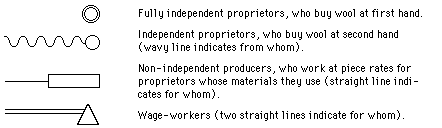

page 331
THE FIRST STAGES OF CAPlTALISM IN INDUSTRY
Let us now pass from agriculture to industry. Here, too, our task is formulated as in the case of agriculture: we have to analyse the forms of industry in post-Reform Russia, that is, to study the present system of social and economic relations in manufacturing industry and the character of the evolution of that system. Let us start with the most simple and primitive forms of industry and trace their development.
By domestic industry we mean the processing of raw materials in the household (peasant family) that produces them. Domestic industries are a necessary adjunct of natural economy, remnants of which are nearly always retained where there is a small peasantry. It is natural, therefore, that in Russian economic literature one should meet repeated references to this type of industry (the domestic production of articles from flax, hemp, wood, etc., for consumption in the home). However, the existence of domestic industry on any extensive scale is rarely found nowadays and only in the most remote localities; until very recently, Siberia, for example, was one of them. Industry as a profession does not yet exist in this form: industry here is linked inseparably with agriculture, together they constitute a single whole.
The first form of industry to be separated from patriarchal agriculture is artisan production, i.e., the production
of articles to the order of a consumer.[*] The raw materials may belong either to the customer-consumer or to the artisan, and payment for the latter's work is made either in cash or in kind (artisan's premises and keep, remuneration with part of the product, for example, flour, etc.). While constituting an essential part of urban life, artisan production is to be met on a considerable scale in the rural districts too, where it serves as a supplement to peasant farming. A certain percentage of the rural population consists of specialist-artisans engaged (sometimes exclusively, sometimes in conjunction with agriculture) in tanning, boot-making, tailoring, blacksmithery, dyeing of homespun fabrics, finishing of peasant-made woollens, flour-milling, etc. Owing to the extremely unsatisfactory state of our economic statistics we have no precise data on the degree to which artisan production is spread throughout Russia; but isolated references to this form of industry are scattered through nearly all descriptions of peasant farming and investigations of what is called "handicraft" industry,** and are even to be found in official factory statistics.*** The Zemstvo statistical returns, in registering peasant industries, sometimes single out a special group, "artisans" (cf. Rudnev, loc. cit.), but this category (according
to current terminology) includes all building workers. From the viewpoint of political economy this is utterly wrong, for the bulk of the building workers belong to the category, not of independent industrialists working on orders from customers, but of wage-workers employed by contractors. Of course, it is not always easy to distinguish the village-artisan from the small commodity-producer or from the wage-worker; this requires an economic analysis of the data concerning every small industrialist. A noteworthy attempt to draw a strict line of demarcation between artisan production and the other forms of small industry is the analysis of the returns of the Perm handicraft census of 1894-95.[*] The number of local village artisans was estimated at approximately one per cent of the peasant population, and (as might have been expected) the largest percentage of artisans was found in the uyezds where industry was least developed. As compared with the small commodity-producers, the artisans are more closely connected with the land: 80.6 per 100 artisans engage in agriculture (among the other "handicraftsmen" the percentage is lower). The employment of wage-labour is met with among artisans too, but is less developed among industrialists of this type than among the others. The size of establishments (taking the number of workers) is also smaller among the artisans. The average earnings of the artisan-cultivator are estimated at 43.9 rubles per year, and of the non-cultivator at 102.9 rubles.
We confine ourselves to these brief remarks, since a detailed examination of artisan production does not enter into our task. In this form of industry commodity production does not yet exist; here only commodity circulation makes its appearance, in the case where the artisan receives payment in money, or sells the share of the product he has received for work done and buys himself raw materials and instruments of production. The product of the artisan's
labour does not appear in the market, hardly ever leaving the sphere of peasant natural economy.[*] It is natural, therefore, that artisan production is characterised by the same routine, fragmentation and narrowness as small patriarchal agriculture. The only element of development native to this form of industry is the migration of artisans to other areas in search of employment. Such migration was fairly widely developed, particularly in the old days, in our rural districts; usually it led to the organisation of independent artisan establishments in the areas of attraction.
We have seen that the artisan appears on the market, although not with the wares he produces. Naturally, once he comes into contact with the market, he begins in time to produce for the market, i.e., becomes a commodity producer. This transition takes place gradually, at first as an experiment: goods are sold which are left on his hands by chance, or are produced in his spare time. The gradualness of the transition is heightened by the fact that the market for wares is at first extremely restricted, so that the distance between the producer and the consumer increases very slightly, and the product passes as hitherto directly from the producer to the consumer, its sale sometimes being preceded by its exchange for agricultural produce.** The further
development of commodity production is expressed in the expansion of commerce in the appearance of specialist merchants, buyers-up; the market for wares is not the small village bazaar or the district fair,[*] but the whole region, then the whole country, and sometimes even other countries. The production of industrial wares in the shape of commodities is the first step to the separation of industry from agriculture, and to mutual exchange between them. Mr. N.-on, with his characteristically stereotyped and abstract way of understanding things, limits himself to declaring that the "separation of industry from agriculture" is a quality of "capitalism" in general, without taking the trouble to examine either the different forms of this separation or the different stages of capitalism. It is important to note, therefore, that commodity production on the smallest scale in the peasant industries already begins to separate industry from agriculture, although at that stage of development the industrialist does not, in the majority of cases, separate from the agriculturist. Later on we shall show how the more developed stages of capitalism lead to the separation of industrial from agricultural enterprises, to the separation of industrial workers from agriculturists.
In the rudimentary forms of commodity production, competition among the "handicraftsmen" is still very slight, but as the market expands and embraces wide areas, this competition grows steadily stronger and disturbs the small industrialist's patriarchal prosperity, the basis of which is his virtually monopolist position. The small commodity-producer feels that his interests, as opposed to the interests of the rest of society, demand the preservation of this monopolist position, and he therefore fears competition. He exerts every effort, individually and with others, to check competition, "not to let" rivals into his district, and to consolidate his assured position as a small master possessing a
definite circle of customers. This fear of competition so strikingly reveals the true social nature of the small commodity-producer that we think it necessary to examine the relative facts in greater detail. In the first place, let us quote an example relative to handicraft. The Kaluga sheepskin dressers go off to other gubernias to treat sheepskins; this industry has declined since the abolition of serfdom; the landlords, when they released serfs for "sheepskinning," in return for a sizable tribute, took great care that the sheepskinners knew their "definite places" and did not permit other dressers to invade their districts. Organised on these lines the industry was so profitable that "places" were transferred for as much as 500 and 1,000 rubles, and if an artisan came to a district other than his own, it sometimes led to sanguinary clashes. The abolition of serfdom undermined this medieval prosperity: "the convenience of railway travel in this case also aids competition."[*] One of the phenomena of the same type observed in a number of industries and bearing fully the character of a general rule, is the desire of the small industrialists to keep technical inventions and improvements secret, to conceal profitable occupations from others, in order to stave off "fatal competition." Those who establish a new industry or introduce some improvement in an old one, do their utmost to conceal these profitable occupations from their fellow-villagers and resort to all sorts of devices for this purpose (e.g., as a make-believe they keep the old arrangements in the establishment), let no one enter their workshops, work in garrets and say nothing about their work even to their own children.** The slow development of the
brush-making industry in Moscow Gubernia "is usually attributed to the present producers' objection to having new competitors. It is said that they do all they can to conceal their work from strangers, and so only one producer has apprentices from outside."[*] Concerning the village of Bezvodnoye, Nizhni-Novgorod Gubernia, famous for its metalware industry, we read the following: "It is remarkable that to this day" (the beginning of the 80s; the industry has existed since the beginning of the 50s) "the inhabitants of Bezvodnoye carefully conceal their craft from the neighbouring peasants. They have made more than one attempt to induce the volost administration to issue an instruction making it a punishable offence to carry the craft to another village; though they have failed to get this formality adopted, each of them seems to be morally bound by such an instruction, in virtue of which they refrain from giving their daughters in marriage to inhabitants of neighbouring villages, and as far as possible avoid taking girls in marriage from those villages."[**]
The Narodnik economists have not only tried to obscure the fact that the bulk of the small peasant industrialists belong to the category of commodity-producers, but have even created quite a legend about some profound antagonism allegedly existing between the economic organisation of the small peasant industries and large-scale industry. The unsoundness of this view is also evident, by the way, from the above-quoted data. If the big industrialist stops at nothing to ensure himself a monopoly, the peasant engaging in "handicrafts" is in this respect his twin brother; the petty bourgeois endeavours with his petty resources to uphold substantially the same class interests the big manufacturer seeks to protect when he clamours for protection, bonuses, privileges, etc.***
From the foregoing there also emerge the following features of small production that merit attention. The appearance of a new industry signifies, as we have already observed, a process of growing social division of labour. Hence, such a process must necessarily take place in every capitalist society, to the extent that a peasantry and semi-natural agriculture still remain to one degree or other, and to the extent that diverse ancient institutions and traditions (due to bad means of communication, etc.) prevent large-scale machine industry from directly replacing domestic industry. Every step in the development of commodity economy inevitably leads to the peasantry producing an ever-increasing number of industrialists from their ranks; this process turns up new soil, as it were, prepares new regions in the most backward parts of the country, or new spheres in the most backward branches of industry, for subsequent seizure by capitalism. The very same growth of capitalism manifests itself in other parts of the country, or in other branches of industry, in an entirely different way; not in an increase but in a decrease in the number of small workshops and of home workers absorbed by the factory. It is clear that a study of the development of capitalism in the industry of a given country requires that the strictest distinction be made between these processes; to mix them up is to lead to an utter confusion of concepts.*
In post-Reform Russia the growth of small industries, expressing the first steps in the development of capitalism, has manifested, and manifests, itself in two ways: firstly, in the migration of small industrialists and handicraftsmen from the central, long-settled and economically most advanced gubernias, to the outer regions; secondly, in the formation of new small industries and the spread of previously existing industries among the local population.
The first of these processes is one of the manifestations of the colonisation of the border regions to which we have referred (Chapter IV, § II). The peasant industrialist in the Nizhni-Novgorod, Vladimir, Tver, Kaluga and other gubernias, sensing the increased competition accompanying the growth of the population, and the growth of capitalist manufacture and of the factory that constitute a menace to small production, leaves for the South, where "artisans" are still few, earnings high and the living cost low. In the new locality a small establishment was set up which laid the foundations for a new peasant industry that spread later in the village concerned and in its environs. The central districts of the country, possessing an industrial culture of long standing, thus helped the development of the same culture in new parts of the country, where settlement was beginning. Capitalist relations (which, as we shall see below, are also characteristic of the small peasant industries) were thus carried to the entire country.*
Let us pass to the facts that express the second of the above-mentioned processes. We shall first say that although
we note the growth of small peasant establishments and industries, we do not as yet deal with their economic organisation: from what follows it will be evident that these industries either lead to the formation of capitalist simple co-operation and merchant's capital or constitute a component part of capitalist manufacture.
The fur industry in Arzamas Uyezd, Nizhni-Novgorod Gubernia, began in the town of Arzamas and then gradually spread to the surrounding villages, embracing an ever larger area. At first there were few furriers in the villages and they employed numerous workers; labour was cheap, since people hired themselves out in order to learn the trade. After learning it they left and opened small establishments of their own, thus preparing a wider field for the domination of capital, which now controls a large section of the industrialists.[*] Let us note in general that this abundance of wage-workers in the first establishments of a rising industry and the subsequent transformation of these wage-workers into small masters is a very widespread phenomenon, bearing the character of a general rule.[**] Obviously, It would be a profound error to deduce from this that "in spite of various historical considerations . . . it is not big establishments that absorb small ones, but small ones that grow out of big ones."[***] The large size of the first establishments expresses no concentration of the industry; it is explained by the solitary character of these establishments and by the eagerness of local peasants to learn a profitable trade in them. As to the process of the spread of peasant industries from their old centres to the surrounding villages, it is observed in many cases. For example, the post-Reform period saw the deve]opment (as regards the number of villages involved in industry, the number of industrialists, and the total output) of the following exceptionally important
indudtries: the lock and cutlery industry of Pavlovo, tanning and boot-making in the village of Kimry, the knitting of woollen slippers in the town of Arzamas and in its environs,[120] the metalware industry of the village of Burmakino, the cap-making industry of the village and of the district of Molvitino, the glass, hat and lace industries of Moscow Gubernia, the jewellery industry of Krasnoselskoye District, etc.[*] The author of an article on handicraft industries in seven volosts of Tula Uyezd notes as a general phenomenon "an increase in the number of artisans since the peasant Reform," "the appearance of artisans and handicraftsmen in places where there were none in pre-Reform times."[**] A similar view is expressed by Moscow statisticians.[***] We can support this view with statistics regarding the date of origin of 523 handicraft establishments in 10 industries of Moscow Gubernia.[****]
Total No. of establishments founded
at date long in 19th century, in the
10s 20s 30s 40s 50s 60s 70s 523 13 46 3 6 11 11 37 121 275
Similarly, the Perm handicraft census revealed (according to data showing the time of origin of 8,884 small artisan and handicraft establishments) that the post-Reform period is characterised by a particularly rapid growth of small industries. It will be interesting to take a closer glance at this process of the rise of new industries. The production of woollen and semi-silk fabrics in Vladimir Gubernia began recently, in 1861. At first this was a peasant outside occupation, but later "subcontractors" made their appearance in the villages, who distributed yarn. One of the first "factory owners" at one time traded in groats, buying them up in the Tambov and Saratov "steppes." With the building of railways, grain prices were levelled out, the grain trade became concentrated in the hands of millionaires, and so our merchant decided to invest his capital in an industrial weaving enterprise; he went to work in a factory, learnt the business and became a "subcontractor."[*] Thus, the formation of a new "industry" in this locality was due to the fact that the general economic development of the country was forcing capital out of trade and directing it towards industry.[**] The investigator of the industry we have taken as an example points out that the case he has described is by no means an isolated one: the peasants who earned their living by outside employments "were pioneers in all sorts of industries, carried their technical knowledge to their native villages, got new labour forces to follow their example and migrate, and fired the imagination of the rich muzhiks with stories of the fabulous profits which the industry brought the workroom owner and the subcontractor. The rich muzhik, who used to store his money away in a chest, or traded in grain, paid heed to these stories and put his money into industrial undertakings" (ibid.). The boot and felt industries in Alexandrov Uyezd, Vladimir Gubernia, arose in some places in the following way: the owners of calico
workrooms or of small yarn-distributing shops, seeing that handweaving was declining, opened workshops of another kind, sometimes hiring craftsmen so as to get to know the trade and to teach their children.[*] To the extent that large-scale industry forces small capital out of the branch of production, this capital flows into others and stimulates their development in the same direction.
The general conditions of the post-Reform period which called forth the development of small industries in the rural districts are very vividly described by investigators of Moscow industries. "On the one hand, the conditions of peasant life have greatly deteriorated during this period," we read in a description of the lace industry, "but on the other, the requirements of the population, of that part which lives under more favourable conditions, have considerably increased.[**] And the author, using the data of the region he has taken, notes an increase in the number of those owning no horses and raising no crops, side by side with an increase in the number of peasants owning many horses and in the total number of cattle belonging to peasants. Thus, on the one hand, there was an increase in the number of persons in need of "outside earnings" and in search of industrial work, while on the other, a minority of prosperous families grew rich, accumulated "savings," and were "able to hire a worker or two, or give out work to poor peasants to be done at home." "Of course," the author explains, "we are not dealing here with cases where individuals who are known as kulaks, or blood-suckers, develop from among such families; we are merely examining most ordinary phenomena among the peasant population."
So then, local investigators point to a connection between the differentiation of the peasantry and the growth of small peasant industries. And that is quite natural. From the data given in Chapter II it follows that the differentiation of the agricultural peasantry had necessarily to be supplemented by a growth of small peasant industries. As natural economy declined, one form of raw-material processing after another turned into separate branches of industry; the formation of
a peasant bourgeoisie and of a rural proletariat increased the demand for the products of the small peasant industries, while at the same time supplying free hands for these industries and free money.[*]
Let us now examine the social and economic relations that develop among the small commodity-producers in industry. The task of defining the character of these relations is similar to the one outlined above, in Chapter II, in relation to the small farmers. Instead of tbe scale of farming, we must now take as our basis the size of the industrial establishments; we must classify the small industrialists according to the size of their output, ascertain the part wage-labour plays in each group, the conditions of technique, etc.** The handicraft house-to-house censuses that we need for such an analysis are available for Moscow Gubernia.*** For
a number of industries the investigators quote precise statistics on output, and sometimes also on the farms of each separate craftsman (date of origin of establishment, number of workers, family and hired, total annual output, number of horses owned by craftsmen, method of cultivating the soil, etc.). The investigators provide no classified tables, however, and we have therefore been obliged to compile them ourselves, dividing the craftsmen in each industry into grades (I, bottom; II, middle and III, top) according to the number of workers (family and hired) per establishment, and sometimes according to the volume of output, technical organisation, etc. In general, the criteria according to which the craftsmen have been divided into grades are based on all the data given in the description of the industry; but in different industries we have found it necessary to take different criteria for dividing the craftsmen into grades. For example, in very small industries we have placed in the bottom grade establishments with 1 worker, in the middle grade those with 2, and in the top grade those with 3 and more; whereas in the bigger industries we have placed in the bottom grade establishments with 1 to 5 workers, in the middle grade those with 6 to 10, etc. Had we not employed different methods of classification we could not have presented for each industry data concerning establishments of different size. The table drawn up on these lines is given in the Appendix (see Appendix I); it shows the criteria according to which the craftsmen in each industry are divided up into grades, gives for each grade in each industry absolute figures of the number of establishments, workers (family and hired combined), aggregate output, establishments employing wage-workers, number of wage-workers. To describe the farms of the handicraftsmen we have calculated the average number of horses per peasant household in each grade and the percentage of craftsmen who cultivate their land with the aid of "a labourer" (i.e.,
resort to the hire of rural workers). The table covers a total of 37 industries, with 2,278 establishments and 11,833 employed and an aggregate output valued at over 5 million rubles; but if we subtract the 4 industries not included in the general list because of incompleteness of data, or because of their exceptional character,[*] there is a total of 33 industries, 2,085 establishments, 9,427 workers and an aggregate output of 3,466,000 rubles, or, with corrections (in the case of 2 industries), about 3 3/4 million rubles.
Since there is no need to examine the data for all the 33 industries, and as it would be too arduous a task, we have divided these industries into four categories: 1) 9 industries with an average of 1.6 to 2.5 workers (family and hired combined) per establishment; 2) 9 industries with an average of 2.7 to 4.4 workers; 3) 10 industries with an average of 5.1 to 8.4 workers; and 4) 5 industries with an average of 11.5 to 17.8 workers. Thus, in each category we have combined industries that are fairly similar as regards the number of workers per establishment, and in our further exposition we shall limit ourselves to the data for these four categories of industries. We give these data in extenso. (See Table on p. 347.)
This table combines those principal data on the relations between the top and bottom grades of handicrafts men that will serve us for our subsequent conclusions. We can illustrate the summarised data for all four categories with a chart drawn up in exactly the same way as the one with which, in Chapter II, we illustrated the differentiation of the agricultural peasantry. We ascertain what percentage each grade constitutes of the total number of establishments, of the total number of family workers, of the total number of establishments with wage-workers, of the total number of workers (family and wage combined), of the aggregate output and of the total number of wage-workers, and we indicate these percentages (in the manner described in Chapter II) on the chart (see chart on p. 349).
Categories Absolute % distribu- a) % of estab- Average output Average number Total by grades Total by grades Total by grades Total by grades I II III I II III I II III I II III
831
100
57
30
13
1.9
1.28
2.4
3.3
2,085
100
53
32
15
2.2
1.8
2.6
2.9
Let us now examine the conclusions to be drawn from these data.
We begin with the role of wage-labour. In the 33 industries wage-labour predominates over family labour: 51% of the workers are hired; for the "handicraftsmen" of Moscow Gubernia this percentage is even lower than the actual one. We have computed the data for 54 industries of Moscow Gubernia for which exact figures as to wage-workers employed are available, and got the figure of 17,566 wage-workers out of a total of 29,446 workers, i.e., 59.65%. For Perm Gubernia the percentage of wage-workers among all handicraftsmen and artisans combined was established as 24.5%, and among commodity-producers alone, as from 29.4 to 31.2%. But these gross figures, as we shall see below, embrace not only small commodity-producers, but also capitalist manufacture. Far more interesting, therefore, is the conclusion that the role of wage-labour rises parallel to the increase in the size of establishments: this is observed both in comparing one category with another and in comparing the different grades in the same category. The larger the establishments, the higher the percentage of those employing wage-workers and the higher the percentage of wage-workers. The Narodnik economists usually limit themselves to declaring that among the "handicraftsmen" small establishments with exclusively family workers prevail, and in support of this often cite "average" figures. As is evident from the data given, these "averages" are unsuitable for characterising the phenomenon in this regard, and the numerical preponderance of small establishments with family workers does not in the least eliminate the basic fact that the tendency of small commodity production is towards the ever-growing employment of wage-labour, towards the formation of capitalist workshops. Moreover, the data cited also refute another, no less widespread, Narodnik assertion, namely, that wage-labour in "handicraft" production really serves to "supplement" family labour, that it is resorted to not for the purpose of proit-making, etc.* Actually, however, it turns out that among the small
page 351
industrialists -- just as among the small agriculturists -- the growing employment of wage-labour runs parallel to the increase in the number of family workers. In the majority of industries we see that the employment of wage-labour increases as we pass from the bottom grade to the top, notwithstanding the fact that the number of family workers per establishment also increases. The employment of wage-labour does not smooth out differences in the size of the "handicraftsmen's" families, but accentuates them. The chart very clearly shows this common feature of the small industries: the top grade employs the bulk of the wage-workers, despite the fact that it is best provided with family workers. "Family co-operation " is thus the basis of capitalist co-operation.[*] It goes without saying, of course, that this "law" applies only to the smallest commodity-producers, only to the rudiments of capitalism; this law proves that the tendency of the peasantry is to turn into petty bourgeois. As soon as workshops with a fairly large number of wage-workers arise, the significance of "family co-operation" must inevitably decline. And we see, indeed, from our data that this law does not apply to the biggest grades of the top categories. When the "handicraftsman" turns into a real capitalist employing from 15 to 30 wage-workers, the part played by family labour in his workshops declines and becomes quite insignificant (for example, in the top grade of the top category, family workers constitute only 7% of the total number of workers). In other words, to the extent that the "handicraft" industries are so small that "family co-operation" predominates in them, this family co-operation is the surest guarantee of the development of capitalist co-operation. Here, consequently, stand out in full relief the dialectics of commodity production, which transform "working with our own hands" into working with others' hands, into exploitation.
Let us pass to the data on productivity of labour. The data on total output per worker in each grade show that with the increase in the size of the establishment labour productivity improves. This is to be observed in the overwhelm-
ing majority of the industries, and in all categories of industries without exception; the chart graphically illustrates this law, showing that the share of the top grade in total output is greater than is its share in the total number of workers; in the bottom grade the reverse is the case. The total output per worker in the establishments of the top grades is from 20 to 40 per cent higher than that in the bottom grade establishments. It is true that the big establishments usually have a longer working period and sometimes handle more valuable material than do the small ones, but these two circumstances cannot eliminate the fact that labour productivity is considerably higher in the big workshops than in the small ones.[*] Nor can it be otherwise. The big establishments have from 3 to 5 times as many workers (family and hired combined) as the small ones, and co-operation on a larger scale cannot but increase the productivity of labour. The big workshops are always better equipped technically, they have better implements, tools, accessories, machines, etc. For example, in the brush industry, a "properly organised workshop" must have as many as 15 workers, and in hook-making 9 to 10 workers. In the toy industry the majority of handicraftsmen make shift with ordinary stoves for drying their goods; the bigger toy-makers have special drying ovens, and the biggest makers have special drying premises. In metal toy-making, 8 makers out of 16 have special workshops, divided as follows: I) 6 have none; II) 5 have 3; and III) 5 have 5. A total of 142 mirror and picture-frame makers have 18 special workshops, the figures by grades being: I) 99 have 3; II) 27 have 4; and III) 16 have 11. In the screen-plaiting industry screens are plaited by hand (in grade I), and woven mechanically (in grades II and III). In the tailoring industry the number of sewing-machines per owner according to grade is as follows: I) 1.3; II) 2.1; and III) 3.4, etc., etc. In investigating the furniture industry, Mr. Isayev notes that the one-man business suffers the following disadvantages: 1) lack of a
complete set of tools; 2) limited assortment of articles made, because there is no room in the craftsman's hut for bulky articles; 3) much higher cost of materials when bought retail (30 to 35% higher); 4) necessity of selling wares cheaper, partly due to lack of confidence in the small "handicraftsman" and partly to his need of money.[*] It is well known that exactly the same sort of thing is to be observed not only in the furniture industry, but also in the vast majority of small peasant industries. Lastly, it must be added that the value of the goods produced per worker not only increases from the bottom to the top grade in the majority of industries, but also from the small to the big industries. In the first category of industries the average output per worker is 202 rubles, in the second and third about 400 rubles, and in the fourth over 500 rubles (the figure 381 should, for the reason stated above, be increased by about fifty per cent). This circumstance points to the connection between the rise in the price of raw materials and the ousting of the small establishments by the big ones. Every step in the development of capitalist society is inevitably accompanied by a rise in the price of such materials as timber, etc., and thus hastens the doom of the small establishments.
From the foregoing it follows that the relatively big capitalist establishments also play a tremendous part in the small peasant industries. While constituting a small minority of the total number of establishments, they concentrate, however, quite a big share of the total number of workers, and a still bigger share of the total output. Thus, in 33 industries of Moscow Gubernia, the top-grade establishments, constituting 15% of the total, account for 45% of the aggregate output; while the bottom-grade establishments, constituting 53% of the total, account for only 21% of the aggregate output. It goes without saying that the distribution of the net income from the industries must be far more uneven. The data of the Perm handicraft census of 1894-95 clearly illustrate this. Selecting the largest
establishments in 7 industries we get the following picture of the relations between the small and big establishments.[*]
Estab- No. of Number Gross income Wages Net Income family hired total total per total per total per Rubles Rubles Rubles
All estab-
Summing up the conclusions that follow from the data we have analysed, we must say that the economic system of the small peasant industries is typically petty bourgeois, the same as that which we have seen among the small farmers. The expansion, development and improvement of the small peasant industries cannot take place in the present social and economic atmosphere except by generating a minority of small capitalists on the one hand, and a majority of wage-workers, or of "independent craftsmen" who lead a harder and worse life than the wage-workers, on the other. We observe, consequently, in the smallest peasant industries the most pronounced rudiments of capitalism -- of that very capitalism which various economists of the Manilov[121] type depict as something divorced from "people's production." From the viewpoint of the home market theory the facts we have examined are also of no little importance. The development of small peasant industries leads to an expansion of the demand by the more prosperous industrialists for means of production and for labour-power, which is drawn from the ranks of the rural proletariat. The number of wage-workers employed by village artisans and small industrialists all over Russia should be quite impressive, if in the Perm Gubernia alone, for example, there are about 6,500.*
The establishment by small commodity-producers of relatively large workshops marks the transition to a higher form of industry. Out of scattered small production rises capitalist simple co-operation. "Capitalist production only then really begins . . . when each individual capital employs simultaneously a comparatively large number of labourers; when consequently the labour-process is carried on on an extensive scale and yields, relatively, large quantities of products. A greater number of labourers working together, at the same time, in one place (or, if you will, in the same field of labour), in order to produce the same sort of commodity under the mastership of one capitalist, constitutes, both historically and logically, the starting-point of capitalist production. With regard to the mode of production itself, manufacture, in its strict meaning, is hardly to be distinguished, in its earliest stages, from the artisan trades of the guilds, otherwise than by the greater number of workmen simultaneously employed by one and the same individual capital. The workshop of the medieval master handicraftsman is simply enlarged" (Das Kapital, I2, S. 329).[122]
It is this starting-point of capitalism that is to be seen, consequently, in our small peasant ("handicraft") industries. The different historical situation (absence or slight development of guild handicrafts) merely changes the way in which identical capitalist relations are made manifest. The difference between the capitalist workshop and the workshop of the small industrialist lies at first only in the number of workers simultaneously employed. That is why the first capitalist establishments, being numerically in the minority, are submerged, as it were, in the general mass of small establishments. However, the employment of a larger number of workers inevitably leads to consecutive changes in production itself, to the gradual transformation of production. Under primitive hand technique differences between the individual workers (in strength, dexterity, skill, etc.) are always very considerable; if only for this reason the position of the small industrialist is extremely precarious; his dependence upon market fluctuations
assumes the most burdensome forms. Where, however, several workers are employed in an establishment, the individual differences between them are smoothed out in the workshop itself: "the collective working day of a large number of workmen simultaneously employed . . . gives one day of average social labour,"[123] and as a consequence, the manufacture and sale of the products of the capitalist workshop acquire incomparably greater regularity and stability. It becomes possible to make fuller use of premises, warehouses, implements, instruments of labour, etc.; and this leads to a cheapening of production costs in the larger workshops.[*] The organisation of production on a larger scale and the simultaneous employment of many workers require the accumulation of a fairly large capital, which is often formed, not in the sphere of production, but in the sphere of trade, etc. The size of this capital determines the form in which the proprietor himself takes part in the enterprise -- whether he himself is a worker, if his capital is still very small, or whether he gives up working himself and specialises in commercial and entrepreneur functions. "One can establish a connection between the position of the workshop owner and the number of his workers" -- we read, for example, in a description of the furniture industry. "The employment of 2 or 3 workers provides the proprietor with such a small surplus that he has to work alongside of them. . . . The employment of 5 workers already gives the proprietor enough to enable him to give up manual labour in some measure, to
take it easy somewhat, and to engage mainly in the last two business functions" (i.e., purchase of materials and sale of goods). "As soon as the number of wage-workers reaches 10 or exceeds this figure, the proprietor not only gives up manual labour but practically ceases to supervise his workers: he appoints a foreman for the purpose. . . . He now becomes a small capitalist, a 'born master'" (Isayev, Industries of Moscow Gubernia, I, 52-53). The statistics we have cited graphically confirm this description, showing a decline in the number of family workers with the appearance of a considerable number of wage-workers.
The general significance of capitalist simp]e co-operation in the development of capitalist forms of industry is described by the author of Capital as follows:
"Historically, however, this form is developed in opposition to peasant agriculture and to the carrying on of independent handicrafts whether in guilds or not. . . . Just as the social productive power of labour that is developed by co-operation, appears to be the productive power of capital, so co-operation itself, contrasted with the process of production carried on by isolated independent labourers, or even by small employers, appears to be a specific form of the capitalist process of production. It is the first change experienced by the actual labour-process, when subjected to capital. . . . The simultaneous employment of a large number of wage-labourers, in one and the same process, which is a necessary condition of this change, also forms the starting-point of capitalist production. . . . If then, on the one hand, the capitalist mode of production presents itself to us historically, as a necessary condition to the transformation of the labour-process into a social process, so, on the other hand, this social form of the labour-process presents itself, as a method employed by capital for the more profitable exploitation of labour, by increasing that labour's productiveness.
"In the elementary form, under which we have hitherto viewed it, co-operation is a necessary concomitant of all production on a large scale, but it does not, in itself, represent a fixed form characteristic of a particular epoch in the development of the capitalist mode of production. At the most it appears to do so, and that only approximately, in
the handicraft-like beginnings of manufacture. . ." (Das Kapital, I2, 344-345).[125]
We shall see later how closely small "handicraft" establishments in Russia which employ wage-workers are connected with incomparably more highly developed and more widespread forms of capitalism. As for the role of these establishments in the small peasant industries, the statistics already given show that these establishments create fairly wide capitalist co-operation in place of the previous scattered production and considerably raise the productivity of labour.
Our conclusion as to the tremendous role of capitalist co-operation in the small peasant industries and as to its progressive significance is in sharp contrast to the widespread Narodnik doctrine of the predominance of all sorts of manifestations of the "artel principle" in the small peasant industries. As a matter of fact, the reverse is the case; the distinguishing feature of small industry (and handicrafts) is the extremely scattered nature of the individual producers. In support of the contrary view Narodnik literature could advance nothing more than a collection of individual examples, the overwhelming majority of which do not apply to co-operation at all, but to temporary, miniature associations of masters, big and small, for the common purchase of raw materials, for the building of a common workshop, etc. Such artels do not in the least affect the predominant significance of capitalist co-operation.* To obtain an exact idea of how widely the "artel principle" is actually applied it is not enough to cite examples taken at random here and
there; it is necessary to take the data for some area which has been thoroughly investigated, and to examine the relative incidence and significance of the various forms of co-operation. Such, for example, are the data of the Perm "handicrafts" census of 1894-95; and we have shown elsewhere (Studies, pp. 182-187[*]) what an amazing dispersion of small industrialists was revealed by the census, and what importance attaches to the very few big establishments. The conclusion we have drawn as to the role of capitalist co-operation is based not on isolated examples, but on the precise data of the house-to-house censuses, which embrace scores of the most diverse industries in different localities.
As we know, the small peasant industries in many cases give rise to special buyers-up, who are particularly engaged in the commercial operations of marketing products and purchasing raw materials, and who usually in one way or another subject the small tradesmen to themselves. Let us see what connection this phenomenon has with the general system of small peasant industries and what its significance is.
The principal economic operation of the buyer-up is to buy goods (finished products or raw materials) in order to resell them. In other words, the buyer-up is a representative of merchant's capital. The starting-point of all capital -- both industrial and merchant's -- is the accumulation of free money in the hands of individuals (by free money we mean that money which is not needed for personal consumption, etc.). How this property differentiation takes place in our rural districts has been shown in detail above by the data on the differentiation of the agricultural and the industrial peasantry. These data revealed one of the conditions giving rise to the appearance of the buyer-up, namely: the scattered nature, the isolation of the small producers, tbe existence of economic conflict and strife among them.
Another condition relates to the character of the functions performed by merchant's capital, i.e., to the marketing of wares and to the purchase of raw materials. Where the development of commodity production is slight, the small producer limits himself to disposing of his wares in the small local market, sometimes even to disposing of them directly to the consumer. This is the lowest stage of the development of commodity production, hardly to be distinguished from artisan production. As the market expands, this petty, scattered marketing (which fully conforms to petty, scattered production) becomes impossible. In the big market, selling must he on a big, on a mass scale. And so the petty character of production proves to be in irreconcilable contradiction with the need for big, wholesale marketing. Under the existing social and economic conditions, with the isolation of the small producers and their differentiation, this contradiction could only be resolved by the well-to-do minority taking charge of marketing, concentrating it in their hands. By buying-up goods (or raw materials) on a large scale, the buyers-up thus cheapened marketing costs and transformed marketing from a petty, casual and irregular operation into a large and regular one; and this purely economic advantage of large-scale marketing inevitably led to the small producer finding himself cut off from the market and defenceless in face of the power of merchant's capital. Thus, under commodity economy, the small producer inevitably falls into dependence upon merchant's capital by virtue of the purely economic superiority of large, mass-scale marketing over scattered, petty marketing.* It goes without saying that actually the profits of the buyers-up are often far from limited to the difference between the returns of mass sales
and those of petty sales, just as the profits of the industrial capitalists often consist of deductions from normal wages. Nevertheless, to explain the profits of the industrial capitalists we must assume that labour-power is sold at its real value. Similarly, to explain the role of the buyer-up we must assume that he buys and sells goods in accordance with the general laws of commodity exchange. Only these economic causes of the domination of merchant's capital can provide the key to an understanding of the variety of forms which it assumes in real life, and among which we constantly meet (there can be no doubt of that) the plainest fraud. To proceed otherwise, as the Narodniks usually do, that is, to confine oneself to enumerating the various tricks of the "kulaks," and on these grounds completely to brush aside the economic nature of the phenomenon would be to adopt the viewpoint of vulgar economics.[*]
To substantiate our thesis concerning a necessary causal relation between small production for the market and the domination of merchant's capital, lot us deal in greater detail with one of the best descriptions of how the buyer-up appears and of the part he plays. We have in mind the investigation of the lace industry in Moscow Gubernia (Industries of Moscow Gubernia, Vol. VI, Pt. II). The "tradeswomen" came into being in the following way. In the 1820s, when this industry first developed, and later, when the number of lace-makers was still small, the principal buyers were the landlords, the "gentry". The consumer was in the neighbourhood of the producer. As the industry spread, the peasants began to send their lace to Moscow "as chance offered," for example, through comb-makers. The inconvenience of
this primitive form of marketing very soon made itself felt: "how can a muzhik not engaged in this business go from house to house?" The sale of the lace was entrusted to one of the lace-makers, who was compensated for the time she lost. "She also brought back thread for the lace." Thus the inconveniences of isolated marketing led to turning trade into a special function performed by one person who gathered the wares from many lace-makers. The patriarchal proximity of these women workers one to the other (relatives, neighbours, fellow-villagers, etc.) at first gave rise to attempts at the co-operative organisation of sales, to attempts at entrusting this function to one of the women workers. But money economy at once causes a breach in the age-old patriarchal relations, at once gives rise to the phenomena we noted above when examining the mass-scale data on the differentiation of the peasantry. Production for sale teaches that time is money. It becomes necessary to compensate the intermediary for her lost time and labour; she becomes accustomed to this occupation and begins to make it her profession. "Journeys of this kind, repeated several times, gave rise to the tradeswoman type" (loc. cit., 30). The woman who has been to Moscow several times establishes the permanent connections which are so necessary for proper marketing. "Thus the need and habit of living on earnings from commission operations develops." In addition to commission earnings, the tradeswoman "does what she can to advance the price of materials, paper, thread"; she sells the lace above the set price and pockets the difference; the tradeswomen declare that the price received was less than the one agreed on: "take it or leave it," they say. "The tradeswomen begin . . . to bring goods from the towns and make a considerable profit." The commission agent thus becomes an independent trader who now begins to monopolise sales and to take advantage of her monopoly to subjugate the lace-makers completely. Usurious operations appear alongside commercial operations -- the lending of money to the lace-makers, the taking of goods from them at reduced prices, etc. "The girls . . . pay 10 kopeks per ruble as a commission for sales. . . . They know very well that the tradeswoman makes even more out of them by selling the lace at a higher price. But they simply do not know how to arrange things differently. When
I suggested that they should take turns in going to Moscow, they replied that this would be worse, because they did not know where to sell the lace, whereas the tradeswoman already knew all the places. She sells the finished lace for them and brings back orders, materials, patterns, etc.; she always gives them money in advance, or on loan, and one can even sell her a piece of lace outright, should the need arise. Thus, on the one hand, the tradeswoman becomes a most needed, indispensable person; on the other, she gradually develops into a person who cruelly exploits the labour of others -- a woman kulak" (32). To this it should be added that such types develop from among the small producers themselves: "However many enquiries we made, we found that all the tradeswomen had formerly been lace-makers themselves, and consequently, were familiar with the trade; they came from the ranks of these same lace-makers; they had had no capital to start with, and had only gradually begun to trade in calico and other goods, as they made money out of their commissions" (31).* There can, therefore, be no doubt that under commodity economy, not only prosperous industrialists in general, but also, and particularly, representatives of merchant's capital emerge from among the small producers.** And once they have emerged, the elimination of small, scattered marketing by large-scale, wholesale marketing becomes inevitable.*** Here are a few examples of how marketing is organised by the bigger "handicraft" proprietors who are at the same time buyers-up. The marketing of abacuses by craftsmen of Moscow Gubernia (see the statistics
relating to them in our table; Appendix I) is done mainly at fairs all over Russia. To do business oneself at a fair one must have, firstly, a considerable amount of capital, as only wholesale trade is conducted at the fairs; and, secondly, one must have an agent to buy up wares where they are made, and to send them on to the merchant. These requirements are met "by the one merchant-peasant," who is also a "craftsman," possesses a considerable amount of capital and engages in finishing the abacuses (i.e., fitting the frames and beads) and marketing them; his six sons are "engaged exclusively in commerce," so that two persons have to be hired to cultivate the allotment. "It is not surprising," observes the investigator, "that he is able to sell his wares . . . at all the fairs, whereas the smaller traders usually sell theirs at nearby markets" (Industries of Moscow Gubernia, VII, Pt. I, Sec. 2, p. 141). In this case the representative of merchant's capital was still so little differentiated from the general mass of "muzhik cultivators" that he even continued to retain his allotment farm and his large patriarchal family. The spectacle-frame makers of Moscow Gubernia are entirely dependent upon the industrialists to whom they sell their wares. These buyers-up are at the same time "craftsmen" possessing their own workshops; they lend raw materials to the poor on condition that the finished articles are delivered to them, the "masters," etc. The small industrialists made an attempt to sell their wares in Moscow themselves, but failed; it did not pay to sell goods in small quantities amounting to a matter of 10 or 15 rubles (ibid., 263). In the lace industry of Ryazan Gubernia the tradeswomen make profits amounting to 12 to 50% of the lace-makers' earnings. The "substantial" tradeswomen have established regular-connections with marketing centres and send goods by mail, which saves travelling expenses. How necessary wholesale marketing is can be seen from the fact that the traders consider that even sales amounting to 150 and 200 rubles do not cover marketing expenses (Transactions of the Handicraft Commission, VII, 1184). The marketing of Belyov lace is organised as follows. In the town of Belyov there are three grades of tradeswomen: 1) The distributor, who hands out small orders, makes the round of the lace-makers herself and delivers the finished article to the
bigger tradeswomen. 2) The subcontractor, who places orders herself, or buys up goods from the distributors and delivers them to the big cities, etc. 3) The big tradeswomen (2 or 3 "firms"), who do business with commission agents, to whom they send lace and from whom they receive big orders. It is "practically impossible" for the provincial trades women to sell their goods to the big shops: "the shops prefer to do business with the wholesale buyers-up who deliver the wares in big quantities . . . of the most diverse patterns"; the tradeswomen are obliged to sell to these "suppliers"; "it is from them that they learn all the requirements of the market; it is they who fix prices; in short, but for them, there is no way out" (Transactions of the Handicraft Commission, X, pp. 2823-2824). Numerous such examples could be given. But those given are quite sufficient to show how utterly impossible is small, scattered marketing where production is for big markets. In view of the scattered state of the small producers and of their complete differentiation* large-scale marketing can only be organised by large capital, which, by virtue of this, reduces the handicraftsmen to a position of utter helplessness and dependence. One can therefore judge how absurd are the current Narodnik theories which recommend helping the "handicraftsmen" by "organising marketing." From the purely theoretical aspect such theories belong to the category of petty-bourgeois utopias, based on a failure to understand the indissoluble connection between commodity production and capitalist marketing.** As for the facts of Russian reality, the authors of such theories simply ignore them: they ignore the scattered state of the small commodity-producers and
their utter differentiation; they ignore the fact that it is from their very midst that "buyers-up" have emerged and continue to emerge; that in capitalist society marketing can only be organised by big capital. It is natural that if one leaves out of account all these features of the unpleasant but undoubted reality, it is not difficult to conjure up phantasies* ins Blaue hinein.[**]
We are unable here to go into descriptive details showing exactly how merchant's capital manifests itself in our "handicraft" industries, and how helpless and wretched is the position in which it places the small industrialist. Moreover, in the next chapter we shall have to describe the dominance of merchant's capital at a higher stage of development, where (as an adjunct of manufacture) it organises capitalist domestic industry on a mass scale. Here let us confine ourselves to indicating the main forms assumed by mer-
chant's capital in the small industries. The first and simplest form is the purchase of wares by the merchant (or owner of a big workshop) from the small commodity producers. Where buying-up is poorly developed, or where there are numerous competing buyers-up, the sale of goods to the merchant may not differ from any other sale; but in the vast majority of cases the local buyer-up is the only person to whom the peasant can regularly dispose of his wares, and then the buyer-up takes advantage of his monopoly position to force the price he pays to the producer down to rock bottom. The second form of merchant's capital consists in its combination with usury: the peasant, who is constantly in need of money, borrows it from the buyer-up and repays the debt with his goods. The sale of his goods in this case (which is very widespread) always takes place at artificially reduced prices, which often do not leave the handicraftsman as much as a wage-worker could get. Moreover, the relations of the creditor to the debtor inevitably lead to the personal dependence of the latter, to bondage, to the creditor taking advantage of specific occasions of the debtor's need, etc. The third form of merchant's capital is payment for wares with goods, a common practice among village buyers-up. The specific feature of this form is that it is typical not only of the small industries but of absolutely all undeveloped stages of commodity production and capitalism. Only large-scale machine industry, which has socialised labour and broken radically with all patriarchal usages, has eliminated this form of bondage by causing it to be legally prohibited in large industrial establishments. The fourth form of merchant's capital is payment by the merchant with the particular kinds of goods that are needed by the "handicraftsman" for production (raw or auxiliary materials, etc.). The sale of materials of production to the small industrialist may also be an independent operation of merchant's capital, quite analogous to the operation of buying-up finished goods. When, however, the buyer-up of finished goods begins to pay for them with the raw materials needed by the "handicraftsman," this marks a very big step in the development of capitalist relations. Having cut off the small industrialist from the finished-goods market, the buyer-up now cuts him off from the raw-materials market, and thereby
brings him completely under his sway. It is only one step from this form to that higher form of merchant's capital under which the buyer-up directly hands out materials to the "handicraftsmen" to be worked up for a definite payment. The handicraftsman becomes de facto a wage-worker, working at home for the capitalist; the merchant's capital of the buyer-up is here transformed into industrial capital.[*] Capitalist domestic industry arises. In the small industries it is met with more or less sporadically; its introduction on a mass scale, however, relates to the next and higher stage of capitalist development.
Such is the usual heading of special sections in descriptions of peasant industries. In view of the fact that at the initial stage of capitalism which we are examining the industrialist has hardly yet become differentiated from the peasant, his connection with the land is something indeed highly characteristic and requires special examination.
Let us begin with the data given in our table (see Appendix I). To characterise the farms of the "handicraftsmen" there are given here, firstly, data on the average number of horses owned by the industrialists of each grade. By combining the 19 industries for which such data are available we get an all-round average per industrialist (master or petty-master) of 1.4 horses, and for the grades: I) 1.1; II) 1.5 and III) 2.0. Thus the higher the proprietor's position in respect to the size of his industrial establishment, the higher his position as an agriculturist. The biggest industrialists have almost twice as many draught animals as the small ones. But with regard to their farms even the smallest industrialists (grade I) are above the middle peasantry, for the general average for Moscow Gubernia in 1877 was 0.87 horses per peasant household.** Thus it is only the relatively
prosperous peasants who become master and petty-master industrialists. The poor peasants, on the other hand, do not, in the main, provide master industrialists but worker industrialists (wage-workers employed by "handicraftsmen," migratory workers, etc.). Unfortunately, for the overwhelming majority of Moscow industries no data are available on the farms of the wage-workers engaged in small industries. An exception is the hat industry (see general data on it in our table, Appendix I). Here are exceedingly instructive data on the farms of master hat-makers and worker hat-makers.
No. of Of this No. of households cultivating not by
Masters 18 1.5 1.8 2.5 52 46 6 17 -- 1 -- 54
of the householder; 2) by "hiring," i.e., by hiring some neighbour who tills the land of the "distressed" householder with his own implements. This method of cultivation is characteristic of the poor peasant who is being steadily ruined. Of opposite significance is the third method, namely, cultivation with the aid of a "labourer," i.e., the hire of agricultural ("land") labourers by the farmer. These workers are usually hired for the whole summer; and, particularly in the busy season, the master usually reinforces them with employees from his workshop. "Thus, the method of cultivating the soil with the aid of the 'land' labourer is quite a profitable one" (Industries of Moscow Gubernia, VI, I, 48). In our table we have assembled the data on this method of cultivation for 16 industries, in 7 of which there are no masters who hire "land labourers." In all these 16 industries the master industrialists who hire rural labourers constitute 12% of the total, and by grades: I) 4.5%; II) 16.7% and III) 27.3%. The better off the industrialists are, the more often we find rural entrepreneurs among them. The analysis of the data on the industrial peasantry consequently reveals the same picture of parallel differentiation in both industry and agriculture that we observed in Chapter II on the basis of the data on the agricultural peasantry.
The hiring of "land labourers" by "handicraft" masters is very widespread in all the industrial gubernias. We meet, for example, with references to the hiring of agricultural labourers by the rich bast-matting makers of Nizhni-Novgorod Gubernia. The furriers of the same gubernia hire agricultural labourers, who usually come from the purely agricultural surrounding villages. The "village-community peasants of Kimry Volost engaged in the boot industry find it profitable to hire for the cultivation of their fields men and women labourers who come to Kimry in large numbers from Tver Uyezd and neighbouring . . . localities." The pottery decorators of Kostroma Gubernia send their wage-workers, when not occupied at their regular jobs, to work in the fields.* "The independent masters" (metal-beaters of Vladimir Gubernia) "keep special field workers";
that is why their fields are well cultivated, although they themselves "quite often can neither plough nor mow."[*] In Moscow Gubernia, the hiring of "land labourers" is resorted to by many industrialists apart from those about whom data are given in our table; for example, pin-makers, felt-makers and toy-makers send their workers to jobs in the fields too; the glass-bead-makers, metal-beaters, button makers, cap-makers and harness-makers employ agricultural labourers, etc.[**] The significance of this fact -- the hiring of agricultural workers by peasant industrialists -- is very great. It shows that even in the small peasant industries the phenomenon characteristic of all capitalist countries is beginning to be manifested, and that goes to confirm the progressive historical role of capitalism, namely, a rise in the standard of living of the population, an increase in its requirements. The industrialist is beginning to look down upon the "raw" agriculturist with his coarse patriarchal manners and is trying to rid himself of the hardest and worst-paid agricultural jobs. In the small industries, in which capitalism is least developed, this is to be observed very slightly as yet; the industrial worker is only just beginning to be differentiated from the agricultural worker. In the succeeding stages of development of capitalist industry this phenomenon, as we shall see, is to be observed on a mass scale.
The importance of the "tie between agriculture and industry" compels us to review in greater detail the data relating to other gubernias besides Moscow.
Nizhni-Novgorod Gubernia. Among the mass of bast-matting makers agriculture is on the decline, and they are neglecting the land; about 1/3 of the winter-crop area and 1/2 of the spring-crop area are "wasteland." For the "well-to-do muzhiks," however, "the land is no longer a wicked stepmother, but a mother bountiful": they have enough animals, they have manure, they rent land, they try to keep their strips out of the periodical redistribution and tend them better. "Now the wealthy muzhik has become a landlord while the other muzhik, the poor one, is in serf dependence
upon him" (Transactions of the Handicraft Commission, III, 65). The furriers "are bad farmers," but here too we must single out the bigger proprietors who "rent land from their poor fellow-villagers," etc. The following is a summary of typical budgets of furriers of different groups:
R L Income Expenditure agri- in-
Rich
14
3
2
19
5
-
212.8
697
409.8
500
909.8
212.8
503
715.8
+194
70
In Industries of Vladimir Gubernia the question of the relation between industry and agriculture is dealt with much more thoroughly than in any other work of investigation. For a whole number of industries precise data are given on the farms, not only of "handicraftsmen" in general (such "average" figures, as is clear from all the aforesaid, are quite fictitious), but of the various grades and groups of "handicraftsmen," such as: big masters, small masters, wage-
workers; workroom owners and weavers; master industrialists and the rest of the peasantry; households engaged in local and in outside industries, etc. The general conclusion drawn by Mr. Kharizomenov from these data is that if the "handicraftsmen" are divided into three categories, viz. -- 1) big industrialists; 2) small and medium industrialists; 3) wage-workers, there is to be observed a deterioration of agriculture as from the first category to the third, a diminution in the amount of land and animals, an increase in the proportion of "distressed" farms, etc.* Unfortunately, Mr. Kharizomenov examined these data too restrictedly and one-sidedly, and paid no attention to the parallel and independent process of the differentiation of the peasant agriculturists. That is why he failed to draw from these data the conclusion that inevitably follows from them, namely, that the peasantry both in agriculture and in industry are splitting up into a petty bourgeoisie and a rural proletariat.** That is why, in describing the different industries, he quite often sinks to the traditional Narodnik arguments about the influence of "industry" in general over "agriculture" in general
(see, for example, Industries of Vladimir Gubernia, II, 288; III, 91), i.e., to the ignoring of the profound contradictions in the very system of both industry and agriculture, the existence of which he himself was obliged to admit. Another investigator of the industries of Vladimir Gubernia, Mr. V. Prugavin, is a typical spokesman of the Narodnik views on this subject. Here is a sample of his reasoning. The cotton-weaving industry in Pokrov Uyezd "cannot be regarded at all as a harmful factor (sic!!) in the agricultural life of the weavers" (IV, 53). The data testify to the poor farms of the mass of weavers, and to the fact that among the workroom owners, farming is conducted at a level far above the general (ibid.); from the tables it is evident that some workroom owners hire agricultural labourers too. Conclusion: "industry and agriculture march hand in hand, conditioning each other's development and prosperity" (60). A fine specimen of the phrases used to obscure the fact that the development and prosperity of the peasant bourgeoisie go hand in hand both in industry and in agriculture.[*]
The data of the Perm handicraft census of 1894-95 revealed the same thing: it is among the small commodity-producers (masters and petty masters) that the level of agriculture is highest and rural labourers are met with; among the artisans agriculture is on a lower level, while among the craftsmen who work for buyers-up the condition of agriculture is worst (as to the agriculture of the wage-workers and of various groups of masters, no data, unfortunate]y, have been gathered). The census also revealed that the "handicraftsmen" who do not engage in agriculture differ from those who do in that 1) their labour productivity is higher, 2) their net incomes from industry are incomparably higher, and 3) their level of culture and literacy is higher. All these are evidences which confirm the conclusion drawn above,
namely, that even the initial stage of capitalism manifests the tendency of industry to raise the population's standard of living (see Studies, p. 138 and foll.).[*]
Lastly, the following point is connected with the question of the relation of industry to agriculture. The larger establishments usually have a longer working period. For example, in the furniture industry of Moscow Gubernia, the working period of those working in plain wood equals 8 months (the average workshop staff here is 1.9 workers); for the bent-wood establishments it is 10 months (2.9 workers per establishment), and in the heavy-furniture trade it is 11 months (4.2 workers per establishment). In the shoe industry of Vladimir Gubernia the working period in 14 small workshops equals 40 weeks, and that in 8 large ones (9.5 workers per establishment, as against 2.4 in the small workshops) 48 weeks, etc.[**] Naturally, this fact is connected with the large number of workers (family, hired industrial and hired agricultural) in the big establishments and explains the great stability of these establishments and their tendency to specialise in industrial activities.
Let us now sum up the data given above on "industry and agriculture." It is usual at the lower stage of capitalism which we are reviewing for the industrialist still to be scarcely differentiated from the peasant. The combination of industry with agriculture plays an extremely important part in aggravating and accentuating the differentiation of the peasantry: the prosperous and the well-off peasants open workshops, hire workers from among the rural proletariat, and accumulate money for commercial and usurious transactions. The peasant poor, on the other hand, provide the wage-workers, the handicraftsmen who work for buyers-up, and the bottom groups of petty-master handicraftsmen, those most crushed by the power of merchant's capital. Thus, the combination of industry with agriculture consolidates
and develops capitalist relations, spreading them from industry to agriculture and vice versa.[*] That characteristic feature of capitalist society, the separation of industry from agriculture, manifests itself at this stage in the most rudimentary form, but it does manifest itself and -- what is particularly important -- in a way totally different from what the Narodniks imagine. When the Narodnik says that industry does no "damage" to agriculture, he discerns damage in the abandonment of agriculture for profitable industry. But such a notion is an invention (and not a deduction from the facts), and a bad invention at that, for it ignores the contradictions which permeate the entire economic system of the peasantry. The separation of industry from agriculture takes place in connection with the differentiation of the peasantry, and does so by different paths at the two poles of the countryside: the well-to-do minority open industrial establishments, enlarge them, improve their farming methods, hire farm labourers to till the land, devote an increasing part of the year to industry, and -- at a certain stage of the development of the industry -- find it more convenient to separate their industrial from their agricultural undertakings, i.e., to hand over the farm to other members of the family, or to sell farm buildings, animals, etc., and adopt the status of burghers, of merchants.** The separation of industry from agriculture is preceded in this case by the formation of entrepreneur relations in agriculture. At the other pole of the countryside the separation of industry from agriculture consists in the fact that the poor peasants are being ruined and turned into wage-workers (industrial and agricultural). At this pole of the countryside
it is not the profitableness of industry, but need and ruin, that compels the peasant to abandon the land, and not only the land but also independent industrial labour; here the process of the separation of industry from agriculture is one of the expropriation of the small producer.
Such is the favourite Narodnik formula with the aid of which Messrs. V. V., N.-on and Co. hope to solve the problem of capitalism in Russia. "Capitalism" separates industry from agriculture; "people's production" combines them in the typical and normal peasant farm -- in this ingenuous contra-position lies a good part of their theory. We are now in a position to sum up as regards the question of how in reality our peasantry "combine industry with agriculture," since a detailed examination has been made above of the typical relations existing among the agricultural and among the industrial peasantry. Let us enumerate the diverse forms of the "combination of industry with agriculture" to be observed in the economics of Russian peasant farming.
1) Patriarchal (natural) agriculture is combined with domestic industries (i.e., with the working up of raw materials for home consumption) and with corvée service for the landowner.
This form of combining peasant "industries" with agriculture is most typical of the medieval economic regime, of which it is an essential component.* In post-Reform Russia all that is left of such patriarchal economy -- in which there is as yet absolutely no capitalism, commodity production, or commodity circulation -- is vestiges in the shape of the domestic industries of the peasants and labour-service.
2) Patriarchal agriculture is combined with industry in the form of artisan production.
This form of combination is still very close to the preceding one, differing from it only in that here commodity circulation manifests itself -- when the artisan is paid in money and appears on the market to purchase tools, raw materials, etc.
3) Patriarchal agriculture is combined with the small-scale production of industrial products for the market, i.e., with commodity production in industry. The patriarchal peasant is transformed into a small commodity-producer, who, as we have shown, tends to the employment of wage-labour, i.e., to capitalist production. A condition for this transformation is now a certain degree of differentiation among the peasantry: we have seen that the small masters and petty masters in industry belong, in the majority of cases, to the prosperous or to the well-off group of peasants. In its turn, the development of small commodity production in industry gives a further impetus to the differentiation of the peasant agriculturists.
4) Patriarchal agriculture is combined with work for hire in industry (and also in agriculture).*
This form is a necessary addition to the preceding one: there it is the product that becomes a commodity, here it is labour-power. Small-scale commodity production in industry is necessarily accompanied, as we have seen, by the appearance of wage-workers and of handicraftsmen who work for buyers-up. This form of the "combination of agriculture with industry" is characteristic of all capitalist countries,
and one of the most striking features of the post-Reform history of Russia is the extremely rapid and extremely wide incidence of this form.
5) Petty-bourgeois (commercial) agriculture is combined with petty-bourgeois industries (small commodity production in industry, petty trade, etc.).
The difference between this form and the third is that here petty-bourgeois relations embrace not only industry but also agriculture. Being the most typical form of the combination of industry with agriculture in the economy of the small rural bourgeoisie, this form is therefore characteristic of all capitalist countries. The honour of discovering a capitalism without a petty bourgeoisie fell to the Russian Narodnik economists alone.
6) Wage-labour in agriculture is combined with wage-labour in industry. We have already discussed how such a combination of industry and agriculture manifests itself and what it signifies.
Thus, the forms of the "combination of agriculture with industry" among our peasantry are extremely varied: there are those which express the most primitive economic system with the dominance of natural economy; there are those which express a high development of capitalism; there are a whole number of transitional stages between the former and the latter. By confining oneself to general formulas such as: the "combination of industry with agriculture," or the "separation of industry from agriculture"), one cannot advance a single step in explaining the actual process of development of capitalism.
The essence of the problem of "the destiny of capitalism in Russia" is often presented as though prime importance attaches to the question: how fast ? (i.e., how fast is capitalism developing?). Actually, however, far greater importance attaches to the question: how exactly ? and to the question: where from ? (i.e., what was the nature of the pre-capitalist economic system in Russia?). The
principal errors of Narodnik economics are the false replies given to precisely these two questions, i.e., in a wrong presentation of exactly how capitalism is developing in Russia, in a false idealisation of the pre-capitalist order. In Chapter II (and partly in III) and in the present one we have examined the most primitive stages of capitalism in small-scale agriculture and in the small peasant industries; in doing so we could not avoid many references to the features of the pre-capitalist order. If we now try to summarise these features we shall arrive at the conclusion that the pre-capitalist countryside constituted (from the economic point of view) a network of small local markets which linked up tiny groups of small producers, severed from each other by their separate farms, by the innumerable medieval barriers between them, and by the remnants of medieval dependence.
As to the scattered nature of the small producers, it stands out in boldest relief in their differentiation both in agriculture and in industry, which we established above. But their fragmentation is far from being confined to this. Although united by the village community into tiny administrative, fiscal and land-holding associations, the peasants are split up by a mass of diverse divisions into grades, into categories according to size of allotment, amount of payments, etc. Let us take, for example, the Zemstvo statistical returns for Saratov Gubernia; there the peasants are divided into the following grades: gift-land, owner, full owner and state peasants, state peasants with community holdings, state peasants with quarter holdings,[128] state peasants that formerly belonged to landlords, appanage, state-land tenant, and landless peasants, owners who were formerly landlords' peasants, peasants whose farmsteads have been redeemed, owners who are former appanage peasants, colonist freeholder, settler, gift-land peasants who formerly belonged to landlords, owners who were former state peasants, manumitted, those who did not pay quitrent, free tiller,[129] temporarily bound, former factory-bound, etc.; further, there are registered peasants, migrant, etc. All these grades differ in the history of their agrarian relations, in size of allotments, amount of payments, etc., etc. And within the grades there are innumerable differences of
a similar kind: sometimes even the peasants of one and the same village are divided into two quite distinct categories: "Mr. X's former peasants" and "Mrs. Y's former peasants." All this diversity was natural and necessary in the Middle Ages, in the remote past; at the present time, however, the preservation of the social-estate exclusiveness of the peasant communities is a crying anachronism and greatly worsens the conditions of the toiling masses, while at the same time not in the least safeguarding them against the burdens of the new, capitalist era. The Narodniks usually shut their eyes to this fragmentation, and when the Marxists express the view that the splitting up of the peasantry is progressive, the Narodniks confine themselves to hackneyed outcries against "supporters of land dispossession," thereby covering up the utter fallacy of their views about the pre-capitalist countryside. One has only to picture to oneself the amazing fragmentation of the small producers, an inevitable consequence of patriarchal agriculture, to become convinced of the progressiveness of capitalism, which is shattering to the very foundations the ancient forms of economy and life, with their age-old immobility and routine, destroying the settled life of the peasants who vegetated behind their medieval partitions, and creating new social classes striving of necessity towards contact, unification, and active participation in the whole of the economic (and not only economic) life of the country, and of the whole world.
If we take the peasants who are handicraftsmen or small industrialists we shall find the same thing. Their interests do not transcend the bounds of the small area of surrounding villages. Owing to the insignificant area covered by the local market they do not come into contact with the industrialists of other districts; they are in mortal terror of "competition," which ruthlessly destroys the patriarchal paradise of the small handicraftsmen and industrialists, who live lives of stagnant routine undisturbed by anybody or anything. With respect to these small industrialists, competition and capitalism perform a useful historical function by dragging them out of their backwoods and confronting them with all the issues that already face the more developed strata of the population.
A necessary attribute of the small local markets is, apart from primitive forms of artisan production, primitive forms of merchant's and usury capital. The more remote a village is, the further away it is from the influence of the new capitalist order, from railways, big factories and large-scale capitalist agriculture, the greater the monopoly of the local merchants and usurers, the more they subjugate the surrounding peasantry, and the cruder the forms of this subjugation. The number of these small leeches is enormous (when compared with the meagre produce of the peasants), and there is a rich variety of local names to designate them. Recall all these "prasols," "shibais," "shchetinniks," "mayaks," "ivashes," "bulinyas," etc., etc. The predominance of natural economy, which accounts for the scarcity and dearness of money in the countryside, results in the assumption of an importance by all these "kulaks" out of all proportion to the size of their capital. The dependence of the peasants on the money owners inevitably acquires the form of bondage. Just as one cannot conceive of developed capitalism without large-scale merchant's capital in the form of commodities or money so the pre-capitalist village is inconceivable without small traders and buyers-up, who are the "masters" of the small local markets. Capitalism draws these markets together, combines them into a big national market, and then into a world market, destroys the primitive forms of bondage and personal dependence, develops in depth and in breadth the contradictions which in a rudimentary form are also to be observed among the community peasantry -- and thus paves the way for their resolution.
CAPITALIST MANUFACTURE AND CAPITALIST
By manufacture is meant, as we know, co-operation based on division of labour. In origin, manufacture belongs directly to the above-described "first stages of capitalism in industry." On the one hand, workshops with a more or less considerable number of workers gradually introduce division of labour, and in this way capitalist simple co-operation grows into capitalist manufacture. The statistics on the Moscow industries quoted in the preceding chapter clearly show the process of this genesis of manufacture: the larger workshops in all fourth category industries, in some of the third category, and in individual cases of the second category, systematically apply division of labour on a wide scale and must therefore be classed as types of capitalist manufacture. More detailed data on the technique and the economics of some of these industries will be given below.
On the other hand, we have seen how merchant's capital in the small industries, upon reaching its highest stage of development, reduces the producer to the position of a wage-worker processing the raw material of others for payment by the piece. If further development leads to the introduction of systematic division of labour into production
and transforms the technique of the small producer, if the "buyer-up" singles out certain detailed operations and gets them done by wage-workers in his own workshop, if, parallel with the distribution of work to be done in the home, and inseparably connected with it, big workshops with division of labour emerge (belonging very often to these same buyers-up), we are confronted with a process of the genesis of capitalist manufacture of another kind.[*]
Manufacture is highly important in the development of capitalist forms of industry, as the link between handicrafts and small commodity production with primitive forms of capital, and large-scale machine industry (the factory). Manufacture is closer to the small industries because it continues to be based on hand technique, so that the big establishments cannot, therefore, fully displace the small ones, cannot completely divorce the industrialist from agriculture. "Manufacture was unable, either to seize upon the production of society to its full extent, or to revolutionise that production to its very core (in ihrer Tiefe). It towered up as an economic work of art, on the broad foundation of the town handicrafts, and of the rural domestic industries."[**] What brings manufacture closer to the factory is the rise of the big market, of big establishments with wage-workers, of big capital, which has brought masses of propertyless workers under its complete domination.
In Russian literature the prejudice regarding the isolation of so-called "factory" production from "handicraft"
"It was not even in the bosom of the old guilds that manufacture was born. It was the merchant that became the head of the modern workshop, and not the old guild-master." (Misère de la philosophie, 190.[131] We have had occasion elsewhere to enumerate the principal features of the concept manufacture according to Marx. [Studies, 179 (See present edition, Vol. 2, The Handicraft Census of 1894-95 in Perm Gubernia. --Ed.)]
production, regarding the "artificiality" of the former and the "people's" character of the latter, is so widespread that we think it particularly important to examine the data on all the more important branches of manufacturing industry and to show their economic organisation after they had grown out of the stage of small peasant industries, and before they were transformed by large-scale machine industry.
Let us begin with the industries that process fibres.
The weaving of linen, wool, cotton and silk fabrics, galloons, etc., was organised everywhere in Russia as follows (before the appearance of large-scale machine industry). The industry was headed by big capitalist workshops employing tens and hundreds of wage-workers; the owners of these workshops, possessing sizable capital, undertook the large-scale purchase of raw material, partly working it up in their own establishments, and partly giving out yarn and warp to small producers (workroom owners, middle-men,[133] subcontractors, peasant-"handicraftsmen" etc.) who wove the cloth at home or in small workshops at piece rates. The work itself was done by hand, and the following operations were distributed among the workers: 1) yarn-dyeing; 2) yarn-winding (very often women and children specialised in this operation); 3) yarn-fixing ("fixers"); 4) weaving; 5) weft-winding for weavers (bobbin hands, mostly children). Sometimes in the big workshops there were special "threaders" (who threaded the warp through the eyes of the batten and reed.)* Division of labour is usually applied, not only to single operations, but to wares, that is, the
weavers specialise in producing various sorts of cloth. The selection of some operations to be done in the home does not, of course, make any change whatever to the economic structure of this type of industry. The workrooms or homes where the weavers work are simply external departments of the manufactory. The technical basis of such industry is hand production with extensive and systematic division of labour; from the economic point of view we see here the formation of large capital which controls the purchase of raw materials and the sale of wares on an extremely extensive (national) market, and under whose complete sway are a mass of proletarian weavers; a few large establishments (manufactories in the narrow sense of the term) dominate a mass of small ones. Division of labour leads to the emergence of specialist artisans from among the peasantry; non-agricultural centres of manufacture arise, such as the village of Ivanovo in Vladimir Gubernia (in 1871 it became the town of Ivanovo-Voznesensk and is now a centre of large-scale machine industry), the village of Velikoye in Yaroslavl Gubernia, and many other villages in Moscow, Kostroma, Vladimir and Yaroslavl gubernias, which have now turned into factory towns.[*] In our economic literature and statistics the industry organised in this way is usually split up into two parts: peasants who work in their homes, or in not particularly big workrooms, workshops, etc., are classed under "handicraft" industry, while the bigger workrooms and workshops are placed among the "factories and works" (and, moreover, quite fortuitously, since no definitely established and uniformly applied rules exist as to the separation of small establishments from big ones, of workrooms from manufactories, of workers occupied in their homes from workers occupied in the workshop of the capitalist).** Naturally, such classification, which places some wage-workers on one side, and some masters who hire these very wage-workers (in addition to the workers in their establishments) on the other, is nonsense from the scientific viewpoint.
Let us illustrate this by detailed data regarding one of the "handicraft weaving" industries, namely, silk-weaving in Vladimir Gubernia.[*] The "silk industry" is a typical specimen of capitalist manufacture. Hand labour prevails. Of the total number of establishments the small ones constitute the majority (179 out of 313, or 57% of the total, have from 1 to 5 workers), but in greater part they are not independent and are far behind the big ones in their significance to the industry as a whole. Establishments with 20 to 150 workers constitute 8% of the total (25), but in them 41.5% of the aggregate number of workers are concentrated, and they account for 51% of the total output. Of the total number of workers in the industry (2,823) there are 2,092 wage-workers, i.e., 74.1%. "On the job we meet with division of labour both in wares and in individual operations." Weavers are rarely able to make both "velvet" and "satin" (the two principal lines in this trade). "The division of labour into separate operations within the workshop is most strictly practised only in the big factories" (i.e., manufactories) "that employ wage-workers." The fully independent proprietors number only 123, who alone buy the raw materials themselves and sell the finished article; they have 242 family workers and "employ 2,498 wage-workers, who in greater part are paid by the piece," a total, consequently, of 2,740 workers, or 97% of the aggregate number of workers. It is thus clear that the distribution by these manufactory owners, through the medium of "middle-men" (workroom owners), of work to be done in the home is no special form of industry at all, but is merely one of the operations of capital in manufacture. Mr. Kharizomenov rightly observes that the "mass of small establishments (57%) alongside the small number of big ones (8%), and the insignificant number of workers employed
per establishment (7 1/2) conceal the true character of the trade" (loc. cit., 39). The specialisation characteristic of manufacture is seen here clearly in the separation of the industrialists from agriculture (the land is abandoned, on the one hand by the impoverished weavers, and on the other by the big manufactory owners) and in the formation of a special type of industrial population, who live much more "decently" than do the agriculturists, and look down upon the muzhik (loc. cit., 106). Our factory statistics have always registered only a very casually selected fraction of this industry.[*]
The "galloon industry" in Moscow Gubernia is capitalist manufacture organised in a quite analogous fashion.[**] Such precisely is the case with regard to the printed calico industry in Kamyshin Uyezd, Saratov Gubernia. According to the Directory for 1890, there were here 31 "factories" with 4,250 workers and output totalling 265,000 rubles, while according to the List there was one "work-distributing office" with 33 workers in the establishment and an output totalling 47,000 rubles. (In other words, in 1890 workers employed in the establishment and on the side were lumped together!) According to local investigators, in 1888 nearly 7,000 looms were engaged in producing printed calico,*** an output totalling 2 million rubles, and "the
whole business is run by a few manufacturers," who employ "handicraftsmen" too, including children of 6 and 7 years of age for a payment of 7 to 8 kopeks per day (Reports and Investigations, Vol. I).[*] And so forth.
To judge by official factory statistics, felt production shows a very poor development of "capitalism": in all European Russia there are altogether 55 factories, with 1,212 workers and an output totalling 454,000 rubles (Directory for 1890). But these figures merely show a casually picked fragment of a widely developed capitalist industry. Nizhni-Novgorod Gubernia occupies first place for the development of "factory" felt production, and in that gubernia the principal centre of the industry is the town of Arzamas and the suburb Viyezdnaya Sloboda (where there are 8 "factories" with 278 workers and an output totalling 120,000 rubles; in 1897 there were 3,221 inhabitants; and in the village of Krasnoye, 2,835). It is in the environs of these centres that "handicraft" felt-making is developed, in some 243 establishments, employing 935 workers, with an output totalling 103,847 rubles (Transactions of the Handicraft Commission, V). To illustrate clearly the economic organisation of felt-making in this district, let us try the graphic method and indicate by specific symbols the producers who occupy special places in the general structure of the industry.
It is clear, therefore, that the separation of "factory" and "handicraft" industry is purely artificial, that what we have before us is a single and integral structure of industry which fully fits into the concept of capitalist manu-
I. DOMESTIC INDUSTRY AND HANDICRAFTS
page 332
* Kundenproduktion. Cf. Karl Bücher, Die Entstehung der Volkswirtschaft, Tübingen, 1893. (Work done to order. Cf. Karl Bücher, The Rise of the National Economy. --Ed.)[119]
** It would be impossible to cite quotations in support of this; innumerable references to artisan production are scattered throughout all investigations of handicraft industry, although according to the most accepted view, artisans do not come within the category known as handicraftsmen. We shall have more than one occasion to see how hopelessly indefinite is the term "handicraft."
*** The chaotic condition of these statistics is illustrated particularly vividly by the fact that no criteria have yet been decided on for distinguishing handicraft from factory establishments. In the 60s, for example, village dyeing sheds of a purely handicraft type were classifled with the latter (The Ministry of Finance Yearbook, Vol. I, pp. 172-176), and in 1890, peasant fulling mills were mixed up with woollen factories (Orlov's Directory of Factories and Works, 3rd ed., p. 21), etc. Nor is the latest List of Factories (St. Petersburg, 1897) free from this confusion. For examples, see our Studies, pp. 270-271. [See also present edition, Vol, 4, "On the Question of Our Factory Statistics." --Ed.]
page 333
* We have devoted a special article to this census in our Studies, pp. 113-199. (See present edition, Vol. 2, The Handicraft Census of 1894-95 in Perm Gubernia and General Problems of "Handrcraft" Industry. --Ed.) All the facts cited in the text concerning the Perm "handicraftsmen" are taken from that article.
page 334
II. SMALL COMMODITY-PRODUCERS IN INDUSTRY.
THE CRAFT SPIRIT IN THE SMALL INDUSTRIES
* The closeness of artisan production to the natural economy of the peasants sometimes leads to attempts on their part to organise such production for the whole village, the peasants providing the artisan with his keep, he undertaking to work for all the inhabitants of the village concerned. Nowadays this system of industry is to be met with only by way of exception, or in the most remote border regions (for example, the blacksmith's trade is organised on these lines in some of the vlllages in Transcaucasia. See Reports and Investigations of Handicraft Industry in Russia, Vol. II, p. 321).
** E.g., the exchange of earthenware utensils for grain, etc. When grain was cheap the equivalent of a pot was sometimes considered to be the amount of grain the pot would hold. Cf. Reports and Investigations, I, 340. -- Industries of Vladimir Gubernia, V, 140. -- Transactions of the Handicraft Commission, I, 61.
page 335
* An investigation of one of these country fairs showod that 31% of the total turnover (about 15,000 rubles out of 50,000 rubles) was accounted for by "handicraft" goods. See Transactions of the Handicraft Commission, I, 38. How restricted the market is at first for the small commodity-producers is seen, for example, from the fact that the Poltava boot-makers sell their wares within a radius of some 60 vorsts from their village, Reports and Investigations, I, 287.
page 336
* Transactions of the Handicraft Commission, I, 35-36.
** See Transactions of the Handicraft Commission, I, 81. V, 460; IX, 25-26. -- Industries of Moscow Gubernia, Vol. VI, Pt. 1, 6-7; 253; Vol. VI, Pt. 2, 142; Vol. VII, Pt. 1, Sec. 2 about the founder of the "printing industry." -- Industries of Vladimir Gubernia, I, 145, 149. -- Reports and Investigations, 1, 89. -- Grigoryev: Handicraft Lock- and Cutlery-Making in Pavlow District (Supplement to Volga publication, Moscow, 1881), p. 39. -- Mr V. V. cited some of these facts in his Essay on Handicraft Industry (St. Petersburg, 1886), p. 192 and foll.; the only conclusion he draws from them is that the handicraftsmen are not afraid of innovations; it never enters his head that these facts characterise the class position and the class interests of the small commodity-producers in contemporary society.
page 337
* Industries of Moscow Gubernia, VI, 2, 193.
** Transactions of the Handicraft Commission, IX, 2404.
*** Sensing that competition wlll be fatal to him, the petty bourgeois strives to stave it off, iust as his ideologist, the Narodnik, senses that capitalism is fatal to the "foundations" so dear to his heart, and for that reason strives to "avert," to prevent, to stave off, etc., etc.
page 338
REFORM. TWO FORCS OF THIS PROCESS AND ITS
SIGNIFICANCE
* Here is an interesting example of how these two different processes occur in one and the same gubernia, at one and the same time and in one and the same industry. The spinning-wheel industry (in Vyatka Gubernia) is ancillary to the domestic production of fabrics. The development of this industry marks the rise of commodity production, which embraces the making of one of the instruments for the production of fabrics. Well, we see that in the remote parts of the gubernia, in the north, the spinning wheel is almost unknown (Material for a Description of the Industries of Vyatka Gubernia, II, 27) and there "the industry might newly emerge," i.e., might make the first breach in the patriarchal natural economy of the peasants. Meanwhile, in other parts of the gubernia this industry is already declining, and the investigators believe that the probable cause of the decline is "the increasingly widespread use among the peasantry [cont. onto p. 339. -- DJR] of factory-made cotton fabrics" (p 26). Here, consequently, the growth of commodity production and of capitalism is manifested in the elimination of petty industry by the factory.
page 339
* See, for example, S. A. Korolenko, loc. cit., on the movement of industrial workers to the outer regions, where part of them settle. Transactions of the Handicraft Commission, Vol. I (on the preponderance in Stavropol Gubernia of industrialists from the central gubernias), Vol. III, pp. 33-34 (the migration of boot-makers from Viyezdnaya, Nizhni-Novgorod Gubernia, to the Lower-Volga towns); Vol. IX (tanners from the village of Bogorodskoye in the same gubernia established tanneries all over Russia). Industries of Vladimir Gubernia, IV, 136 (Vladimir potters carried their trade into Astrakhan Gubernia). Cf. Reports and Investigations, Vol. I, pp. 125, 210; Vol. II, pp. 160-165, 168, 222 for general remarks on the preponderance "all over the South" of industrialists from the Great-Russian gubernias.
page 340
* Transactions of the Handicraft Commission, III.
** For example, the same thing has been noted in the dyeing industry of Moscow Gubernia (Industries of Moscow Gubernia, VI, I, 73-99), in the hat (ibid., VI, Pt. I), in the fur (ibid., VII, Pt. I, Sec. 2), in the Pavlovo lock and cutlery industries (Grigoryev, loc. cit., 37-38), and others.
*** Mr. V. V. hastened to draw this conclusion from a fact of this kind in his Destiny of Capitalism, 78-79.
page 341
number
of estab-
lishments
unknown
ago
* A. Smirnov: Pavlovo and Vorsma, Moscow, 1864. -- N. Labzin: An Investigation of the Cutlery Industry, etc., St. Petersburg, 1870. -- Grigoryev, loc. cit. -- N. Annensky, Report, etc., in No. 1 of Nizhegorodsky Vestnik Parokhodstva i Promyshlennosti [The Nizhni-Novgorod Steam-Shipping and Industrial Journal ] for 1891. -- Material of Zemstvo statistics for Gorbatov Uyezd, Nizhni-Novgorod, 1892. -- A. N. Potresov, Report in the St. Petersburg Branch of the Loan and Savings Society Committee in 1895. -- Statistical Chronicle of thc Russian Empire, II, Vol. 3, St. Petersburg, 1872. -- Transactions of the Handicraft Commission, VIII. -- Reports and Investigations, I, III. -- Transactions of the Handicraft Commission, VI, XIII. -- Industries of Moscow Gubernia, VI, Pt. I, p. 111, ibid., 177; VII, Pt II, p. 8. -- Historico-Statistical Survey of Russian Industry, II, Col. VI, Industry 1. -- Vestnik Finansov, 1898, No. 42. Cf. also Industries of Vladimir Gubernia, III 18-19 and others.
** Transactions of the Handicraft Commission, IX, 2303-2304.
*** Industries of Moscow Gubernia, VII, Pt. I, Sec. 2, 196.
**** The data on the brush, pin, hook, hat, starch, boot, spectacle frame, harness, fringe and furniture industries have been selected from the handicraft house-to-house census material quoted [cont. onto p. 342. -- DJR] in Industries of Moscow Gubernia and in Mr. Isayev's book of the same title.
page 342
* Industries of Vladimir Gubernia, III, 242-243.
** In his researches into the historical destiny of the Russian factory, M. I. T.-Baranovsky showed that merchant's capital was a necessary historical condition for the formation of large-scale industry. See his The Factory, etc., St. Petersburg, 1898.
page 343
* Industries of Vladimir Gubernia, II, 25, 270.
** Industries of Moscow Gubernia, Vol. II, Pt. II, p. 8 and foll.
page 344
IV. THE DIFFERENTIATION OF THE SMALL COMMODITY-
PRODUCERS. DATA ON HOUSE-TO-HOUSE CENSUSES OF
HANDICRAFTSMEN IN MOSCOW GUBERNIA
* The fundamental theoretical error made by Mr. N.-on in his arguments about the "capitalisation of industries" is that he ignores the initial steps of commodity production and capitalism in its consecutive stages. Mr. N.-on leaps right over from "people's production" to "capitalism," and then is surprised, with amusing naïvety, to find that he has got a capitalism that is without basis that is artificial, etc.
** Describing "handicraft" industry in Chernigov Gubernia, Mr. Varzer notes "the variety of economic units" (on the one hand families with incomes from 500 to 800 rubles, and on the other, "almost paupers") and makes the following observation: "Under such circumstanees, the only way to present a full picture of the economic life of the craftsmen is to make a house-to-house inventory and to classify their establishments in a number of average types with all their accessories. Anything else will be either a fantasy of casual impressions or arm-ehair exercises in arithmetical calculations based on a diversity of average norms. . . " (Transactions of the Handicraft Commission, Vol. V, p. 354).
*** Statistical Returns for Moscow Gubernia, Vols. VI and VII. Industries of Moscow Gubernia, and A. Isayev's Industries of Moscow Gubernia, Moscow, 1876-1877, 2 vols. For a small number of industries similar information is given in Industries of Vladimir Gubernia. It goes without saying that in the present chapter we confine ourselves to an examination of only those industries in which the small [cont. onto p. 345. -- DJR] commodity-producers work for the market and not for buyers-up, -- at all events, in the overwhelming majority of cases. Work for buyers-up is a more complicated phenomenon, one that we shall examine separately later on. The house-to-house censuses of handicraftsmen who work for buyers-up are unsuitable for judging the relations existing among small commodity-producers.
page 345
page 346
* On these grounds the pottery "industry," in which 20 establishments employ 1,817 wage-workers, has been excluded. It is characteristic of the confusion of terms prevailing among us that the Moscow statisticians included this industry, too, among the "handicraft" industries (see combined tables in Part III of Vol. VII, loc. cit.).
page 347
of
industries
figures[*] of
a) establish-
ments
b) workers
c) aggregate
output
(rubles)
tion[**] of
a) establish-
ments
b) workers
c) aggregate
output
lishments
with wage-
workers
b) % of wage-
workers
(rubles)
a) per establishment
b) per worker
of workers per
establishment
(rubles)
a) family
b) wage
c) total
1st /
(9 indust- {
ries) \
2st /
(9 indust- {
ries) \
3rd /
(10 indust- {
ries) \
4th /
(5 indust- {
ries) \
1,776
357,890
348
1,242
516,268
804
4,893
2,013,918
102
1,516
*** 377,930
100
100
100
100
100
100
100
100
100
100
100
35
32
47
30
25
53
25
20
38
15
13
37
37
34
35
34
33
37
37
33
24
23
28
31
19
35
41
14
38
43
29
61
64
12
11
41
26
64
61
84
85
2
1
25
13
35
25
61
60
19
9
43
21
95
59
97
81
40
27
76
45
100
86
100
93
430
202
1,484
415
2,503
411
5,666
381
243
182
791
350
931
324
1,919
331
527
202
1,477
399
2,737
411
3,952
363
1,010
224
3,291
489
8,063
468
12,714
401
0.2
2.1
2.5
1.0
3.5
2.4
3.7
6.1
2.1
12.7
14.8
0.02
1.3
1.9
0.3
2.2
2.0
0.8
2.8
2.2
3.5
5.7
0.2
2.6
2.9
0.8
3.7
2.7
3.9
6.6
2.1
8.7
10.8
1.2
4.5
3.7
3.0
6.7
2.3
14.9
17.2
2.1
29.6
31.7
Total for all /
categories {
(33 industries) \
9,427
3,466,066
100
100
26
21
35
34
39
45
40
51
21
20
57
46
74
75
1,664
367
651
292
1,756
362
5,029
421
2.3
4.5
0.4
2.2
2.2
4.8
9.0
11.9
page 348
* See, for example, Statistical Returns for Moscow Gubernia, Vol. VI, Pt. 1, p. 21.
page 349(386x600).GIF)
page 350 [blank]
* The same conclusion follows from the data regarding the Perm "handicraftsmen", see our Studies, pp. 126-128. (See present edition, Vol. 2, The Handicraft Census of 1894-95 in Perm Gubernia. --Ed.)
page 352
* For the starch-making industry, which is included in our tables, daata are available on the duration of the working period in establishments of various sizes. It appears (as we have seen above) that even in an equal period the output per worker in a big establishment is higher than that in a small one.
page 353
* The small producer tries to make up for these unfavourable conditions by working longer hours and with greater intensity (loc cit., p 38). Under commodity production, the small producer both in agriculture and in industry carries on only by cutting down his requirements.
page 354
lishments
estab-
lish-
ments
of workers
work-
er
wage
work-
er
family
work-
er
lishments
Big ones
The rest
735
53
682
1,587
65
1,522
837
366
501
2,424
401
2,023
239,837
117,870
121,967
98.9
293
60.2
28,985
16,215
12,770
34.5
48.2
25.4
69,027
22,529
46,498
43
346
30.5
An insignificant number of big establishments (less than 1/10 of the total number), which employ about 1/5 of the total number of workers, account for almost half the total output and nearly 2/5 of the total income (combining the workers' wages and the employers' incomes). The small proprietors obtain a net income considerably below the wages of the hired workers employed in the big establishments; elsewhere we have shown in detail that this phenomenon is no exception but is a general rule for small peasant industries.**
* See our Studies, p. 153 and foll. (see present edition, Vol. 2, The Handicraft Census of 1894-95 in Perm Gubernia. --Ed.) where data are given for each industry separately. Let us note that all these data refer to handicraftsmen cultivators who work for the market.
** From the data given in the text it can be seen that in the small peasant industries a tremendous, and even predominant, part is played by establishments with an output exceeding 1,000 rubles. Let us recall that in our official statistics establishments of this kind have always been, and still are, classed among "factories and works" [cf. Studies, pp. 267 and 270 (see present edition, Vol, 4, "On the Question of Our Factory Statistics." --Ed.) and Chapter VII, § II]. Thus, if we thought it permissible for an economist to use the current, traditional terminology beyond which our Narodniks have never gone, we would be entitled to establish the following "law": among peasant "handicraft" establishments a predominant part is played by "factories and works," not included in official statistics because of their unsatisfactory nature.
page 355
* Let us add that in other gubernias, besides Moscow and Perm, the sources note quite analogous relations among the small commodity producers. See, for instance, Industries of Vladimir Gubernia, Vol. II, house-to-house censuses of shoemakers and fullers; Transactions of the Handicraft Commission, Vol II -- on the wheelwrights of Medyn Uyezd; Vol. II -- on the sheepskin dressers of lhe same uyezd; Vol. III -- on the furriers of Arzamas Uyezd, Vol. IV -- on the fullers of Semyonov Uyezd and on the tanners of Vasil Uyezd, etc. Cf. Nizhni-Novgorod Handbook, Vol. IV, p. 137, -- A. S. Gatsisky's general remarks about the small industries speak of the rise of big workshops. Cf, Annensky's report on the Pavlovo handicraftsmen (mentioned above), on the classification of families according to weekly earnings, etc. etc. All these sources differ from the house-to-house census data we have examined only in their incompleteness and poverty. The essence of the matter, however, is identical everywhere.
page 356
page 357
* For example, concerning the metal-beaters[124] of Vladimir Gubernia, we read: "With the employment of a larger number of workers a considerable reduction in expenditure may be effected; this concerns expenditure on light, blocks, anvil-stone and casing" (Industries of Vladimir Gubernia, III, 188). In the copper-beating industry of Perm Gubernia a one-man establishment needs a complete set of tools (16 items); for two workers "a very small addition" is required. "For workshops employing 6 or 8 persons three or four sets of tools are required. . . . Only one lathe is kept even in a workshop employing 8 men" (Transactions of the Handicraft Commission, X, 2939). The fixed capital of a big workshop is estimated at 466 rubles, of a medium workshop at 294 rubles, and of a small one at 80 rubles; and the total output at 6,200 rubles, 3,655 rubles, and 871 rubles respectively. That is to say, in the small workshops the output is 11 times the amount of the fixed capital, in the medium ones 12 times, and in the big ones 14 times.
page 358
page 359
* We do not think it worth our while to support the statement made in the text with examples, a host of which may be found in Mr V. V.'s The Artel in Handicraft Industry (St. Petersburg, 1895). Mr. Volgin has dealt with the true significance of the examples cited by Mr. V. V. (op. cit., p. 182 and foll.) and has shown the very negligible part played by the "artel principle" in our "handicraft" industry. Let us merely note the following assertion by Mr. V. V.: ". . . the amalgamation of several independent handicraftsmen into one production unit . . . is not imperatively dictated by competition, as is proved by the absence in the majority of industries of workshops of any size employing wage-workers" (93). To advance such a bald and sweeping thesis is, of course, much easier than to analyse the house-to-house census data available on this question.
page 360
VI. MERCHANT'S CAPITAL IN THE SMALL INDUSTRIES
* See present edition, Vol. 2, The Handicraft Census of 1894-95 in Perm Gubernia. --Ed.
page 361
* Regarding the significance of trading, merchant's capital in the development of capitalism in general we would refer the reader to Capital, Vol. III. See especially III, I, S. 253-254 (Russ. trans., 212), on the essence of commodity-trading capital; S. 259 (Russ. trans., 217), on the cheapening of marketing by merchant's capital, S. 278-279 (Russ. trans., 233-234), on the economic necessity of the phenomenon that "concentration appears earlier historically in the merchant's business than in the industrial workshop"; S. 308 (Russ. trans., 259) and S. 310-311 (Russ. trans., 260-261), on the historical role ot merchant's capital as necessary "premises for the development of capitalist production."[126]
page 362
* The preconceived viewpoint of the Narodniks, who have idealised the "handicraft" industries and pictured merchant's capital as a sort of deplorable deviation and not as a necessary accessory to small production for the market is unfortunately reflected in statistical investigations. Thus, we have a number of house-to-house censuses of handicraftsmen (for Moscow, Vladimir and Perm Gubernias) which carefully investigated the business of each small industrialist, but ignored the business of the buyers-up, did not investigate how his capital is built up and what determines its magnitude, what are the sales' receipts and purchase costs of the buyer-up etc. Cf. our Studies, p. 169 (See present edition, Vol. 2, The Handicraft Census of 1894-95 in Perm Gubernia. --Ed.).
page 363
page 364
* The emergence of buyers-up from among the small producers themselves is a common thing noted by investigators almost everywhere as soon as they touch upon this question. See, for example, the same remark about "distributors" in the kid-glove industry (Industries of Moscow Gubernia, Vol. VII, Pt. II, pp. 175-176), about the buyers-up in the Pavlovo industry (Grigoryev, loc. cit., 92), and many others.
** Korsak (Forms of Industry ) in his day quite rightly noted the connection between the unprofitableness of small-scale marketing (and of small-scale buying of raw materials) and the "general character of small scattered production" (pp. 23 and 239).
*** Very often the big handicraft proprietors whom we discussed in detail above are also in some measure buyers-up. For instance, the purchase of the wares of small industrialists by big ones is a very widespread practice.
page 365
page 366
* Mr. V. V. asserts that the handicraftsman who is under the sway of merchant's capital "suffers losses that are fundamentally quite superfluous" (Essays on Handicraft Industry, 150). Maybe Mr. V. V. imagines that the differentiation of the small producers is "fundamentally" a "quite superfluous" phenomenon, i.e., fundamentally as regards the commodity economy under which the small producer lives?
** "It is not a matter of the kulak, but of the shortage of capital among the handicraftsmen," say the Perm Narodniks (A Sketch of the Condition of Handicraft Industry in Perm Gubernia, p. 8). But what is a kulak if not a handicraftsman with capital? The trouble is just that the Narodniks refuse to investigate the process of differentiation of the small producers which yields entrepreneurs and "kulaks" from their ranks.
page 367
* Among the quasi-economic arguments advanced in support of the Narodnik theories is the one about the small amount of "fixed" and "circulating" capital needed by the "independent handicraftsman." The line of this extremely widespread argument is as follows: handicraft industries greatly benefit the peasant and therefore should be implanted. (We do not dwell on the amusing notion that the mass of the peasantry which is being steadily ruined can be helped by turning some of their number into small commodity-producers.) And in order to implant these industries one must know how much "capital" the handicraftsman needs to carry on his business. Here is one of numerous calculations of this sort. The Pavlovo handicraftsman, says Mr. Grigoryev for our edification, needs a fixed "capital" of 3 to 5 rubles, 10-13-15 rubles, etc., counting cost of implements, and a circulating "capital" of 6 to 8 rubles, counting weekly expenditure on food and raw materials. "Thus, the amount of the fixed and circulating capital (sic!) in Pavlovo District is so small that it is very easy to acquire the tools and materials needed for independent (sic!!) production" (loc. cit., 75). And indeed, what could be "easier" than such an argument? With a stroke of the pen the Pavlovo proletarian is turned into a "capitalist"; all that was needed was to call his weekly keep and miserably cheap tools "capital." But the real capital of the big buyers-up who have monopolised sales, who alone are able to be "independent" de facto, and who handle capital running into the thousands this real capital the author simply passes over! Queer people, indeed, these well-to-do Pavlovians: for generations they have used, and continue to use, every foul means to pile up thousands of rubles of capital, whereas according to the latest discoveries it seems that a "capital" of a few dozen rubles is sufficient to make one "independent"!
** at random. --Ed.
page 368
page 369
VII. "INDUSTRY AND AGRICULTURE"
* The pure form of merchant's capital is the purchase of a commodity in order to sell this same commodity at a profit. The pure form of industrial capital is the purchase of a commodity in order to sell it in worked-up form, hence the purchase of raw materials, etc., and the purchase of labour-power, which processes the material.
** See Combined Statistical Material on the Economic Position of the Rural Population, published by the Committee of Ministers, Appendix I: Data of Zemstvo house-to-house investigations, pp. 372-373.
page 370
Status
of hat-
makers
No. of
hhlds
animals per
household
No. of
per
capita
allot-
ments
number
there are
No. of
horse-
less
ones
Arrears
(rubles)
h
o
r
e
s
c
o
w
s
s
h
e
e
p
cul-
ti-
vat-
ed
un-
cul-
ti-
vat-
ed
allotments
en-
gag-
ing
in
farm-
ing
them-
selves
hiring
neigh-
bors
Workers
165
0.6
0.9
0.8
389
249
140
84
18
63
17
2,402
Thus, the master industrialists belong to the category of very "sound" farmers, i.e., are members of the peasant bourgeoisie, whereas the wage-workers are recruited from the mass of ruined peasants.* Still more important for characterising the relations described are the data on the methods by which the master industrialists cultivate their land. The Moscow investigators distinguished three methods of cultivating the soil: 1) by means of the personal labour
* It is characteristic that the author of the description of the hat industry "did not observe" even here the differentiation of the peasantry both in agriculture and in industry. Like all Narodniks, he limited himself in his conclusions to the absolutely vapid banality that "industry does not prevent one from engaging in agriculture" (Industries of Moscow Gubernia, VI, I, p. 231) The social and economic contradictions both in the system of industry and in the system of agriculture were thus safely passed over.
page 371
* Transactions of the Handicraft Commission, III, 57, 112; VIII, 1354; IX, 1931, 2093, 2185.
page 372
* Industries of Vladimir Gubernia, III, 187, 190.
** Industries of Moscow Gubernia, loc. cit.
page 373
Types
of fami-
lies ac-
cording
to eco-
nomic
strength
No.
of
per-
sons,
both
sex-
es
Work-
ers
male
Wage
work-
ers
Land
(dess.)
e
n
t
e
d
e
a
s
e
d
(in rubles)
(in rubles)
B
a
l
a
n
c
e
Cash
ex-
pend-
iture
as %
in
kind
in
cash
from
in
kind
in
cash
total
land
cul-
ture
dus-
try
total
Medium
Poor
10
7
2
2
hired
--
hiring
them-
selves
out
16
6
-
-
-
6
88[*]
15*
120
75
138
50
70
40
208
90
88
15
124
111
212
126
-4
-36
58
88
The parallel process of differentiation of the agriculturists and industrialists stands out here in bold relief. Concerning the blacksmiths, the investigator says that "industry is more important than agriculture" for the rich masters, on the one hand, and for the "landless" labourers, on the other (ibid., IV, 168).
* Transactions of the Handicraft Commission, III, 38, and foll. The figures are approximate and have been arrived at on the author's estimate as to how long the family's own grain suffices.
page 374
* See Yuridichesky Vestnik [The Legal Messenger ], 1883, Vol. XIV, Nos. 11 and 12.
** How near Mr. Kharizomonov was to drawing such a conclusion may be seen from the following description of post-Reform economic development which he gives in speaking of the silk trade: "Serfdom evened out the economic level of the peasantry: it tied the hands of the rich peasant, sustained the poor peasant and prevented the family division of property. Natural economy narrowed too much the arena for commercial and industrial activity. The local market did not provide sufficiently wide scope for enterprise. The peasant merchant or industrialist accumulated money -- without risk, it is true, but very slowly -- accumulated it and put it away in his chest. Beginning with the 60s conditions change. Serfdom comes to an and, credit and the railways, by creating an extensive and distant market, provide scope for the enterprising peasant merchant and industrialist. All those who have been above the average economic level quickly get on their feet, develop trade and industry and extend their exploiting activities quantitatively and qualitatively. All those who have been below that level fall, sink, drop into the ranks of the landless, the non-farming, the horseless. The peasantry split up into the groups of kulaks, semi-prosperous peasants and farmless proletariat. The kulak element of the peasantry rapidly copy all the habits of a cultured milieu; they live in grand style, and from them a huge class is formed of the semi-cultured sections of Russian society" (III, 20, 21).[127]
page 375
* Mr. V. V. confines himself to the same sort of phrases in dealing with this subject in Chapter VIII of his Essays on Handicraft Industry. "Farming . . . is sustained by industry" (205). "Handicraft industries are one of the most reliable mainstays of agriculture in the industrial gubernias" (219). Proof? Any amount: take, for example, the master tanners, starch-makers, oil-millers (ibid., 224), etc, and you will find that their farming is on a higher level than that of the masses!
page 376
* See present edition, Vol. 2, The Handicraft Census of 1894-95 in Perm Gubernia. --Ed.
** Sources are indicated above. The same thing is revealed by the household censuses of the basket-makers, guitar-makers and starch-makers in Moscow Gubernia. The Perm handicraft census also mentions the longer working period of the large workshops (see Sketch of Handicraft Industry in Perm Gubernia, p. 78. No precise data, unfortunately, are given).
page 377
* For instance, in the woollen trade of Vladimir Gubernia the big "factory owners" and subcontractors are distinguished by the fact of their farming being on the highest level. "During periods of stagnation in production the subcontractors try to buy estates, to engage in farming, and to give up industry altogether" (Industries of Vladimir Gubernia, II, 131). This instance is worth noting, since facts of this kind sometimes lead the Narodniks to conclude that "the peasants are going back to agriculture," that the "exiles from the soil must be restored to the land" (Mr. V. V. in Vestnik Yevropy, No. 7, 1884).
** "The peasants explained that latterly some of the prosperous master industrialists had moved to Moscow to carry on their business." The Brush Industry According to the Investigation of 1895, p. 5.
page 378
VIII. "THE COMBINATION OF INDUSTRY WITH
AGRICULTURE"
* Korsak, in Chapter IV of the book mentioned above, cites historical evidence of the following nature, for example: "the abbot gave out (in the village) flax for spinning"; the peasants were bound to yield to the landowner "work or wares,"
page 379
* As has been shown above, such confusion of terminology prevails in our economic literature and economic statistics that the category peasants' "industries" is used to cover domestic industry, labour-service, handicrafts, small commodity production, trading, work for hire in industry, work for hire in agriculture, etc. Here is an example of how the Narodniks take advantage of this confusion. Mr. V. V., singing the praises of the "combination of industry with agriculture," points, in illustration, to the "timber industry" and "unskilled labour": "He (the peasant) is strong and accustomed to hard work; that is why he can do all kinds of unskilled labour" (Essays on Handicraft Industry, 26). And this sort of fact figures among a heap of others to back the conclusion that: "We observe a protest against the splitting-up of occupations," "the durability of the organisation of production that arose when natural economy still predominated" (41). Thus, even the conversion of the peasant into a lumberworker and unskilled labourer was passed off, among other things, as evidence of the durability of natural economy!
page 380
IX. SOME REMARKS ON THE PRE-CAPITALIST ECONOMY
OF OUR COUNTRYSIDE
page 381
page 382
page 383
page 384
DOMESTIC INDUSTRY
page 385
* For a description of this process of the genesis of capitalist manufacture, see Marx's Das Kapital, III, 318-320. Russ trans., 267-270.[130]
** Das Kapital, I2, S. 383,[132]
page 386
II. CAPITALIST MANUFACTURE IN RUSSIAN INDUSTRY
1) T h e W e a v i n g I n d u s t r i e s
* Cf. Statistical Returns for Moscow Gubernia, Vol. VII, Pt. III (Moscow, 1883), pp. 63-64.
page 387
* For a list of the most important towns of this type, see next chapter.
** Examples of such confusion will be given in the next chapter.
page 388
* See Industries of Vladimir Gubernia, III. It would be impossible and superfluous to give detailed data on all the weaving industries described in the literature on our handicraft industry. Moreover, in the majority of these industries the factory now reigns supreme. On the subject of "handicraft weaving" see also Statistical Returns for Moscow Gubernia, Vols. VI and VII. -- Transactions of the Handicraft Commission -- Material on Hand-Labour Statistics.[134] -- Reports and Investigations. -- Korsak, loc. cit.
page 389
* The Military Statistical Abstract managed to count in Vladimir Gubernia, in 1866, 98 silk factories (!) with 98 workers and a total output of 4,000 rubles(!). The Directory for 1890 gives 35 factories, 2,112 workers, and 936,000 rubles. According to the List for 1894-95 there were 98 factories, 2,281 workers, with an output of 1,918,000 rubles, and in addition, 2,477 workers "outside of establishments, on the side." Just try to distinguish "handicraftsmen" here from "factory workers"!
** According to the Directory for 1890 there were outside of Moscow 10 galloon factories, with 303 workers and an output totalling 58,000 rubles. But according to Statistical Returns for Moscow Gubernia (Vol. VI, Pt. II), there were 400 establishments, with 2,619 workers (of whom 72.8% were wage-workers) and with an output totalling 963,000 rubles.
*** The Collection of Factory Inspectors' Reports for 1903 (St. Petersburg, 1906) states that in Saratov Gubernia there were 33 distributing offices with 10,000 workers. (Note to 2nd edition.)
page 390
2) O t h e r B r a n c h e s o f t h e T e x t i l e I n d u s t r y.
T h e F e l t T r a d e
* The centre of this industry is Sosnovka Volost, where the Zemstvo census of 1886 counted 4,626 households, with a population of 38,000 persons of both sexes; 291 industrial establishments. Altogether in the volost 10% of the households were houseless (as against 6.2% in the uyezd), and 44.5% of the households cultivated on land (as against 22.8% in the uyezd). See Statistical Returns for Saratov Gubernia, Vol. XI. -- Capitalist manufacture has, consequently, created industrial centres here too which divorce the workers from the land.
page 391

|
The figures show the number of workers
(approximately).[*] |
facture.** From the technical aspect it is hand production. The organisation of the work is that of co-operation based on division of labour, which is here observed in two forms: as to wares (some villages specialise in plain felt, others
in boots, hats, socks, etc.), and as to individual operations (for example, the whole village of Vasilyev Vrag shapes hats and socks for the village of Krasnoye, where the semi-prepared article is finished, etc.). This is capitalist co-operation, for it is headed by big capital, which has created large manufactories and has brought under its sway (by an intricate web of economic relations) a mass of small establishments. The overwhelming majority of the producers have been transformed into workers performing one operation and producing for entrepreneurs under extremely insanitary conditions.[*] The long standing of the industry and the fully established capitalist relations result in the separation of the industrialists from agriculture: in the village of Krasnoye agriculture is in utter ruin, and the life of the inhabitants differs from that of the agricultural population.[**]
Quite analogous is the organisation of the felt industry in a number of other districts. In 363 village communities of Semyonov Uyezd in the same gubernia, the industry in 1889 was carried on by 3,180 households, with 4,038 persons working. Of 3,946 workers, only 752 worked for the market, 576 were wage-workers and 2,618 worked for masters on the basis, in greater part, of using the latter's materials; 189 households gave out work to 1,805 households. The big owners have workshops with as many as 25 wage-
workers, and buy wool to a value of some 10,000 rubles per year.[*] The big owners are called thousanders ; their turnover runs to from 5,000 to 100,000 rubles; they have their own wool warehouses, and their own booths for the sale of wares.[**] For Kazan Gubernia the List gives 5 felt "factories," with 122 workers and an output totalling 48,000 rubles, as well as 60 outside workers. Evidently the latter are also included among the "handicraftsmen," concerning whom we read that they often work for "buyers-up" and that there are establishments having 60 workers.[***] Of 29 felt "factories" in Kostroma Gubernia, 28 are concentrated in Kineshma Uyezd, and have 593 workers employed in the establishments and 458 outside (List, pp. 68-70; two of the enterprises have only outside workers. Steam-engines already appear). From the Transactions of the Handicraft Commission (XV) we learn that out of a total of 3,908 wool-carders and felt-makers in this gubernia, 2,008 are concentrated in Kineshma Uyezd. The Kostroma felt-makers are in greater part dependent or work for wages in extremely insanitary workshops.[****] In Kalyazin Uyezd, Tver Gubernia, we find, on the one hand, that home work is done for "factory owners" (List, 113), and, on the other, that precisely this uyezd is a centre of "handicraft" felt-makers; as many as 3,000 of them come from this uyezd, passing through the wasteland called "Zimnyak" (in the 60s it was the site of Alexeyev's cloth mill), and forming "an enormous labour market of wool-carders and felt-makers."(*) In Yaroslavl Gubernia outside work for "factory owners is a]so done" (List, 115) and there are "handicraftsmen" who work for merchant proprietors, using the latter's wool, etc.
Above we gave statistics for the hat industry of Moscow Gubernia.(**) They show that two-thirds of the total output and of the total number of workers are concentrated
in 18 establishments, which have an average of 15.6 wage-workers.[*] The "handicraft" hat-makers perform only part of the hat-making operations: they make the shapes, which are sold to Moscow merchants who have their own "finishing establishments"; on the other hand, "clippers" (women who clip the down) work at home for the "handicraft" hat-makers. Thus, all in all, we find here capitalist co-operation based on division of labour and entangled in a whole network of diverse forms of economic dependence. In the centre of the industry (the village of Klenovo, Podolsk Uyezd) the separation of the industrialists (mainly wage-workers) from agriculture[**] is clearly to be seen, together with a rise in the level of the population's requirements: they live "more decently," dress in calico and even in cloth, buy samovars, abandon ancient customs, etc., thereby evoking the bitter complaints of the local admirers of old times.[***] The new era even occasioned the appearance of migratory hat-makers.
A typical example of capitalist manufacture is the cap industry in the village of Molvitino, Bui Uyezd, Kostroma Gubernia.[****] "The principal . . . occupation in the village of Molvitino and in . . . 36 hamlets is the cap industry." Agriculture is being abandoned. Since 1861 the industry has greatly developed; sewing-machines have become widely used. In Molvitino 10 workshops are busy all year round with 5 to 25 male and 1 to 5 female workers each. "The best workshop . . . has a turnover of about 100,000 rubles per annum."(*) Work is also distributed to homes (for example, materials for the crowns are made by women in their homes). Division of labour cripples the workers, who work under the most insanitary conditions and usually contract tuberculosis. The lengthy existence of the industry (for over 200 years) has produced highly skilled craftsmen; the Molvitino craftsmen are known in the big cities and in the remote outer regions.
The centre of the hemp industry in the Medyn Uyezd, Kaluga Gubernia, is the village of Polotnyani Zavod. This is a large village (according to the census of 1897 it had 3,685 inhabitants) with a population that is landless and highly industrial (over 1,000 "handicraftsmen"); it is the centre of the "handicraft" industries of Medyn Uyezd.[*] The hemp industry is organised in the following way: the big proprietors (of whom there are three, the biggest being Yerokhin) have workshops employing wage-workers and circulating capital of more or less considerable dimensions for purchasing raw materials. The hemp is combed in the "factory," spun by spinners in their homes, and twisted both in the factory and in the home. It is warped in the factory and woven both in the factory and in the home. In 1878 a total of 841 "handicraftsmen" was counted in the hemp industry; Yerokhin is considered to be both a "handicraftsman" and a "factory owner," employing 94-64 workers in 1890 and in 1894-1895; according to Reports and Investigations (Vol. II, p.187), "hundreds of peasants" work for him.
In Nizhni-Novgorod Gubernia, the rope industry is also centred in non-agricultural industrial villages, Nizhni Izbylets and Verkhni Izbylets in the Gorbatov Uyezd.[**] According to Mr. Karpov (Transactions of the Handicraft Commission, Vol. VIII), the Gorbatov-Izbylets district is one large rope-making area; part of the inhabitants of the town of Gorbatov are also engaged in the industry, and the villages of Verkhni Izbylets and Nizhni Izbylets are, in fact, "almost part of the town of Gorbatov"; the inhabitants live like townspeople, drink tea every day, wear clothing bought in the shops, and eat white bread. Altogether, as many as two-thirds of the inhabitants of 32 villages are engaged in the industry, a total of 4,701 working (2,096 men and 2,605 women) with an output of about 1 1/2 million rubles. The industry has been in existence
for nearly 200 years, and is now declining. It is organised as follows: all work for 29 proprietors, using the latter's materials, are paid by the piece, are "totally dependent upon the proprietors" and work from 14 to 15 hours a day. According to Zemstvo statistics (1889) the industry employs 1,699 male workers (plus 558 females and males of non-working age). Of 1,648 working only 197 work for sale, 1,340 work for proprietors[*] and 111 are wage-workers employed in the workshops of 58 proprietors. Of 1,288 allotment households, only 727, or a little over half, cultivate all their land themselves. Of 1,573 allotment-holding working persons, 306, or 19.4%, do not engage in agriculture at all. Turning to the question as to who these "proprietors" are, we must pass from the sphere of "handicraft" industry to that of "factory" industry. According to the List for 1894-95 there were two rope factories there, with 231 workers employed on the premises and 1,155 working outside, with an output totalling 423,000 rubles. Both these establishments have installed motors (which they did not have either in 1879 or in 1890), and we therefore clearly see here the transition from capitalist manufacture to capitalist machine industry, and the transformation of "handicraft" work distributors and buyers-up into real factory owners.
In Perm Gubernia the handicraft census of 1894-95 registered 68 peasant rope-and-string yards, with 343 workers (of whom 143 were hired) and an output totalling 115,000 rubles.** These small establishments are headed by big manufactories, which are reckoned together, viz.: 6 owners employ 101 workers (91 hired) and have an output totalling 81,000 rubles.*** The system of production in these big establishments may serve as the most striking example of "serial manufacture" (as Marx calls it[135]), i.e., the sort of manufacture in which different workers perform different
consecutive operations in working up the raw material: 1) hemp scutching; 2) combing; 3) spinning; 4) coiling; 5) tarring; 6) winding on drum; 7) passing threads through perforated board; 8) passing threads through iron bush; 9) stranding of plaits, twisting and gathering of ropes.[*]
The organisation of the hemp industry in Orel Gubernia is evidently similar: from among the considerable number of small peasant establishments big manufactories emerge, principally in the towns, and are included among the "factories and works" (according to the Directory for 1890 there were in Orel Gubernia 100 hemp-scutching factories, with 1,671 workers and an output totalling 795,000 rubles). The peasants work in the hemp industry "for merchants" (probably for the very same manufacturers), using the latter's materials, at piece rates, the work being divided up into special operations: "scutchers" scutch the hemp; "spinners" spin it; "bearders" trim it, "wheelmen" turn the wheel. The work is very hard; many contract consumption and "rupture." The dust is so thick that "unless accustomed you will not stay in it for a quarter of an hour." The work is done in ordinary sheds from dawn to dusk, from May to September.[**]
The most typical example of capitalist manufacture in this sphere is the chest-making industry. According to the data, for instance, of the Perm investigators, "this industry is organised as follows: a few big proprietors, owning workshops that employ wage-workers, purchase materials, partly make the wares on their own premises, but mainly give out material to small workshops making parts, and in their own shops assemble them and, after finishing, send the ready article to market. Division of labour . . . is employed
on the job extensively: the making of the entire chest is divided into ten or twelve operations, each separately performed by handicraftsmen. The organisation of the industry consists in the combination of workers performing one operation (Teilarbeiter, as they are called in Das Kapital ) under the command of capital."[*] This is heterogeneous manufacture (heterogene Manufaktur, as Marx calls it[136]), in which the different workers do not perform consecutive operations in turning the raw material into the product, but make the various parts of the product, which are afterwards assembled. The preference of the capitalists for the domestic work of "handicraftsmen" is to be explained partly by the above-mentioned character of manufacture, and partly (and mainly) by the cheaper labour of the home workers.[**] Let us observe that the relatively big workshops in this industry are sometimes also included among "factories and works."[***]
In all probability, the chest-making industry is organised similarly in Vladimir Gubernia, in Murom Uyezd where, according to the List, there are 9 "factories" (all hand-operated), with 89 workers on the premises and 114 outside, and an output totalling 69,810 rubles.
The carriage industry, in Perm Gubernia, for example, is organised on similar lines: from among the mass of small establishments there emerge assembly workshops employing wage-workers; the small handicraftsmen are workers who make parts of the carriages both out of their own materials, and out of materials supplied by the "buyers-up" (i.e., owners of the assembly workshops.)**** We read about the Poltava "handicraft" carriage builders that in the suburb of Ardon there are workshops that employ wage-workers and also distribute work to homes (the bigger masters having as many as 20 outside workers).(*) In Kazan Gubernia, division
of labour as to wares is to be observed in the building of town carriages: some villages specialise in sleighs, others in wheeled vehicles, etc. "The town carriages, completely assembled in the villages (but without the metal-work, wheels or shafts), are sent to Kazan merchant customers, who in turn send them to blacksmiths for the metal-work. The carriages are then sent back again to the shops and workshops in the town, where they are finished off, i.e., are upholstered and painted. . . . Kazan, where town carriages were formerly iron-mounted, gradually passed this work on to handicraftsmen, who work at home for a smaller payment than do the town craftsmen. . . ."[*] Hence, capital prefers to distribute work to home workers because this reduces the cost of labour-power. The organisation of the carriage industry, as is evident from the data quoted, constitutes, in the majority of cases, a system of handicraftsmen making parts, who are under the sway of capital.
The large industrial village of Vorontsovka, Pavlovsk Uyezd, Voronezh Gubernia (9,541 inhabitants in 1897), constitutes, as it were, a single manufactory of wooden articles (Transactions of the Handicraft Commission, etc., Vol. IX, article by Rev. M. Popov). Over 800 houses are engaged in the industry (as well as some households in the suburb of Alexandrovka, which has over 5,000 inhabitants). They make carts, tarantasses, wheels, chests, etc., to a total of about 267,000 rubles. Less than one-third are independent masters; hired workers in masters' workshops are rare.** The majority work to order for peasant merchants at piece rates. The workers are in debt to the proprietors and are worn out by arduous toil: the people are growing feebler. The inhabitants of the suburb are industrial, not of the rural type, and scarcely engage in agriculture at all (except to work vegetable plots), since their allotments are miserably small. The industry has been long in existence,
diverting the population from agriculture and increasingly widening the rift between the rich and the poor. The people subsist on meagre food; they dress "more smartly than before," "but beyond their means," in clothing that is entirely bought. "The population has succumbed to the spirit of industry and trade." "Nearly all who have no craft carry on some trading. . . . Under the influence of industry and trade, the peasant has, generally speaking, become more unreserved, and this has made him more developed and resourceful."[*]
The celebrated wooden-spoon industry of the Semyonov Uyezd, Nizhni-Novgorod Gubernia, is close to capitalist manufacture in its organisation. True, there are no big workshops standing out from among the mass of small workshops and dominating them, but we find a deeply-rooted division of labour and the complete subjection of the mass of part-job workers to capital. Before it is ready, the spoon passes through no less than 10 hands, the buyers-up getting some of the operations done by specially hired workers or giving them out to specialist workers (for example, for varnishing); some of the villages specialise in particular operations (for example, the village of Dyakovo specialises in spoon-finishing to the order of the buyer-up, at piece rates; the villages of Khvostikovo, Dianovo and Zhuzhelka specialise in varnishing, etc.). The buyers-up purchase the timber wholesale in the Samara and other gubernias, where they send parties of hired workers; they own warehouses for raw material and manufactured goods, supply the most valuable material to handicraftsmen for processing, etc. The mass of workers doing part jobs merge into a single, complex mechanism of production, entirely under the sway of capital. "It is all the same to the spoon-makers whether they work for hire at the master's cost and on his premises, or are occupied in their own cottages, for in this industry, as in others, everything has been weighed, measured and counted. The spoon-maker never earns more than
just enough to keep body and soul together."[*] It is quite natural that under such conditions the capitalists who dominate the whole trade are in no hurry to open their own workshops, and the industry, based on hand skill and traditional division of labour, stagnates in its seclusion and immobility. Tied to the land, the "handicraftsmen" seem to have become petrified in their routine: as in 1879, so in 1889, they still count money in the old style, in banknotes and not in silver.
The toy industry in Moscow Gubernia is headed similarly by establishments of the capitalist-manufactory type.[**] Of 481 workshops, 20 have over 10 workers each. Division of labour, both as to wares and as to individual operations, is practised on a very wide scale, enormously raising the productivity of labour (at the cost of crippling the worker). For example, it is estimated that a small workshop yields a return of 26% of the selling price, and a big workshop, one of 58%.[***] Of course, the fixed capital of the big proprietors is also much larger; technical devices are met with (for example, drying sheds). The centre of the industry is a non-agricultural township, the suburb of Sergiyevsky (where there are 1,055 workers out of a total of 1,398, with an output to the amount of 311,000 rubles out of a total of 405,000 rubles; the population, according to the 1897 census, numbers 15,155). The author of the article on this industry, referring to the prevalence of small workshops, etc., considers it more, but still not very, likely that the industry will develop into manufacture rather than into factory industry. "In the future, too," he says, "the small producers will always be able to compete more or less successfully with large-scale production" (loc. cit., 93). The author forgets that in manufacture the technical basis is always the same hand-production that obtains in the small industries; that the division of labour can never be such a
decisive advantage that it will entirely eliminate the small producers, particularly if the latter resort to such means as lengthening the working day, etc.; and that manufacture is never in a position to embrace the whole of production, but remains a mere superstructure over the mass of small establishments.
The most extensive areas of the leather industry present particularly striking examples of the complete merging of "handicraft" and factory industry, examples of capitalist manufacture highly developed (in depth and in breadth). What is characteristic is the fact that the gubernias which are conspicuous for the size of their "factory" leather industry (Vyatka, Nizhni-Novgorod, Perm and Tver) are marked by a particular development of "handicraft" industries in this sphere.
In the village of Bogorodskoye, Gorbatov Uyezd, Nizhni-Novgorod Gubernia, there were, according to the Directory for 1890, 58 "factories" with 392 workers and an output totalling 547,000 rubles; according to the List for 1894-95 there were 119 "works," with 1,499 workers on the premises and 205 outside, and with an output totalling 934,000 rubles (the latter figures covering only the processing of livestock produce, the principal local industry). But these data deal only with the top levels of capitalist manufacture. Mr. Karpov in 1879 computed in this village and its environs over 296 establishments, with 5,669 workers (a large number of whom worked at home for capitalists), and with an output totalling about 1,490,000 rubles* in the following industries: tanning, shingle-gluing, basket-weaving (for packing goods), harness-making, horse-collar-making, mitten-making and, standing by itself, pottery. The Zemstvo census of 1889 listed 4,401 industrialists for this district, and of 1,842 workers for whom detailed information is given, 1,119 work for hire in other people's workshops and 405 work at home for masters.** "Bogorodskoye,
with its population of 8,000, is a huge tannery in continuous operation."[*] To be more precise, it is a "serial" manufactory controlled by a few big capitalists who buy the raw materials, tan the hides, and turn them into a variety of articles, hiring several thousand absolutely propertyless workers for the job and ruling over the small establishments.[**] This industry has had a very long existence, since the 17th century; particularly memorable in the industry's history are the Sheremetevs (beginning of the 19th century), landlords who helped considerably to develop the industry and, incidentally, protected the proletariat, which came into existence here long ago, from the local rich. After 1861 the industry greatly developed, and particularly did big establishments grow at the expense of the small ones; centuries of industrial activity produced from among the population remarkably skilled craftsmen who have carried the trade all over Russia. The firmly-rooted capitalist relations have led to the separation of industry from agriculture: hardly any farming is done in Bogorodskoye village itself, which, on the contrary, divorces neighbouring peasants who move into this "town" from the land.*** Mr. Karpov notes in this village "a complete absence of peasant characteristics among the inhabitants," so that "you would never think you were in a village and not a town." This village leaves Gorbatov and all the other uyezd towns of Nizhni-Novgorod Gubernia far behind, with the exception, perhaps, of Arzamas. It is "one of the consid-
erable commercial and industrial centres in the gubernia, and its industry and commerce run into the millions." "The radius of the industrial and commercial influence of Bogorodskoye is very wide; but most closely connected with the industry of Bogorodskoye is that of its environs within a radius of 10 to 12 versts. These industrial environs are, as it were, a continuation of Bogorodskoye itself." "The inhabitants of Bogorodskoye do not in the least resemble the ordinary, raw muzhiks: they are artisans of the burgher type, shrewd, experienced people, who look down on the peasants. The manner of life and the ethical standards of the Bogorodskoye inhabitants are completely urban." To this we must add that the industrial villages of Gorbatov Uyezd are marked by a relatively high level of literacy among the population. Thus, the percentage of literate and student men and women is, in the villages of Pavlovo, Bogorodskoye and Vorsma, 37.8% and 20% respectively, as against 21.5% and 4.4% in the rest of the uyezd (see Zemstvo statistical Material ).
Quite analogous (only on a smaller scale) are the relations in the leather-processing industries of the villages of Katunki and Gorodets (Balakhna Uyezd), Bolshoye Murashkino (Knyaginin Uyezd), Yurino (Vasil Uyezd), and Tubanayevka, Spasskoye, Vatras and Latyshikha in the same uyezd. These are similar non-agricultural centres with a "ring" of surrounding agricultural villages, and with similar diverse industries and numerous small establishments (and also workers in the home) subordinated to big entrepreneurs, whose capitalist workshops are occasionally included among "factories and works."* Without going into statistical details, which will provide nothing new compared with what has already been said, let us merely quote the following extremely interesting description of the village of Katunki:**
"A certain patriarchal simplicity in the relations between masters and workmen, which, however, is not so noticeable at first sight
and is, unfortunately (?), disappearing increasingly every year . . . testifies to the handicraft character of the industries (?). It is only recently that the factory character both of the industries and of the population has begun to be observed, under the influence, in particular, of the town, intercourse with which has been facilitated by the inauguration of the steamboat service. Today the village looks like a regular industrial township: there is no sign of agriculture whatever, the houses are built close together as in the towns; the fine brick houses of the rich, and alongside of them the miserable hovels of the poor; the long wooden and brick buildings of the factories crowded in the middle of the village -- all this sharply distinguishes Katunki from the neighbouring villages and clearly points to the industrial character of the local population. The inhabitants themselves possess features of character that also call to mind the type of "factory hand" who has already taken shape in Russia: a certain showiness in house furniture, in clothes and manners, spendthrift habits of life in most cases, and little care for the morrow, a forwardness and often affectation in speech, a certain superciliousness towards the country yokel -- all these features are possessed by them in common with all Russian factory people."[*]
In the town of Arzamas, Nizhni-Novgorod Gubernia, the "factory" statistics listed in 1890 a total of 6 tanneries, employing 64 workers (Directory ); this is only a small fraction of the capitalist manufacture which embraces the fur, boot-making and other industries. The same factories employ workers in the home, both in the town of Arzamas (in 1878, estimated at 400) and in 5 suburban villages, where out of the 360 furrier households, 330 work for Arzamas merchants, using their materials and working 14 hours a day for 6 to 9 rubles per month**; that is why the furriers are pallid, feeble and degenerating folk. In the suburb
of Viyezdnaya Sloboda, of the 600 boot-maker households, 500 work for masters, from whom they receive the cut-out leather. The industry is of long standing, being about 200 years old, and is still growing and developing. The inhabitants hardly engage in agriculture at all; their whole manner of life is purely urban, and they live "in grand style." The same applies to the furrier villages mentioned above, the inhabitants of which "look down with disdain upon the peasant and call him a 'country bumpkin'."[*]
We find exactly the same thing in Vyatka Gubernia. The Vyatka and Slobodskoi uyezds are centres both of "factory" and of "handicraft" leather and fur trades. In the Vyatka Uyezd, the handicraft tanneries are concentrated on the outskirts of the town and "supplement" the industrial activities of the big works,[**] for example, by working for the big owners; working for the latter also, in the majority of cases, are the handicraft harness-makers and glue-makers. The fur factory owners have hundreds working for them in the home, sewing sheepskins, etc. This is just a single capitalist manufactory with branches: sheepskin-dressing and sheepskin-coat-making, leather and harness, etc. Still more striking are the relations existing in the Slobodskoi Uyezd (the centre of the industries is the suburb of Demyanka); here we see a small number of big factory owners[***] at the head of handicraft tanners (numbering 870), boot- and mitten-makers (855), sheepskin-dressers (940), and tailors (309 make short sheepskin coats to order from capitalists). Generally speaking, such organisation of the production of leather goods is evidently very widespread: thus, in the town of Sarapul, Vyatka Gubernia, the List gives 6 tanneries, also making footwear, which employ, in addition to 214 workers on the premises, 1,080 outside workers (p. 495). What would become of our "handicrafts men," those representatives of "people's" industry who are
depicted in such bright hues by all sorts of Manilovs, if all the Russian merchants and factory owners were to compute with equal detail and precision the outside workers employed by them?[*]
Reference should be made here to the industrial village of Rasskazovo, Tambov Uyezd, Tambov Gubernia (population in 1897 was 8,283), a centre both of "factory" industry (cloth mills, soap-works, tanneries and distilleries) and of "handicraft" industry, the latter being closely connected with the former; and to the industries: tanning, felt-making (as many as 70 masters, and establishments employing from 20 to 30 workers), glue-making, boot-making, stocking knitting (there is not a household where stockings are not knit from wool that "buyers-up" give out by weight), etc. Near this village is the suburb of Belaya Polyana (300 households), celebrated for industries of the same kind. In Morshansk Uyezd, the centre of the handicraft industries is the village of Pokrovskoye-Vasilyevskoye, which is also the centre of factory industry (see Directory and Reports and Investigations, Vol. III). In Kursk Gubernia, noteworthy as industrial villages and centres of "handicraft" industries are the suburbs: Veliko-Mikhailovka (Novy Oskol Uyezd; population in 1897 was 11,853), Borisovka (Graivoron Uyezd -- 18,071 inhabitants), Tomarovka (Belgorod Uyezd, 8,716 inhabitants), Miropolye (Sudzha Uyezd, over 10,000 inhabitants. See Reports and Investigations, Vol. I, Information for 1888-1889). In the same villages you will also find leather "works" (see Directory for 1890). The principal "handicraft" industry is leather and boot-making. It arose as
far back as the first half of the 18th century and reached the peak of its development in the 60s of the 19th century having become "a stable organisation of a purely commercial character." The whole business was monopolised by contractors, who bought the leather and gave it out to be processed by handicraftsmen. The railways destroyed this monopoly character of capital, and the capitalist contractors transferred their capital to more profitable undertakings. Today it is organised as follows: there are about 120 big entrepreneurs; they own workshops where wage-workers are employed, and also distribute work to homes; there are as many as 3,000 small independent masters (who, however, buy their leather from the big ones); there are 400 people who work at home (for the big masters), and as many wage-workers; then there are the apprentices. The total number of boot-makers is over 4,000. In addition, there are handicraft potters, icon-case makers, icon painters, table-cloth weavers, etc.
A highly characteristic and typical example of capitalist manufacture is the squirrel-fur industry in Kargopol Uyezd, Olonets Gubernia, described with such knowledge of the facts, and with truthful and artless presentation of the whole life of the industrial population by a craftsman and teacher in the Transactions of the Handicraft Commission (Vol. IV). According to his description (in 1878), the industry has existed since the beginning of the 19th century: 8 masters employ 175 workers, in addition to which they have as many as 1,000 seamstresses and some 35 families of furriers working for them at home (in different villages), 1,300 to 1,500 persons in all, with an output totalling 336,000 rubles. As a point of interest, it should be noted that when this was a flourishing industry it was not included in the "factory" statistics. The Directory for 1879 makes no mention of it. But when it began to decline the statistics included it. The Directory for 1890 listed for the town and the uyezd of Kargopol 7 works, with 121 workers and an output totalling 50,000 rubles, whereas the List gave 5 works, with 79 workers (plus 57 outside) and an output totalling 49,000 rubles.* The order of things prevailing in this branch of
capitalist manufacture is very instructive as a specimen of what goes on in our age-old, purely native "handicraft industries," that have been left stranded in one of Russia's numerous rural backwoods. The craftsmen work 15 hours a day in a very unhealthy atmosphere and earn 8 rubles per month, less than 60 or 70 rubles per year. The masters' incomes amount to about 5,000 rubles per annum. The relations between masters and workers are "patriarchal": according to ancient custom, the master gives the workers kvass and salt gratis, which they have to beg from his cook. As a mark of gratitude to the master (for "giving" them work) the workers come, without pay, to pull squirrel tails, and also clean furs after work. The workers live in the workshop all the week, and the masters knock them about, seemingly in a joke (p. 218, loc. cit.), make them do all sorts of jobs, such as raking hay, shovelling snow, fetching water, rinsing clothes, etc. Labour is astonishingly cheap in Kargopol itself, and the peasants in the vicinity "are ready to work for next to nothing." Work is done by hand, there is systematic division of labour, and there is a lengthy apprenticeship (8 to 12 years); the lot of the apprentices can easily be imagined.
A particularly noteworthy example of capitalist manufacture is the celebrated boot industry of the village of Kimry, Korcheva Uyezd, Tver Gubernia, and its environs.*
The industry is a very old one, having existed since the 16th century. Since the Reform, it has continued to grow and develop. In the early 70s Pletnev counted 4 volosts in the area covered by this industry, but in 1888 the area included 9 volosts. Basically the organisation of the industry is as follows. It is headed by the owners of big workshops employing wage-workers; they distribute the cut-out leather to be made up by outside workers. Mr. Pletnev counted 20 such masters, employing 124 adults and 60 boys, with an output totalling 818,000 rubles, while the number of workers occupied at home for these capitalists is estimated by the author approximately at 1,769 adults and 1,833 boys. Then come the small masters, each with 1 to 5 wage-workers and 1 to 3 boys. These masters dispose of their goods mainly in the village market in Kimry; they number 224 and have 460 adults and 301 boys working for them; output totals 187,000 rubles. Hence, there are 244 masters altogether, employing 2,353 adults (of whom 1,769 work at home) and 2,194 boys (of whom 1,833 work at home), with an output totalling 1,005,000 rubles. Further, there are workshops which do various individual operations: currying (skin-cleaning with scraper); chipping (gluing of chips left from currying); special carting (4 masters, with 16 employees and up to 50 horses); special carpentry (box-making), etc.* Pletnev calculated the total output at 4.7 million rubles for the whole district. In 1881 the number of handicraftsmen was computed at 10,638, and with migrants, 26,000, with an output totalling 3.7 million rubles. As to conditions
of labour, it is important to note the excessively long working day (14 to 15 hours) and the extremely insanitary working conditions, payment in goods, etc. The centre of the industry, Kimry village, "is more like a small town" (Reports and Investigations, I, 224); the inhabitants are poor agriculturists, and are engaged in their industry all the year round; only the rural handicraftsmen give up the industry during haymaking. The houses in Kimry village are urban, and the inhabitants are distinguished for their urban habits of life (such as "showiness"). Until very recently this industry was not included in "factory" statistics, probably because the masters "readily style themselves handicraftsmen" (ibid., 228). The List has for the first time included 6 boot workshops in Kimry district, with 15 to 40 workers each on the premises, and with no outside workers. Of course, it contains no end of gaps.
Manufacture also includes the button industry of Moscow Gubernia, Bronnitsi and Bogorodskoye uyezds -- the making of buttons from hoofs and rams' horns. Engaged in this industry are 487 workers, employed in 52 establishments; the output totals 264,000 rubles. Establishments with fewer than 5 employees number 16; those with 5 to 10 -- 26; those with 10 and more -- 10. Masters who do without wage-workers number only 10; these work for big masters, using the latter's materials. Only the big industrialists (who, as is evident from the figures given, should have from 17 to 21 workers per establishment) are quite independent. It is they, evidently, who figure in the Directory as "factory owners" (see p. 291: 2 establishments with an output totalling 4,000 rubles and with 73 workers). This is "serial manufacture"; the horns are first steamed in what is called the "smithy" (a wooden hut with a furnace); then they are passed on to the workshop where they are cut up, after which they go to a stamping press, where the pattern is imprinted, and, lastly, are finished and polished on lathes. The industry has its apprentices. The working day is 14 hours. Payment in goods is a regular thing. The relations between masters and men are patriarchal, as seen in the following: the master calls the workers "boys," and the pay-book is called the "boys' book"; when the master pays
the workers, he lectures them and never grants in full their "requests" for payment.
The horn industry, which is included in our table of small industries (Appendix I to Chapter V, Industries Nos. 31 and 33), is also of the same type. "Handicraftsmen" employing dozens of wage-workers figure also in the Directory as "factory owners" (p. 291). Division of labour is practised; work is also given out to home workers (horn trimmers). The centre of the industry in Bogorodsk Uyezd is the big village of Khoteichi, where agriculture is receding into the background (population in 1897 was 2,494). The Moscow Zemstvo publication stated quite rightly: Handicraft Industries of Bogorodsk Uyezd, Moscow Gubernia, in 1890, that this village "is nothing but a large comb manufactory " (p. 24, our italics). In 1890, over 500 industrialists were counted in this village, with an output of from 3.5 to 5.5 million combs. "More often than not, the horn dealer is also a buyer-up of finished goods, and in many cases a big comb-maker as well." The position of those makers who are compelled to take horns "at piece rates" is particularly bad: "their position is actually worse than that of the wage-workers in the big establishments." Dire need compels them to exploit the labour of their whole families beyond measure, to lengthen their working day and to put juveniles to work. "During the winter, work in Khoteichi starts at one o'clock in the morning, and it is hard to say for certain when it ends in the cottage of the 'independent' craftsman doing 'piece-work.'" Payment in goods is widely practised. "This system, eliminated with such difficulty from the factories, is still in full force in the small handicraft establishments" (27). Probably, the horn goods industry is organised on similar lines in Kadnikov Uyezd, Vologda Gubernia, in the area of Ustye village (known as "Ustyanshchina"), where there are 58 hamlets. Mr. V. Borisov (Transactions of the Handicraft Commission, Vol. IX) counts 388 handicraftsmen here, with an output totalling 45,000 rubles; all the handicraftsmen work for capitalists, who buy horns in St. Petersburg and tortoise-shell abroad.
At the bead of the brush industry in Moscow Gubernia (see Appendix I to Chapter V, Industry No. 20) we find big establishments with a large number of wage-workers and
with systematic division of labour.[*] It is interesting to note at this point the changes that took place in the organisation of this industry between 1879 and 1895 (see Moscow Zemstvo publication: The Brush Industry According to the Investigation of 1895 ). Some well-to-do industrialists went to Moscow to carry on the industry there. The number of industrialists increased 70%, the increase being particularly large in the number of women (+170%) and girls (+159%). The number of big workshops with wage-workers diminished: the proportion of establishments with wage-workers dropped from 62% to 39%. This was due to the fact that the masters began to distribute work to be done in the home. The introduction into general use of the drilling machine (for making holes in brush blocks) accelerated and facilitated one of the main processes in brushmaking. The demand for "setters" (craftsmen who "set" bristle in the block) increased; and this operation, which became increasingly specialised, fell to the lot of women, their labour being cheaper. The women began to work at home setting bristle, and were paid by the piece. Thus, the growing resort to domestic industry was caused in this case by progress in technique (drilling machine), progress in division of labour (the women do nothing but set bristle), and progress in capitalist exploitation (the labour of women and girls being cheaper). This example shows very clearly that domestic industry by no means eliminates the concept of capitalist manufacture, but, on the contrary, is sometimes even a sign of its further development.
In the section relating to ceramics we get an example of capitalist manufacture in the industries of the Gzhel district (an area of 25 villages Bronnitsi and Bogorodskoye uyezds, Moscow Gubernia). The relevant statistics are given in our table of small industries (Appendix I to Chapter V, Industries Nos. 15, 28 and 37). From these data it is evident
that despite the enormous differences between the three Gzhel industries: pottery, porcelain and decorative, these differences disappear as we pass from one grade of establishment to another in each industry, and we get a series of workshops of successively increasing dimensions. Here are the average numbers of workers per establishment according to grade in these three industries: 2.4 -- 4.3 -- 8.4 -- 4.4. -- 7.9 -- 13.5 -- 18 -- 69 -- 226.4. In other words, the workshops range from the very smallest to the very biggest. There is no doubt that the big establishments belong to the category of capitalist manufacture (inasmuch as they have not introduced machines, have not developed into factories); what is important, however, is not only this, but also that the small establishments are connected with the big ones ; that we have a single system of industry here and not separate workshops of one or other type of economic organisation. "Gzhel constitutes a single economic whole" (Isayev, loc. cit., 138), and the big workshops in the district have grown slowly and gradually out of the small ones (ibid., 121). The work is done by hand,[*] with considerable division of labour : among the potters we find wheel hands (specialising in different sorts of pottery), kilnmen, etc., and sometimes special workers for preparing colours. In the manufacture of porcelain-ware division of labour is extremely detailed: crushers, wheel hands, feeders, kilnmen, decorators, etc. The wheel hands even specialise in the various kinds of porcelain ware (cf. Isayev, loc. cit., 140: in one case division of labour increases productivity of labour by 25%). The decorators' shops work for the porcelain makers and are, therefore, only departments of the latter's manufactories, performing a special detailed operation. It is characteristic of developed capitalist manufacture that physical strength itself becomes a speciality. Thus, in Gzhel, some of the villages are engaged
(almost to a man) in clay digging; for heavy work not requiring special skill (grinding), workers from the Tula and Ryazan gubernias are employed almost exclusively, being superior in strength and vigour to the not very robust Gzhelians. Payment in goods is widely practised. Agriculture is in a bad way. "The Gzhelians are a degenerating race" (Isayev, 168) -- weak-chested, narrow-shouldered, feeble; the decorators lose their sight at an early age, etc. Capitalist division of labour breaks up the worker and deforms him. The working day is from 12 to 13 hours.
The celebrated Pavlovo lock and cutlery industries cover the whole of Gorbatov Uyezd, Nizhni-Novgorod Gubernia, and Murom Uyezd, Vladimir Gubernia. These industries originated very long ago. Smirnov states that as far back as 1621 there were (according to the cadastres[137]) 11 smithies in Pavlovo. By the middle of the 19th century these industries constituted a far-flung network of fully developed capitalist relations. After the Reform, the industries in this district continued to develop and expand. According to the Zemstvo census of 1889, in Gorbatov Uyezd 13 volosts and 119 villages were engaged in industry; a total of 5,953 households, 6,570 male workers (54% of the total number working in these villages) and 2,741 old men, juveniles and women, 9,311 persons in all. In the Murom Uyezd, Mr. Grigoryev in 1881 registered 6 industrial volosts, 66 villages, 1,545 households and 2,205 male workers (39% of the total number working in these villages). Not only were large, non-agricultural industrial villages formed (Pavlovo, Vorsma), but even the surrounding peasants were diverted from agriculture: outside of Pavlovo and Vorsma, in Gorbatov Uyezd, 4,492 persons were engaged in industries, of whom 2,357, or more than half did not engage in agriculture. Life in centres like Pavlovo has become quite urban and has given rise to incomparably more developed requirements, more cultured environment, clothes, manner of life, etc., than among the surrounding "raw" peasants.*
Turning to the economic organisation of the Pavlovo industries, we must first of all note the indubitable fact that the "handicraftsmen" are headed by the most typical capitalist manufactories. For example, in the Zavyalovs' establishment (which already in the 60s employed over 100 workers at the bench and has now introduced a steam-engine) a penknife passes through 8 or 9 hands: the forger, blade-maker, handle-maker (usually an outside worker), hardener, facer, polisher, finisher, grinder and marker. This is extensive capitalist co-operation based on division of labour, with a considerable number of the workers performing individual operations employed at home and not in the capitalist's workshop. Here are facts given by Mr. Labzin (in 1866) on the bigger establishments in the villages of Pavlovo, Vorsma and Vacha, covering all branches of production in this district: 15 proprietors had 500 workers occupied on the premises and 1,134 workers outside, making a total of 1,634, with an output totalling 351,700 rubles. How far this description of economic relations is applicable to the whole district at the present time may be seen from the following data[*]:
Districts Number of persons engaged in Approx. for proprietors
Pavlovo . . . . .
3,132
2,819
619
3,438
6,570
\ Total . . . . 3,673 -- -- 5,634 9,307 3
Thus, the organisation of the industry as outlined by us prevails in all the districts. All in all, about three-fifths of the total number of workers are employed capitalistically. Here too, consequently, we find manufacture predominating in the general structure of the industry[*] and holding masses of workers under its sway, without, however, being able to eradicate small production. The relative tenacity of the latter is fully explained, firstly, by the fact that in some branches of the Pavlovo industry mechanised production has not yet been introduced at all (for instance, in lock-making); and, secondly, by the fact that the small producer tries to save himself from sinking by resorting to means that cause him to sink far lower than the wage-worker. These means are: lengthening the working day, and reducing the standard of living and of general requirements. "The earnings of the group of handicraftsmen who work for proprietors are less subject to fluctuation (Grigoryev, loc. cit., 65); at Zavyalovs', for example, the lowest-paid worker is the handle-maker; "he works at home, and that is why he is satisfied with lower earnings" (68). The handicraftsmen who work "for factory owners" are "able to earn somewhat more than the average earnings of the one who takes his products to the market. Larger earnings are particularly noticeable among the workers who live in the factories" (70).** The working day in the "factories" is from 14 1/2 to 15 hours, with a maximum of 16 hours. "The working day of the home-working handicraftsmen, on the other hand, is never less than 17 hours and sometimes as much as 18 and even 19 hours" (ibid.). It would not be in the
least surprising if the law of June 2, 1897[138] caused an increase here in home-work; it is high time these "handicraftsmen" directed their efforts towards compelling the proprietors to organise factories! Let the reader also recall the notorious Pavlovo "loan-purchase," "exchange," "wife-pawning" and similar forms of bondage and personal degradation which grind down the quasi-independent small producer.[*] Fortunately, rapidly developing large-scale machine industry does not so readily tolerate these worst forms of exploitation as manufacture does. Running ahead a little, let us quote data on the growth of factory production in this district.[**]
Years No. of No. of workers employed Total No. of on
1879
31
?
?
1,161
498
2
12
The industries of Bezvodnoye village, Nizhni-Novgorod Gubernia and Uyezd also come under the head of capitalist manufacture. This is also an industrial village, the majority of whose inhabitants do not engage in agriculture at all, and which serves as the centre of an industrial area of several villages. According to the Zemstvo census of 1889 (Material, Vol. VIII, Nizhni-Novgorod, 1895), in the Bezvodnoye Volost (581 households) 67.3% of the households cultivated no land, 78.3% had no horses, 82.4% engaged in industries, and 57.7% had literate persons and schoolchildren in the family (as against an average for the uyezd of 44.6%). The Bezvodnoye industries are devoted to the production of various metal goods: chains, fish-hooks, and metal fabrics; the output was estimated at 2 1/2 million rubles in 1883[*] and 1 1/2 million rubles in 1888-89.[**] The organisation of the industry is as follows: work for proprietors, using their materials, which is distributed among a number of workers performing single operations and done partly in the employers' workshops and partly in the home. For example, in the making of fish-hooks the various operations are performed by "benders," "cutters" (who work in a special shed) and "pointers" (women and children who sharpen the hook-points in their homes); all these work at piece rates for the capitalist, while the bender gives out work on his own account to the cutters and pointers. "Metal wire is now done by horse-driven windlasses; formerly the wire was drawn by blind men, who were brought here in large numbers. . . ." One of the "specialities" of capitalist manufacture! "The conditions under which this work is done differ very much from those in all the other trades.
People have to work in a stifling atmosphere filled with the harmful vapours emanating from accumulated horse dung."[*] Organised on the same lines of capitalist manufacture are the screen,[**] the pin,[***] and the gold-thread industries.[****] In the last-named industry at the beginning of the 80s there were 66 establishments, employing 670 workers (of whom 79% were hired), with an output totalling 368,500 rubles; some of these capitalist establishments were occasionally also included among the "factories and works."[(*)]
The locksmith industries of the Burmakino Volost (and surrounding volosts) of Yaroslavl Gubernia and Uyezd are probably organised on the same lines. At all events, here we observe the same division of labour (blacksmiths, blowers and locksmiths), the same extensive development of wage-labour (of 307 smithies in the Burmakino Volost, 231 employ wage-workers), the same predominance of big capital over all these detail workers (the buyers-up are at the top; the blacksmiths work for them, and the locksmiths for the blacksmiths), the same combination of the buying up of wares with the production of wares in capitalist workshops, some of which are occasionally included among the "factories and works."(**)
In the appendix to the preceding chapter, statistics were given on the tray and the copper industries (***) of Moscow Gubernia (the latter in the district known as "Zagarye"). The data show that wage-labour plays a predominant part in these industries, that the industries are headed by large workshops employing an average of from 18 to 23 wage-workers per establishment, with an average output of from
16,000 to 17,000 rubles. If we add to this that division of labour is very widely practised here,[*] it will be clear that what we have is capitalist manufacture.[**] "The small industrial units, which are an anomaly under the existing conditions of technique and division of labour, can only hold out alongside the big workshops by lengthening the working day to the utmost" (Isayev, loc. cit., p. 33) -- among the tray-makers, for example, for as long as 19 hours. The ordinary working day here is from 13 to 15 hours; with the small proprietors it is from 16 to 17 hours. Payment in goods is widely practised (both in 1876 and in 1890).[***] Let us add that the lengthy existence of this industry (it arose at the beginning of the 19th century, at the latest) and extensive specialisation have, in this case too, produced highly skilled workers; the Zagarians are famed for their craftsmanship. Specialities have also sprung up in the industry which need no preliminary training and are within the grasp of even under-age workers. "This very possibility," Mr. Isayev rightly observes, "of becoming an under-age worker at once and acquiring a trade, as it were, without having to study, indicates that the handicraft spirit, which demands the training of labour-power, is disappearing; the simplicity of many of the detailed operations is a symptom of the transition of handicraft to manufacture" (loc. cit., 34). Let us only observe that to a certain degree the "handicraft spirit" always remains in manufacture, for its basis is the same hand production.
The village of Krasnoye, Kostroma Gubernia and Uyezd, is one of the industrial villages usually held up as centres of our "people's" capitalist manufacture. This large village (in 1897 it had 2,612 inhabitants) is purely urban in character; the inhabitants live like townspeople and (with very few exceptions) do not engage in agriculture. Krasnoye is the centre of the jewellery industry which covers 4 volosts and 51 villages (including Sidorovskoye Volost of Nerekhta Uyezd), and in them 735 households and about 1,706 workers.[*] "The principal representatives of industry," said Mr. Tillo, "are undoubtedly the big industrialists of the village of Krasnoye: the Pushilovs, Mazovs, Sorokins, Chulkovs and other merchants. They buy materials (gold, silver and copper), employ craftsmen, buy up finished articles, distribute orders for work to be done in the home, supply samples, etc." (2043). The big industrialists have their workshops, so-called "rabotorni" (laboratories), where the metal is smelted and forged, then to be given out for finishing to "handicraftsmen"; they have technical appliances, such as "pretsi" (presses and dies for stamping), "punches" (for embossing designs), "rollers" (for stretching the metal), benches, etc. Division of labour is widely practised: "Nearly every article passes through several hands in an established order in the course of manufacture. For example, in the making of ear-rings, the master industrialist first sends the silver to his own workshop, where part of it is rolled and part drawn into wire; then on receipt of an order the material is given to a craftsman who, if he has a family, divides the work among several persons; one uses a punch to cut the silver plates into the shapes for the ear-rings, another bends the wire into the rings with which the ear-rings are attached
to the ears, a third solders these parts, and, lastly, a fourth polishes the finished ear-rings. None of this work is difficult, or requires much training; very often the soldering and the polishing are done by women and by children of 7 or 8 years of age" (2041).[*] Here, too, the working day is excessively long, usually as much as 16 hours. Payment in provisions is common.
The following statistics (published quite recently by a local assay inspector) clearly illustrate the economic structure of the industry:[139]
Group of craftsmen No. of % Total % Total %
Who submitted no
Total . . . 735 100 1,706 100 824 100
predominates," and "four of the buyers-up have no workshops at all."[*]
The samovar and accordion industries in Tula town and environs are highly typical examples of capitalist manufacture. Generally speaking, the "handicraft" industries in this district have a long history, dating back to the 15th century.[**] They evidenced a particularly rapid development in the middle of the 17th century; Mr. Borisov considers that the second period in the development of the Tula industries then began. In 1637 the first iron foundry was built (by the Dutchman Vinius). The Tula gunsmiths formed a separate smiths' suburb, constituted a separate social estate, enjoying special rights and privileges. In 1696 the first iron foundry was erected in Tula by a famous Tula blacksmith, and the industry spread to the Urals and Siberia.[***] Then began the third period in the history of the Tula industries. The craftsmen set up their own workshops and taught the trade to surrounding peasants. In the 1810s and 1820s the first samovar factories were started. "By 1825 there were in Tula 43 different factories that belonged to gunsmiths, while those in existence at the present time nearly all belong to one-time gunsmiths, now Tula merchants" (loc. cit., 2262). Here, consequently, we observe a direct continuity and connection between the old guild-masters and the principals of subsequent capitalist manufacture. In 1864 the Tula gunsmiths were freed from serf dependence[140] and assigned to the burgher estate; earnings dropped as a consequence of the severe competition of the village handicraftsmen (which caused a reverse flow of industrialists from town to country); the workers turned to the samovar, lock, cutlery, and accordion industries (the first Tula accordions appeared in 1830-1835).
The samovar industry is at present organised as follows. It is headed by big capitalists who own workshops employ-
ing tens and hundreds of wage-workers, but they also distribute many separate operations to be done by workers, urban and rural, in their homes; those who perform these operations sometimes still have their own workshops and employ wage-workers. Naturally, side by side with the big there are small workshops, with all the consecutive stages of dependence upon the capitalists. Division of labour is the general basis of the whole structure of this trade. The process of samovar-making is divided into the following separate operations: 1) rolling the copper sheets into tubes (tubing); 2) soldering the tubes; 3) filing the seams; 4) fitting the bottoms; 5) beating out the shapes; 6) cleaning the insides: 7) turning the bodies and necks; 8) plating; 9) press-punching the vents in the bottoms and the covers; 10) assembling the samovars. Further, there are the separate processes of casting the small copper parts: a) preparing the moulds and b) casting.[*] Where work is given out to be done in the home, each of these operations may constitute a special "handicraft" industry. One of these "industries" was described by Mr. Borisov in Vol. VII of the Transactions of the Handicraft Commission. This industry (samovar tubing) consists in peasants doing at piece rates one of the operations we have described, using merchants' materials. The handicraftsmen left Tula town to work in the countryside after 1861; the cost of living and standard of requirements were lower in the countryside (loc. cit., p. 893). Mr. Borisov quite rightly attributes this tenacity of the "handicraftsman" to the retention of hand-labour in the beating out of samovars; "it will always be profitable for the manufacturer to employ the village handicraftsman, because he works at from 10 to 20% below the rate of the urban artisan" (916).
Mr. Borisov estimated the value of the output of samovars in 1882 at approximately 5 million rubles, the number of workers (handicraftsmen included) totalling from 4,000 to 5,000. In this case also the factory statistics cover only
a fraction of capitalist manufacture. The Directory for 1879 counted in Tula Gubernia 53 samovar "factories" (all hand-operated) with 1,479 workers and an output totalling 836,000 rubles. The Directory for 1890 gives 162 factories, 2,175 workers, and an output of 1.1 million rubles; the list of firms, however, contains only 50 factories (1 steam-operated), with 1,326 workers and an output totalling 698,000 rubles. Evidently, some hundred small establishments were in this case classed as "factories." Lastly, the List gives the following for 1894-95: 25 factories (4 steam-operated), 1,202 workers (+ 607 outside), and an output totalling 1,613,000 rubles. In these data neither the number of factories nor the number of workers are comparable (for the reason given above, and also because of the lumping together in previous years of workers on the premises and outside). The only thing beyond doubt is that manufacture is being steadily displaced by large-scale machine industry: in 1879, there were 2 factories with 100 and more workers; in 1890 there were 2 (one steam-operated) and in 1894-95 there were 4 (three steam-operated).*
The accordion industry, which is at a lower stage of economic development, is organised in precisely the same way.** "In the making of accordions there are over ten separate trades" (Transactions of the Handicraft Commission, IX, 236); the making of the different parts of an accordion or the performance of some of the operations constitute separate, quasi-independent "handicraft" industries. "When things are quiet all the handicraftsmen work
for factories or for more or less big workshops, the owners of which supply them with materials; when, however, there is a brisk demand for accordions, a large number of small producers appear, who buy up parts from the handicraftsmen, assemble them and take the finished articles to the local shops where accordions are very readily purchased" (ibid.). Mr. Borisov in 1882 estimated from 2,000 to 3,000 workers in this industry, with an output totalling about 4 million rubles; factory statistics in 1879 showed two "factories," with 22 workers and an output totalling 5,000 rubles; in 1890, 19 factories, with 275 workers and an output totalling 82,000 rubles; in 1894-95 one factory, with 23 workers (plus 17 outside) and an output totalling 20,000 rubles.[*] Steam-engines are not employed at all. All these figure variations indicate a purely haphazard picking of individual establishments which are component parts of the complex organism of capitalist manufacture.
Let us now draw conclusions from the foregoing data and see whether they are really indicative of a special stage in the development of capitalism in our industry.
The feature common to all the industries we have examined is the retention of hand production and systematic, widely practised division of labour. The process of production is split up into several single operations performed by different specialist craftsmen. The training of such specialists takes a fairly long time, and therefore a natural concomitant of manufacture is apprenticeship. It is well known that under the general conditions of commodity economy and capitalism this gives rise to the worst forms of
personal dependence and exploitation.[*] The disappearance of apprenticeship is connected with a higher development of manufacture and with the advent of large-scale machine industry, when machines reduce the period of training to a minimum or when such simple single operations arise as can be done even by children (see above example of Zagarye).
The retention of hand production as the basis of manufacture explains its comparative immobility, which is particularly striking when compared with the factory. The development and extension of division of labour proceeds very slowly, so that for whole decades (and even centuries) manufacture retains its form once it has been adopted; as we have seen, quite a number of the industries examined are of quite ancient origin, yet no great changes in methods of production have been observed in the majority of them until recently.
As for division of labour, we shall not repeat here the commonly known tenets of theoretical economics concerning the part it plays in the process of development of the productive powers of labour. On the basis of hand production no other progress in technique was possible except by division of labour.[**] Let us merely note the two major circumstances that make clear the need for division of labour as a preparatory stage for large-scale machine industry. Firstly, the introduction of machines is possible only when the production process has been split into a number of the simplest, purely mechanical operations; machines are
first used for the simplest operations and their spread to the more complicated processes is very gradual. For example, in weaving, the power-loom has long predominated in the production of plain fabrics, whereas silk weaving continues to be carried on mainly by hand; in the engineering trade the machine is applied first of all to one of the simplest operations -- grinding, etc. But this splitting of production into the simplest operations, while being a necessary preparatory step to the introduction of large-scale machine production, leads at the same time to a growth of small industries. The surrounding population is enabled to perform such detailed operations in its homes, either to order of the manufactory owners, using their materials (bristle-setting in brush manufacture, sewing sheepskins, sheepskin coats, mittens, boots, etc., in the leather trade, horn-trimming in comb manufacture, samovar "tubing," etc.), or even "independently" buying the materials, making certain parts of the product and selling them to the manufacturers (in the hat, carriage, accordion and other industries, etc.). It seems paradoxical that the growth of small (sometimes even "independent") industries should be an expression of the growth of capitalist manufacture: nevertheless it is a fact. The "independence" of such "handicraftsmen" is quite fictitious. Their work could not be done, and their product would on occasion even have no use-value, if there were no connection with other detailed operations, with other parts of the product. And only big capital, ruling (in one form or another) over a mass of workers performing separate operations was able* to and did create this connection. One of the main errors of Narodnik economics is that it ignores or obscures the fact that the "handicraftsman" performing a single operation is a constituent part of the capitalist manufactory.
The second circumstance that must particularly be stressed is that manufacture trains skilled workers. Large-scale machine industry could not have developed so quickly
in the post-Reform period had it not been preceded by a long period in which manufacture trained workers. For instance, the investigators of the "handicraft" weaving industry of the Pokrov Uyezd, Vladimir Gubernia, note the remarkable "technical skill and experience" of the weavers of Kudykino Volost (where the village of Orekhovo and the famous Morozov mills are situated): "nowhere. . . do we find such intensity . . . of labour . . . ; a strict division of labour between the weaver and the bobbin-hand is invariably practised here. . . ." "The past . . . has imparted to the Kudykinians . . . expert skill in the technique of production . . . an ability to cope with all sorts of difficulties."[*] "Factories cannot be erected in any village and in any number," we read in reference to silk weaving: "the factory must follow the weaver into the villages where, due to migratory labour" (or, let us add, due to domestic industry), "a contingent of proficient workers has been formed."[**] Establishments like the St. Petersburg boot factory[141][***] could not have developed so quickly if in the district around Kimry village, say, skilled workers who have now taken to migration had not been developing for centuries, etc. That, incidentally, is why very great importance attaches to the formation by manufacture of a whole number of large districts which specialised in certain trades and trained large numbers of skilled workers.****
Division of labour in capitalist manufacture disfigures and cripples the worker, including the "handicraftsman" who makes single parts. It produces virtuosi and cripples; the former as rare exceptions, whose skill arouses the
astonishment of investigators,[*] and the latter in the shape of the mass of "handicraftsmen," -- weak-chested, with inordinately developed arms, "curvature of the spine,"[**] etc., etc.
Directly connected with division of labour in general is, as has been noted, territorial division of labour -- the specialisation of certain districts in the production of some one product, of one sort of product and even of a certain part of a product. The predominance of hand production, the existence of a mass of small establishments, the preservation of the worker's connection with the land, the tying of the craftsman to a given trade, -- all this inevitably gives rise to the seclusion of the different industrial districts of manufacture; sometimes this local seclusion amounts to complete isolation from the rest of the world,[***] with which only the merchant masters have dealings.
In the following effusion Mr. Kharizomenov underrates the significance of the territorial division of labour: "The vast distances of the Empire go hand in hand with sharp differences of natural conditions: one locality is rich in timber and wild animals, another in cattle, while a third abounds in clay or iron. These natural features determined the character of industry. The great distances and incon-
veniences of communication made the transport of raw materials impossible, or extremely costly. As a result, industry had necessarily to nestle where an abundance of raw material was close at hand. Hence the characteristic feature of our industry -- the specialisation of commodity production in large and compact areas" (Yuridichesky Vestnik, loc. cit., p. 440).
Territorial division of labour is not a characteristic feature of our industry, but of manufacture (both in Russia and in other countries); the small industries did not produce such extensive districts, while the factory broke down their seclusion and facilitated the transfer of establishments and masses of workers to other places. Manufacture not only creates compact areas, but introduces specialisation within these areas (division of labour as to wares). The availability of raw materials in the given locality is not at all essential for manufacture, and is hardly even usual for it, for manufacture presupposes fairly wide commercial intercourse.[*]
Connected with the above-described features of manufacture is the circumstance that this stage of capitalist evolution is marked by a specific form of separation of agriculture from industry. It is no longer the peasant who is the most typical industrialist, but the non-farming "artisan" (and at the other pole -- the merchant and the workshop owner). In most cases (as we have seen) the industries organised on the lines of manufacture have non-agricultural centres: either towns or (much more often) villages, whose inhabitants hardly engage in agriculture at all, and which should be classed as settlements of a commercial and industrial character. The separation of industry from agriculture is here deeply rooted in the technique of manufacture, in its economy, and in the peculiarities of its way of life (or culture). Technique ties the worker to one trade and therefore, on the one hand, renders him unfit for agriculture (physically weak, etc.), and, on the
other, demands continuous and long pursuit of the craft. The economic structure of manufacture is characterised by a far deeper differentiation among the industrialists than is the case in the small industries; and we have seen that in the small industries, differentiation in industry is paralleled by differentiation in agriculture. With the utter pauperisation of the mass of producers, which is a condition and a consequence of manufacture, its working personnel cannot be recruited from among farmers who are at all economically sound. Among the cultural peculiarities of manufacture are, firstly, the very lengthy (sometimes age-old) existence of the industry, which leaves its impress upon the population; and secondly, the higher standard of living of the population.[*] We shall deal with the latter circumstance in greater detail further on, but first let us note that manufacture does not bring about the complete separation of industry from agriculture. Under hand technique the big establishments cannot eliminate the small ones completely, especially if the small handicraftsmen lengthen their working day and reduce the level of their requirements: under such conditions, manufacture, as we have seen, even develops the small industries. It is natural, therefore, that in the majority of cases we see around the non-agricultural centre of manufacture a whole region of agricultural settlements, the inhabitants of which also engage in industries. Hence, in this respect, too, we find clearly revealed the transitional character of manufacture between small hand production and the factory. If even in
the West the manufacturing period of capitalism could not bring about the complete separation of the industrial workers from agriculture,[*] in Russia, with the preservation of many institutions that tie the peasants to the land, such separation could not but be retarded. Therefore, we repeat, what is most typical of Russian capitalist manufacture is the non-agricultural centre which attracts the population of the surrounding villages -- the inhabitants of which are semi-agriculturists and semi-industrialists -- and dominates these villages.
Particularly noteworthy in this connection is the fact of the higher cultural level of the population of such non-agricultural centres. A higher degree of literacy, a considerably higher standard of requirements and life, vigorous dissociation from the "rawness" of "native village soil" -- such are the usual distinguishing features of the inhabitants of such centres.** One can understand the enormous
significance of this fact, which clearly demonstrates the progressive historical role of capitalism, and moreover of purely "people's" capitalism, which even the most ardent Narodnik would scarcely dare characterise as "artificial," since the overwhelming majority of the centres described are usually classified under the heading of "handicraft" industry! The transitional character of manufacture is revealed here too, since it merely begins the transformation of the mentality of the population, and only large-scale machine industry completes it.
In all the industries organised on the lines of manufacture that we have examined, the vast mass of the workers are not independent, are subordinated to capital, and receive only wages, owning neither raw material nor finished product. At bottom, the overwhelming majority of the workers in these "industries" are wage-workers, although this relationship never achieves in manufacture the completeness and purity characteristic of the factory. In manufacture, merchant's capital is combined with industrial capital, is interwoven with it in the most diverse ways, and the dependence of the operative on the capitalist assumes a host of forms and shades, from work for hire in another person's workshop, to work at home for a "master," and finally to dependence in the purchase of raw material or in the sale of the product. Under manufacture, side by side with the mass of dependent workers, there always remains a more or less considerable number of quasi-independent producers. But all this diversity of forms of dependence merely covers up the main feature of manufacture, the fact that the split between the representatives of labour and of capital is already manifested in full force. By the time the emancipation of the peasants took place this split in the larger centres of Russian manufacture had already been sealed by a continuity of several generations. In all the "industries" above examined we see a mass of people whose only means of livelihood is to work in a condition of dependence upon members of the propertied class;
on the other hand, we see a small minority of well-to-do industrialists who control (in one form or another) nearly the whole industry of the given district. It is this fundamental fact that imparts to our manufacture a pronounced capitalist character, as distinct from the preceding stage. Dependence on capital and work for hire existed then too, but it had not yet taken definite shape, had not yet embraced the mass of industrialists, the mass of the population, had not given rise to a split among the various groups of individuals participating in production. Moreover, production itself in the preceding stage still preserves its small dimensions -- the difference between the master and the worker is relatively small -- there are scarcely any big capitalists (who always head manufacture) -- nor are there any workers tied to a single operation and thereby tied to capital, which combines these detailed operations into a single mechanism of production.
Here is an old writer's evidence which strikingly confirms this characterisation of the data cited by us above: "In the village of Kimry, as in other so-called rich Russian villages, Pavlovo, for example, half the population are beggars who live entirely on alms. . . . If an operative falls sick, and moreover lives alone, he risks going the next week without a crust of bread."*
Thus, the main feature of the economy of Russian manufacture was already fully revealed by the 60s -- the contrast between the "wealth" of a whole number of "celebrated" "villages" and the complete proletarisation of the overwhelming majority of "handicraftsmen." Connected with this feature is the circumstance that the most typical workers in manufacture (namely, artisans who have entirely or virtually broken with the land) are already gravitating towards the next, and not the preceding, stage of capitalism, that they stand closer to the worker in large-scale machine industry than to the peasant. The above-quoted data on
the cultural level of the handicraftsmen are striking proof of this. But that description cannot be extended to the whole mass of the working personnel in manufacture. The retention of a vast number of small establishments and small masters, the retention of connection with the land and the exceedingly extensive development of work in the home -- all this leads to large numbers of "handicraftsmen" in manufacture gravitating still towards the peasantry, towards becoming small masters, towards the past and not the future,[*] and clinging to all sorts of illusions about the possibility (by supreme exertion, by thrift and resourcefulness) of becoming independent masters.[**] Here is a remarkably fair appraisal of these petty-bourgeois illusions given by an investigator of the "handicraft industries" of Vladimir Gubernia:
"The final victory of large-scale industry over small industry, the bringing together of the workers, scattered in numerous work rooms, within the walls of a single silk mill, is only a matter of time, and the sooner this victory is achieved the better it will be for the weavers.
friends in misfortune, but as enemies, as competitors for the very wretched loom that he sees in his mind's eye in the remote future. The small master does not understand his economic insignificance; he cringes to the buyers-up and the factory owners, hides from his fellow-weavers where and on what terms he buys his raw materials and sells his product. Imagining that he is an independent master, he becomes a voluntary and wretched tool, a plaything in the hands of the big traders. No sooner does he succeed in dragging himself out of the mire, in acquiring three or four looms, than he begins to talk about the troubles of the employer, the laziness and drunkenness of the weavers, about the necessity of insuring the factory owner against non-payment of debts. The small master is the incarnation of industrial servility, just as in the good old days the butler and the housekeeper were the incarnation of serf servility. So long as the instruments of production are not entirely divorced from the producer and the latter still has opportunities of becoming an independent master, so long as the economic gulf between the buyer-up and the weaver is bridged by proprietors, small masters and middle-men, who direct and exploit the lower economic categories and are subject to the exploitation of the upper ones, the social consciousness of those who work is obscured and their imagination is distorted by fictions. Competition arises where there should be solidarity, and the interests of what are really antagonistic economic groups are united. Not confining itself to economic exploitation, the present organisation of silk production finds its agents among the exploited and lays upon them the task of obscuring the minds and corrupting the hearts of those who work" (Industries of Vladimir Gubernia, Vol. III, pp. 124-126).
From the data given above it is evident that along with big capitalist workshops we always find an extremely large number of small establishments at this stage of capitalist development; numerically, these, as a rule, even predominate, although they play a quite subordinate role in the sum-total of production. This retention (and even, as we have seen above, development) of small establishments under manufacture is quite a natural phenomenon. Under hand production, the large establishments have no decisive advantage over the small ones; division of labour, by creating the simplest detailed operations, facilitates the rise of small workshops. For this reason, a typical feature of capitalist manufacture is precisely the small number of relatively large establishments side by side with a considerable
number of small establishments. Is there any connection between the one and the other? The data examined above leave no doubt that the connection between them is of the closest, that it is out of the small establishments that the large ones grow, that the small establishments are sometimes merely outside departments of the manufactories, that in the overwhelming majority of cases the connection between them is maintained by merchant's capital, which be]ongs to the big masters and holds sway over the small ones. The owner of the big workshop has to buy raw materials and sell his wares on a large scale; the bigger his turnover, the smaller (per unit of product) are his expenses on the purchase and sale of goods, on sorting, warehousing, etc., etc.; and so there arises the retail reselling of raw materials to small masters, and the purchase of their wares, which the manufactory owner resells as his own.* If (as is often the case) bondage and usury are linked with these transactions in the sale of raw materials and the purchase of wares, if the small master gets materials on credit and delivers wares in payment of debt, the big manufactory owner obtains a high level of profit on his capital such as he could never obtain from wage-workers. Division of labour gives a fresh impetus to the development of such relations of dependence of the small masters upon the big ones: the latter either distribute materials in the homes for making up (or for the performance of certain detailed operations), or buy up from the "handicraftsmen" parts of products,
special sorts of products, etc. In short, the closest and most inseparable tie between merchant's and industrial capital is one of the most characteristic features of manufacture. The "buyer-up" nearly always merges here with the manufactory owner (the "factory owner," to use the current but wrong term, which classifies every workshop of any size as a "factory"). That is why, in the overwhelming majority of cases, data on the scale of production of the big establishments in themselves give no idea of their real significance in our "handicraft industries,"[*] for the owners of such establishments have at their command the labour, not only of the workers employed in their establishments, but of a mass of domestic workers, and even (de facto) of a mass of quasi-independent small masters, in relation to whom they are buyers-up."[**] The data on Russian manufacture thus bring out in striking relief the law established by the author of Capital, namely, that the degree of development of merchant's capital is inversely proportional to the degree of development of industrial capital.[143] And indeed, we may characterise all the industries described in § II as follows: the fewer the big workshops in them, the more is "buying-up" developed, and vice versa; all that changes is the form of capital that dominates in each case and that
places the "independent" handicraftsman in conditions which often are incomparably worse than those of the wage-worker.
The fundamental error of Narodnik economics is that it ignores, or glosses over, the connection between the big and the small establishments, on the one hand, and between merchant's and industrial capital, on the other. "The factory owner of the Pavlovo area is nothing more than a complex type of buyer-up," says Mr. Grigoryev (loc. cit., p. 119). That is true, not only of Pavlovo, but of the majority of industries organised on the lines of capitalist manufacture; the reverse is likewise true: the buyer-up in manufacture is a complex type of "factory owner"; this, incidentally, is one of the fundamental differences between the buyer-up in manufacture and the buyer-up in the small peasant industries. But to see in this fact of the connection between the "buyer-up" and the "factory owner" some argument in favour of small industry (as Mr. Grigoryev and many other Narodniks do) means drawing absolutely arbitrary conclusions and distorting facts to fit preconceived notions. A host of facts testify, as we have seen, to the point that the combination of merchant's capital with industrial capital makes the position of the direct producer considerably worse than that of the wage-worker, lengthens his working day, reduces his earnings, and retards economic and cultural development.
Capitalist domestic industry -- i.e., the processing at home, for payment by the piece, of raw materials obtained from an entrepreneur -- is also met with, as indicated in the preceding chapter, in the small peasant industries. Later we shall see that it is met with again (and on a large scale) alongside the factory, i.e., large-scale machine industry. Thus, capitalist domestic industry is met with at all stages of the development of capitalism in industry, but is most characteristic of manufacture. Both the small peasant industries and large-scale machine industry manage very easily without domestic industry. The manufactory
period, however, of capitalist development, with its characteristic retention of the worker's connection with the land, and with an abundance of small establishments around big ones -- can be imagined with difficulty, or hardly at all, without the distribution of home work.[*] And the facts of Russia do indeed show, as we have seen, that in the industries organised on the lines of capitalist manufacture the distribution of home work is particularly widespread. That is why we think it most appropriate to examine in precisely this chapter the characteristic features of capitalist domestic industry, although some of the examples quoted below cannot be assigned specifically to manufacture.
Let us point, first of all, to the multitude of middle-men between the capitalist and the worker in domestic industry. The big entrepreneur cannot himself distribute materials to hundreds and thousands of workers, scattered sometimes in different villages; what is needed is the appearance of middle-men (in some cases even of a hierarchy of middle-men) to take the materials in bulk and distribute them in small quantities. We get a regular sweating system,** a system of the severest exploitation: the "subcontractor" (or "workroom owner," or "tradeswoman" in the lace industry, etc., etc.), who is close to the worker, knows how to take advantage even of specific cases of his distress and devises such methods of exploitation as would be inconceivable in a big establishment, and as absolutely preclude all possibility of control or supervision.***
Alongside the sweating system, and perhaps as one of its forms, should be placed the truck system[*] -- the system of payment in provisions -- which is prohibited in factories, but continues to reign in handicraft industries, especially where the work is distributed to homes. Above, in describing the various industries, instances were given of this widespread practice.
Further, capitalist domestic industry inevitably entails extremely insanitary working conditions. The utter poverty of the worker, the utter impossibility of controlling working conditions by regulations of any kind, and the combination of the living and working premises, such are the conditions that convert the dwellings of the home workers into hotbeds of infection and occupational disease. In the large establishments one can fight such things; domestic industry, however, is in this respect the most "liberal" form of capitalist exploitation.
An excessively long working day is also an essential feature of domestic work for the capitalist and of the small industries in general. Instances have been given illustrating the comparative length of the working day in the "factories" and among the "handicraftsmen."
The drawing of women and of children of the tenderest age into production is nearly always observed in domestic industry. To illustrate this, let us cite some facts from a description of the women's industries of Moscow Gubernia. There are 10,004 women engaged in cotton winding; children start work at the age of 5 or 6 (!); daily earnings are 10 kopeks, yearly 17 rubles. The working day in the women's industries in general is as much as 18 hours. In the knitting industry children start work from the age of six, daily earnings are 10 kopeks, yearly 22 rubles. Altogether 37,514 females are employed in the women's industries; they begin working from the age of 5 or 6 (in 6 out of 19 industries, which 6 industries account for 32,400 female workers);
the average daily earnings are 13 kopeks, yearly 26 rubles 20 kopeks.[*]
One of the most pernicious aspects of capitalist domestic industry is that it leads to a reduction in the level of the worker's requirements. The employer is able to recruit workers in remote districts where the popular standard of living is particularly low and where the worker's connection with the land enables him to work for a bare pittance. For example, the owner of a village stocking establishment explains that in Moscow rents are high and that, besides, the knitters "have to be . . . supplied with white bread . . . whereas here the workers do the job in their own cottages and eat black bread. . . . Now how can Moscow compete with us!"[**] In the cotton-winding industry the explanation of the very low wages is that for the peasants' wives, daughters, etc., this is merely a supplementary source of income. "Thus, the system prevailing in this trade forces down to the utmost limit the wages of those for whom it is the sole means of livelihood, reduces the wages of those who obtain their livelihood exclusively by factory labour below their minimum needs, or retards the raising of their standard of living. In both cases it creates extremely abnormal conditions."[***] "The factory seeks cheap weavers," says Mr. Kharizomenov, "and it finds them in their native villages, far from the centres of industry. . . . That wages drop steadily as one moves from the industrial centres to the outer regions is an undoubted fact."**** Hence, the employers are perfectly well able to take advantage of the conditions which artificially tie the population to the rural districts.
The isolation of the home workers is a no less pernicious aspect of this system. Here is a graphic description of this aspect of the matter, as given by buyers-up
themselves: "The operations of both" (the small and the big buyers-up of nails from the Tver blacksmiths) "are organised according to one system -- when they collect the nails, they pay partly in money and partly in iron, and to make the blacksmiths more tractable always have them working in their homes."[*] These words provide a simple clue to the "vitality" of our "handicraft" industry!
The isolation of the home workers and the abundance of middle-men naturally lead to widespread bondage, to all kinds of personal dependence, which usually accompany "patriarchal" relationships in remote rural districts. Workers' indebtedness to employers is extremely widespread in the "handicraft" industries in general, and in domestic industry in particular.[**] Usually the worker is not only a Lohnsklave but also a Schuldsklave.[***] Instances were given above of the conditions in which the worker is placed by the "patriarchal character" of rural relationships.[****]
Passing from the description of capitalist domestic industry to the conditions making for its spread, we must first make mention of the connection between this system and the tying of the peasant to his allotment. The lack of freedom of movement, the necessity of occasionally suffering monetary loss in order to get rid of land (when payments for the land exceed returns from it, so that a peasant who leases his allotment finds himself paying a sum to the lessee), the social-estate exclusiveness of the peasant community -- all this artificially enlarges the sphere of
application of capitalist home-work, artificially binds the peasant to these worst forms of exploitation. Obsolete institutions and an agrarian system that is thoroughly saturated with the social-estate principle thus exert a most pernicious influence in both agriculture and industry, perpetuating technically backward forms of production which go hand in hand with the greatest development of bondage and personal dependence, with the hardest lot and the most helpless position of the working people.[*]
Furthermore, there is also an undoubted connection between home-work for capitalists and the differentiation of the peasantry. Extensive incidence of home-work presupposes two conditions: 1) the existence of a mass of rural proletarians who have to sell their labour-power, and to sell it cheaply; 2) the existence of well-to-do peasants, well acquainted with local conditions, who can undertake the function of agents in distributing work. A salesman sent in by the merchant will not always be able to fulfil this function (particularly in the more or less complex industries) and will hardly ever be able to fulfil it with such "virtuosity" as can a local peasant, "one of themselves."[**] The big entrepreneurs would probably be unable to carry out half their operations in distributing work to home workers if they did not have at their command a whole army of small entrepreneurs who can be trusted with goods on credit or on commission, and who greedily clutch at every opportunity of enlarging their small commercial operations.
Finally, it is extremely important to point to the significance of capitalist domestic industry in the theory of the
surplus-population created by capitalism. No one has talked so much about the "freeing" of the Russian workers by capitalism as have Messrs. V. V., N.-on and other Narodniks, but none of them has taken the trouble to analyse the specific forms of the "reserve army" of labour that have arisen and are arising in Russia in the post-Reform period. None of the Narodniks has even noticed the trifling detail that home workers constitute what is, perhaps, the largest section of our "reserve army" of capitalism.* By distributing work to be done in the home the entrepreneurs are enab]ed to increase production immediately to the desired dimensions without any considerable expenditure of capital and time on setting up workshops, etc. Such an immediate expansion of production is very often dictated by the conditions of the market, when increased demand results from a livening up of some large branch of industry (e.g., railway construction), or from such circumstances as war, etc.** Hence, another aspect of the process which
we described in Chapter II as the formation of an agricultural proletariat of millions, is, incidentally, the enormous development in the post-Reform period of capitalist domestic industry. "What has become of the hands released from the occupations of domestic, strictly natural economy, which had in view the family and the few consumers in the neighbouring market? The factories overcrowded with workers, the rapid expansion of large-scale domestic industry provide a clear answer" (Industries of Vladimir Gubernia, III, 20. Our italics). The figures given in the following section will show how great the number of workers employed by entrepreneurs in domestic industry must be in Russia today.
In the two preceding chapters we dealt mainly with what in Russia is usually called "handicraft" industry; we may now try to answer the question put in the heading.
Let us begin with some statistics, so as to judge which of the forms of industry analysed above figure in publications among the general mass of "handicraft industries."
The Moscow statisticians, in concluding their investigation of the peasant "industries," summarised all and sundry non-agricultural occupations. They listed altogether 141,329 persons (Vol. VII, Pt. III) engaged in local industries (in the making of commodities), but among these were included artisans (a section of the shoe-makers, glaziers and many others), wood sawyers, etc., etc. Not fewer than 87,000 (according to our calculations of the different industries) were domestic workers employed by capitalists.* The number of wage-workers in the 54 industries for which we have been able to combine the data is 17,566, out of 29,446, i.e., 59.65%. For Vladimir Gubernia we have obtained the following results (from five issues of Industries of Vladimir Gubernia ): altogether, 18,286 engaged in 31 industries; of these 15,447 were engaged in
industries in which capltalist domestic industry predominates (including 5,504 wage-workers, i.e., hirelings of the second degree, so to speak). Further, there are 150 rural artisans (of whom 45 are hired) and 2,689 small commodity producers (of whom 511 are hired). The total number of capitalistically engaged workers is (15,447 + 45 + 511 =) 16,003, i.e., 87.5%.[*] In Kostroma Gubernia (on the basis of Mr. Tillo's tables in the Transactions of the Handicraft Commission ), there are 83,633 local industrialists, of whom 19,701 are lumber-workers (fine "handicraftsmen"!), while 29,564 work in their homes for capitalists; some 19,954 are engaged in industries in which small commodity-producers predominate, and some 14,414 are village artisans.[**] In 9 uyezds of Vyatka Gubernia there are (according to the same Transactions ) 60,019 local industrialists; of these, 9,672 are millers and oil-pressers; 2,032 are pure artisans (engaged in fabric-dyeing); 14,928 are partly artisans and partly commodity-producers, the overwhelming majority working independently; 14,424 engage in industries partly subordinated to capital; 14,875 engage in industries entirely subordinated to capital; 4,088 engage in industries in which wage-labour completely predominates.** On the basis of the data in the Transactions regarding the other gubernias we have compiled a table of those industries on
the organisation of which more or less detailed information is available. We get 97 industries employing 107,957 persons, with an output totalling 21,151,000 rubles. Of these, industries in which wage-labour and capitalist domestic industry predominate employ 70,204 persons (18,621,000 rubles); industries in which wage-workers and workers occupied at home for capitalists constitute only a minority employ 26,935 persons (1,706,000 rubles); and, finally, industries in which independent labour almost completely predominates employ 10,818 persons (824,000 rubles). According to Zemstvo statistical materials regarding 7 industries of Gorbatov and Semyonov uyezds of Nizhni-Novgorod Gubernia, there are 16,303 handicraftsmen, of whom 4,614 work for the local market; 8,520 work "for a master," and 3,169 as wage-workers; in other words, 11,689 are capitalistically employed workers. According to the returns of the 1894-95 Perm handicraft census, of 26,000 handicraftsmen, 6,500 (25%) are wage-workers, and 5,200 (20%) work for buyers-up, in other words, 45% are capitalistically employed workers.[*]
Fragmentary as the data are (no others were available), they nevertheless clearly show that, taken as a whole, a mass of capitalistically employed workers are classified among the "handicraftsmen." For instance, those working at home for capitalists number (according to the above-quoted data) over 200,000. And this is for some 50 or 60 uyezds, by no means all of which have been investigated thoroughly. For the whole of Russia the number of workers of this type must be something like two million.** If to these are added
the wage-workers employed by "handicraftsmen" -- and, as may be seen from the above-quoted figures, their number is by no means as small as is sometimes thought here in Russia -- we shall have to concede that the figure of 2 million industrial workers capitalistically employed outside the so-called "factories and works" is, if anything, a minimum figure.*
To the question -- "What is handicraft industry?" -- the data quoted in the last two chapters compel us to give the answer that the term used is absolutely unsuitable for purposes of scientific investigation, and is one usually employed to cover all and sundry forms of industry, from domestic industries and handicrafts to wage-labour in very large manufactories.** This lumping together of the most diverse types of economic organisation, which prevails in a host of descriptions of "handicraft industries,"*** was
taken over quite uncritically and quite senselessly by the Narodnik economists, who made a tremendous step backward by comparison, for example, with a writer like Korsak, and availed themselves of the prevailing confusion of terms to evolve the most curious theories. "Handicraft industry" was regarded as something economically homogeneous, something sufficient unto itself, and was "counterposed " (sic !) to "capitalism," which without further ado was taken to mean "factory" industry. Let us take Mr. N.-on, for instance. On p. 79 of his Sketches we find the heading "Capitalisation (?) of Industries,"[*] and then, without any reservation or explanation, "Data on Factories.". . . The simplicity is positively touching: "capitalism" = "factory industry," and factory industry = what is classified under this heading in official publications. And on the basis of such a profound "analysis" the masses of capitalistically employed workers included among the "handicraftsmen" are wiped off capitalism's account. On the basis of this sort of "analysis" the ques tion of the different forms of industry in Russia is completely evaded. On the basis of this sort of "analysis" one of the most absurd and pernicious prejudices is built up concerning the distinction between our "handicraft" industry and our "factory" industry, the divorcement of the latter from the former, the "artificial character" of "factory" industry, etc. It is a prejudice because no one has ever so much as attempted to examine the data, which in all branches of
industry show a very close and inseparable connection between "handicraft" industry and "factory" industry.
The object of this chapter has been to show in what precisely this connection consists and precisely which specific technical, economic and cultural features are represented by the form of industry that in Russia stands between small-scale industry and large-scale machine industry.
* The sources are shown in the text. The number of establishments is about half the number of independent workers (52 establishments in Vasilyev Vrag, 5 + 55 + 110 in Krasnoye village and 21 establishments in the 4 small villages). On the other hand, the figures for the town of Arzamas and Viyezdnaya Sloboda stands for the number of "factories," and not of workers.
** Let us note that the diagram given is typical of all Russian industries organised on the lines of capitalist manufacture: everywhere at the head of the industry we find big establishments (sometimes classed among "factories and works"), and a mass of small [cont. onto p. 392. -- DJR] establishments completely under their sway -- in a word, capitalist co-operation based on division of labour and hand production. Non-agricultural centres are formed by manufacture in exactly the same way, not only here, but also in the majority of other industries.
page 392
* They are naked as they work in a temperature of 22° to 24° Réaumur. The air is full of fine and also coarse dust, wool and other stuff. The floors in the "factories" are earthen (in the washing sheds of all places), etc.
** It is not without interest to note here the specific jargon of the inhabitants of Krasnoye; this is characteristic of the territorial isolation peculiar to manufacture. "In the village of Krasnoye factories are given the Matroisk name of povarnyas (lit. kitchens --Ed.). . . . Matroisk is one of the numerous branches of the Ophen dialect, the three main branches of which are Ophen proper, spoken mainly in Vladimir Gubernia; Galivon, in Kostroma Gubernia; and Matroisk, in the Nizhni-Novgorod and Vladimir gubernias" (Transactions of the Handicraft Commission, V, p 465). Only large-scale machine industry completely destroys the local character of social ties and replaces them by national (and international) ties.
page 393
3) T h e H a t - a n d - C a p a n d H e m p - a n d - R o p e T r a d e s
* Material for Evaluation of the Lands of Nizhni-Novgorod Gubernia, Vol. XI, Nizhni-Novgorod, 1893, pp. 211-214.
** Transactions of the Handicraft Commission, VI.
*** Reports and Investigations, III.
**** Industries of Vladimir Gubernia, Vol. II.
(*) Industries of Vladimir Gubernia, Vol. II, p. 271.
(**) See Appendix I to Chapter V, Industry No. 27.
page 394
* Some of these establishments were occasionally included among "factories and works." See, for example, the Directory for 1879, p.126.
** See above, Chapter V, § VII.
*** Statistical Returns for Moscow Gubernia, IV, Pt. I, pp. 282-287.
**** See Transactions of the Handicraft Commission, IX, and Reports and Investigations, III.
(*) By some accident, such workshops have not yet been included among "factories and works."
page 395
* Transactions of the Handicraft Commission, II.
** According to Zemstvo statistics (Vol. VII of Material, Nizhni-Novgorod, 1892) in these villages in 1889 there were 341 and 119 households, numbering respectively 1,277 and 540 persons of both sexes. There were 253 and 103 allotment households. Households participating in industries numbered 284 and 91, of which 257 and 32 did not engage in agriculture. There were 218 and 51 horseless households. Those leasing their allotments numbered 237 and 53.
page 396
* Cf. Nizhni-Novgorod Handbook, Vol IV, article by Rev. Roslavlev.
** Sketch of Condition of Handicraft Industry in Perm Gubernia, p. 158; in the table totals there is a mistake or a misprint.
*** ibid., pp. 40 and 188 of table. To all appearances these same establishments also figure in the List, p. 152. For the purpose of comparing the big establishments with the small ones we have singled out the agriculturist commodity-producers, see Studies, p. 156. (See present edition, Vol. 2, The Handicraft Census of 1894-95 in Perm Gubernia. --Ed.)
page 397
4) T h e W o o d - W o r k i n g T r a d e s
* The Handicraft Industries of Perm Gubernia at the Siberian-Urals Exhibition, Pt. III, p. 47 and foll.
** See Zemstvo statistical returns for Trubchevsk, Karachev and Orel uyezds of Orel Gubernia. The connection between the big manufactories and the small peasant establishments is also evident from the fact that the employment of wage-labour develops in the latter as well: for example, in Orel Uyezd, 16 peasant master spinners employ 77 workers.
page 398
* V. Ilyin, Studies, p. 176. (See present edition, Vol.2, The Handicraft Census of 1894-95 in Perm Gubernia. --Ed.).
** See precise data on Perm handicraft census about this, ibid., p. 177 (See present edition, Vol. 2, The Handicraft Census of 1894-95 in Perm Gubernia. --Ed.)
*** See Directory and List on Perm Gubernia and the village of Nevyansky Zavod (non-agricultural), which is the centre of this "handicraft industry."
**** Cf. our Studies, pp. 177-178. (See present edition, Vol. 2, The Handicraft Census of 1894-95 in Perm Gubernia. --Ed.)
(*) Reports and Investigations, I.
page 399
* Reports and Investigations, III.
** There are 14 big timber merchants. These have timber-seasoning rooms (costing about 300 rubles), of which there are 24 in the village, each employing 6 workers. These merchants also give out materials to workers, whom they get into their grip by advancing them money.
page 400
* It will be appropriate here to note in general the process of development of capitalism in the timber industry. The timber merchants do not sell the timber raw; they hire workers to dress it and to make various wooden articles, which they then sell. See Transactions of the Handicraft Commission, etc., VIII, pp. 1268, 1314. Also Statistical Returns for Orel Gubernia, Trubchevsk Uyezd.
page 401
* Transactions of the Handicraft Commission, Vol II, 1879. See also Zemstvo statistical Material for Semyonov Uyezd, Vol. XI, 1893.
** The statistics we have given (Appendix I to Chapter V, Industries Nos. 2, 7, 26) cover only a small fraction of the toy-makers; but these data show the appearance of workshops with 11 to 18 workers.
*** Statistical Returns for Moscow Gubernia, Vol. VI, Pt. II, p. 47.
page 402
5) T h e P r o c e s s i n g o f L i v e s t o c k P r o d u c e.
T h e L e a t h e r a n d F u r T r a d e s
* Transactions of the Handicraft Commission, IX.
** Material for the Evaluation of the Lands in Gorbatov Uyezd.
page 403
* Transactions of the Handicraft Commission, IX.
** Thus, at the head of the horse-collar industry are 13 big proprietors, each with 10 to 30 wage-workers and 5 to 10 outside workers. The big mitten-makers do the cutting in their own workshops (employing 2 or 3 wage-workers) and get the mittens sewn off the premises by from 10 to 20 women; these are divided into thumb-makers and stitchers, the former taking the work from the owners and sub-dividing it among the latter, whom they exploit (information for 1879)
*** In 1889, of 1,812 households (with 9,241 inhabitants) 1,469 cultivated no land (in 1897 there were 12,342 inhabitants). The villages of Pavlovo and Bogorodskoye differ from the other villages of Gorbatov Uyezd in that very few of their inhabitants leave them on the contrary, of all the peasants of the Gorbatov Uyezd who have left their villages, 14.9% live in Pavlovo and 4.9% in Bogorodskoye. The increase of the population between 1858 and 1889 was 22.1% for the uyezd, but 42% for the village of Bogorodskoye. (See Zemstvo statistical Material.)
page 404
* See Zemstvo statistical Material for uyezds mentioned. -- Transactions of the Handicraft Commission, IX and VI. -- Directory and List. -- Reports and Investigations, II.
** In 1889 it had 380 households (none cultivating land) with 1,305 inhabitants In the whole of the Katunki Volost, 90.6% of the [cont. onto p. 405. -- DJR] households are engaged in industries, 70.1% of working people being occupied in industries alone (i.e., not engaging in agriculture). As regards literacy, this volost stands far above the average for the uyezd, yielding in this respect only to the Chernoretsk Volost, which is also non-agricultural and has highly developed boat-building industries. The village of Bolshoye Murashkino had in 1887 a total of 856 households (of which 853 cultivated no land) with 3,473 persons of both sexes. According to the 1897 census, the population of Gorodets was 6,330, of Bolshoye Murashkino 5,341, of Yurino 2,189, of Spasskoye 4,494 and of Vatras 3,012.
page 405
* Transactions of the Handicraft Commission, IX, p. 2567. Information for 1880.
** The conditions of the workers in the Arzamas factories are better than those of the rural workers (Transactions of the Handicraft Commission, III, p. 133).
page 406
* Transactions of the Handicraft Commission, III, p. 76.
** Transactions of the Handicraft Commission, Vol. XI, p. 3084. (Cf. Directory for 1890). Included among the handicraftsmen is the peasant-agriculturist Dolgushin, who owns a works employing 60 workers. There are several handicraftsmen of this type.
*** According to the Directory for 1890, there were some 27 masters employing over 700 workers.
page 407
* Cf. also List, p. 489, regarding the well-known "handicraft" village of Dunilovo, Shuya Uyezd, Vladimir Gubernia. The Directory for 1890 listed here 6 fur factories employing 151 workers, while according to the Transactions of the Handicraft Commission (Vol. X) there are about 2,200 furriers and 2,300 sheepskin-coat-makers in this district; in 1877 as many as 5,500 "handicraftsmen" were counted. Probably, the making of hair sieves in this uyezd is organised in the same way; in this industry there are engaged about 40 villages and as many as 4,000 people, known as "Mardassers" (from the name of this district). We have described the similar organisation of the leather and cobbling industries in Perm Gubernia in our Studies, p. 171 and foll. (See present edition, Vol. 2, The Handicraft Census of 1894-95 in Perm Gubernia. --Ed.)
page 408
* Here is some information about the "handicraftsmen" relating to 1894. "The squirrel furs are sewn by some of the poorest women [cont. onto p. 409. -- DJR] in the town of Kargopol and by peasant women oi the Pavlovo Volost. They are paid the very lowest price," so that a seamstress earns only from 2 rubles 40 kopeks to 3 rubles per month, providing her own food, and for this pay (at piece rates) she has to sit without a break for 12 hours a day. "The work is very exhausting, for it calls for great strain and assiduity." The number of seamstresses is now about 200 (Handicraft Industry in Olonets Gubernia, Essay by Messrs. Blagoveshchensky and Garyazin. Petrozavodsk, 1895, pp. 92-93).
page 409
6) T h e R e m a i n i n g L i v e s t o c k P r o c e s s i n g T r a d e s
* See Statistical Chronicle of the Russian Empire, II, Vol. III, St. Petersburg, 1872. Material for the Study of Handicraft Industry and Hand-Labour in Russia. Compiled by L. Maikov. Article by V A. Pletnev. This work is the best for clarity of description of the whole organisation of the industry. The latest works give valuable [cont. onto p. 410. -- DJR] statistics and facts of the people's life, but give a less satisfactory exposition of the economic structure of this complex industry. See, further, Transactions of the Handicraft Commission, Vol. VIII, article by Mr. Pokrovsky, -- Reports and Investigations, Vol. I.
page 410
* Cf. Reports and Investigations : 7 groups of industrialists: 1) traders in leather goods; 2) buyers-up of footwear; 3) masters of big workshops (5-6 of them), who stock leather and distribute it to home workers; 4) masters of small workshops employing wage-workers; also give out material to home workers; 5) one-man establishments -- working either for the market or for masters (sub 3 and 4); 6) wage-workers (craftsmen, journeymen, boys); 7) "last-makers, notchers, and also owners and workers in currying, greasing and gluing workshops" (p. 227, loc. cit.). The population of Kimry village, according to the 1897 census, is 7,017.
page 411
page 412
page 413
7) T h e P r o c e s s i n g o f M i n e r a l P r o d u c t s
* The "sawyer" saws the brush blocks; the "borer" bores holes in them; the "cleaner" cleans the bristle; the "setter" "sets" the bristle; the "joiner" glues wooden strips on the brush backs (Statistical Returns for Moscow Gubernia, Vol. VI, Pt. I, p. 18).
page 414
* Let us observe that in this industry, as in the above-described weaving industries, capitalist manufacture is, strictly speaking, the economy of yesterday. Characteristic of the post-Reform era is the transformation of this manufacture into large-scale machine industry. The number of Gzhel potteries using steam-engines was 1 in 1866, 2 in 1879 and 3 in 1890 (according to data in The Ministry of Finance Yearbook, Vol. I, and Directory for 1879 and 1890).
page 415
8) T h e M e t a l T r a d e s. T h e P a v l o v o I n d u s t r i e s
* See above regarding the greater literacy of the population of Pavlovo and Vorsma and the migration of peasants from the villages to these centres.
page 416
industries and working
total
output
(million
rubles)
for the
market
for pro-
prietors
as wage-
workers
and as
wage-workers
Total
District around village
of Selitha . . . .
Murom . . . . .
41
500
60
?
136
?
196
2,000
237
2,500
} 2
/
1
* Data from Zemstvo statistical Material, and Mr. Annensky's Report, and also A. N. Potresov's researches (cited above). The figures for the Murom district are approximate. The number of inhabitants, according to the 1897 census, was 4,674 in Vorsma, and 12,431 in Pavlovo.
page 417
* The data we have given by no means express this predominance to the full: as will presently be seen, the handicraftsmen who work for the market are subjugated to capital even more than those who work for proprietors, and the latter handicraftsmen even more than the wage-workers. The Pavlovo industries show in strong relief that inseparable connection between merchant's and industrial capital which in general is characteristic of capitalist manufacture in its relation to the small producers.
** Connection with the land is also an important factor in reducing earnings. The village handicraftsmen "on the whole earn less than the Pavlovo locksmiths" (Annensky Report, p. 61). True, we must bear in mind that the former grow their own grain, but even so "the conditions of the ordinary village handicraftsman can scarcely be considered better than those of the average Pavlovo locksmith" (61).
page 418
"factories
and
works"
output
(thous.
rubles)
steam
power
estab.
No. of estab.
with 15 and
more workers
premises
outside
total
1890
1894-95
38
31
about
1,206
1,905
about
1,155
2,197
2,361
4,102
594
1,134
11
19
24
31
We thus see that ever-increasing numbers of workers are being drawn into large establishments, which are going over to the use of machines.***
* During crises it also happens that they work literally without pay, exchange "white for black," i.e., finished goods for raw materials; this happens "quite often" (Grigoryev, ibid., 93).
** Data taken from Directory and List for the whole district, including the villages of Selitba and Vacha and their environs. The Directory for 1890 undoubtedly included outside workers in the total number of factory workers; we have estimated the number of outside workers approximately, confining ourselves to a correction only for the two biggest establishments (the Zavyalovs and F. Varypayev). To compare the figures for "factories and works" in the List and the Directory, only establishments with 15 and more workers must be taken (this is examined in greater detail in our Studies, article: "On the Question of Our Factory Statistics") (See present edition, Vol. 4. --Ed.)
*** In one branch of the Pavlovo industry, lock-making, there is, on the contrary, a decline in the number of workshops employing [cont. onto p. 419. -- DJR] wage-workers. A. N. Potresov (loc. cit.), who recorded this fact in detail, pointed to its cause -- the competition of the lock-making factory in Kovno Gubernia (Schmidt Brothers, which in 1890 had 500 workers, with an output of 500,000 rubles, and in 1894-95 had 625 workers, with an output of 730,000 rubles).
page 419
* Transactions of the Handicraft Commission, IX. The population of Bezvodnoye village in 1897 was 3,296.
** Reports and Investigations, Vol. I. -- The List gives 4 "factories" for this district, with 21 workers on premises and 29 outside workers, and output totalling 68,000 rubles.
page 420
* Reports and Investigations, I, p. 186.
** Appendix I to Chapter V, Industry No. 29.
*** ibid., No. 32.
**** Statistical Returns for Moscow Gubernia, Vol. VI, Pt. 1, Sec. 2, and Industries of Bogorodsk Uyezd in 1890.
(*) See, for example, the List, No. 8819.
(**) Transactions of the Handicraft Commission, Vol. VI, investigation of 1880. -- Reports and Investigations, Vol. I (1888-1889), cf. p. 271: "nearly the whole trade . . . is concentrated in workshops employing wage-workers." Cf. also Survey of Yaroslavl Gubernia, Vol. II, Yaroslavl, 1896, pp. 8, 11. -- List, p. 403.
(***) Appendix I to Chapter V, Industries Nos. 19 and 30.
page 421
* A copper-smith's workshop needs five operatives to do the different jobs; a tray-maker's at least 3, while a "normal workshop" needs 9 workers. "In the large establishments" a "fine division" (of labour) is practised "with the object of increasing productivity" (Isayev, loc. cit., 27 and 31).
** The Directory for 1890 gives for the district of Zagarye 14 factories employing 184 workers, with an output totalling 37,000 rubles. A comparison of these figures with the above-quoted Zemstvo statistics shows that in this case too the factory statistics covered only the upper strata of widely developed capitalist manufacture.
*** Cf. Handicraft Industries of Bogorodsk Uyezd.
page 422
T r a d e s
* Transactions of the Handicraft Commission, Vol. IX, article by Mr. A. Tillo. -- Reports and Investigations, Vol. III (1893). The industry continues to develop. Cf. letter to Russkiye Vedomosti, 1897, No. 231. Vestnik Finansov, 1898, No. 42. Output totals over 1 million rubles, of which about 200,000 rubles is received by the workers and about 300,000 rubles by buyers-up and merchants.
page 423
crafts-
men
workers
(approx.)
articles
(poods)
wares . . . .
Who submitted up to
12 lbs. of wares .
Who submitted 12 to
120 lbs. . . .
Who submitted 120
lbs. and over . .
404
81
194
56
\
} 66.0
/
26.4
7.6
1,000
500
206
58
29
13
/ --
{
\ 11
236
577
--
1.3
28.7
70.0
"Both the first groups (about two-thirds of the total number of craftsmen) should be classed as home-working factory workers rather than as handicraftsmen." In the top group "wage-labour occurs more and more frequently. . . . The craftsmen have begun to buy articles made by others"; in the upper strata of this group "buying-up
* "Among the Krasnoye handicraftsmen every kind of article and even every part is made by a specific craftsman, and therefore one rarely finds, for example, rings and ear-rings, bracelets and brooches, etc., made in the same house; usually a particular article is made in parts by different worker-specialists who live not only in different houses but even in different villages" (Reports and Investigations, Vol. III, p. 76).
page 424
* Vestnik Finansov, 1898, No. 42.
** See Mr. V. Borisov's article in Transactions of the Handicraft Commission, Vol. IX.
*** The Tula blacksmith, Nikita Demidov Antufyev, won Peter the Great's favour by building an ironworks near the town of Tula; in 1702 he was granted the Nevyansk works. His descendants were the famous Urals iron manufacturers, the Demidovs.
page 425
* The Transactions of the Handicraft Commission, Vol. X, contain an excellent description by Mr. Manokhin of the samovar industry in Suksun, Perm Gubernia. Its organisation is the same as that in Tula Gubernia. Cf. ibid., Vol. IX, Mr. Borisov's article on handicraft industries at the 1882 exhibition.
page 426
* Evidently there are analogous features in the organisation of the mechanical trades in Tula and its environs. Mr. Borisov in 1882 estimated that the number of workers employed in these industries was from 2,000 to 3,000, producing wares to a value of nearly 2 1/2 million rubles. These "handicraftsmen" are very much under the heel of merchant's capital. The hardware "factories" in Tula Gubernia sometimes also have outside workers (cf. List, pp. 393-395).
** The development of accordion-making is also interesting as a process of the elimination of primitive folk instruments and of the creation of a wide, national market; without this market there could have been no division of labour by processes, and without division of labour the finished article could not have been produced cheaply "Owing to their cheapness . . . the accordions have nearly everywhere displaced the primitive string folk instrument, the balalaika" (Transactions of the Handicraft Commission, Vol. IX, p. 2276).
page 427
III. TECHNIQUE IN MANUFACTURE.
DIVISION OF LABOUR
AND ITS SIGNIFICANCE
* The Tula town census of November 29, 1891, gave 36 establishments selling accordions and 34 accordion workshops (see Tula Gubernia Handbook for 1895, Tula, 1895).
page 428
* Let us confine ourselves to one example. In the village of Borisovka, Graivoron Uyezd, Kursk Gubernia, there is an icon-painting industry, employing about 500 persons. The majority of the craftsmen hire no workers, but keep apprentices, who work from 14 to 15 hours a day. When a proposal was made to set up an art school, these craftsmen strongly opposed it, for fear of losing the gratuitous labour-power of their apprentices (Reports and Investigations, I, 333). In domestic industry the conditions of children under capitalist manufacture are no better than those of apprentices, since the domestic worker is compelled to lengthen the working day and exert all the efforts of his family to the utmost.
** "The domestic form of large-scale production and manufacture are an inevitable and to a certain extent even a desirable way out for small independent industry when it covers a large district" (Kharizomenov, in Yuridichesky Vestnik, 1883, No. 11, p. 435).
page 429
* Why is it that only capital was able to create this connection? Because, as we have seen, commodity production gives rise to the scattered condition of the small producers and to their complete differentiation, and because the small industries bequeathed to manufacture a heritage of capitalist workshops and merchant's capital.
page 430
* Industries of Vladimir Gubernia, IV, 22.
** Ibid., III, 63.
*** In 1890 it had 514 workers and an output of 600,000 rubles; in 1894-95, 845 workers, output 1,288,000 rubles.
**** This is very aptly described by the term "wholesale crafts." "Beginning with the 17th century," writes Korsak, "rural industry began to develop more perceptibly; whole villages, especially those near Moscow and situated along the high roads, began to engage in some particular industry; the inhabitants of some became tanners, of others weavers, and of still others dyers, cartwrights, smiths, etc. . . . Towards the close of the last century very many of these wholesale crafts, as some call them, had developed in Russia" (loc. cit., 119-121).
page 431
IV. THE TERRITORIAL DIVISION OF LABOUR
AND THE SEPARATION OF AGRICULTURE FROM INDUSTRY
* Let us confine ourselves to two examples: Khvorov, the celebrated Pavlovo locksmith, made 24 locks to a weight of one zolotnik (4.25 grammes. --Ed.); some of the parts of these locks were no larger than a pin's head (Labzin, loc. cit., 44). One toy-maker in Moscow Gubernia spent nearly all his life finishing harnessed horses and achieved such dexterity that he could finish 400 a day (Statistical Returns for Moscow Gubernia, Vol. VI, Pt. II, pp. 38-39).
** This is how Mr. Grigoryev describes the Pavlovo handicraftsmen. "I met one of these workers . . . who for six years had been working at the same vice and had with his bare left foot worn more than half-way through the board on which he stood; with bitter irony he said that the employer intended to get rid of him when he had worn the board right through" (op. cit., pp. 108-109).
*** The squirrel-fur industry in Kargopol Uyezd, the wooden-spoon industry in Semyonov Uyezd.
page 432
* Imported (i.e., not local) raw material is used in the weaving industries, the Pavlovo and Gzhel industries, the Perm leather industries, and many others (cf. Studies, pp. 122-124). (See present edition, Vol. 2, The Handicraft Census of 1894-95 in Perm Gubernia. --Ed.)
page 433
* Mr. V. V. in his Essays on Handicraft Industry, assures us that "in our country . . . there are very few localities of handicraft industry where agriculture has been entirely abandoned (36) -- we have shown above that, on the contrary, there are very many -- and that "the slight manifestations of division of labour that we observe in our country must be ascribed not so much to the energy of industrial progress as to the immobility of the size of peasant holdings. . . " (40). Mr. V. V. fails to notice that these "localities of handicraft industry" are distinguished by a special system of technique, economy and culture, and that they characterise a specific stage in the development of capitalism. The important thing is that the majority of "industrial villages" received the "smallest allotments" (39) -- (in 1861, after their industrial life had proceeded for scores and in some cases hundreds of years!) -- and of course, had there not been this connivance of the authorities there would have been no capitalism.
page 434
* Das Kapital, I2, 779-780.[142]
** The importance of this fact impels us to supplement the data given in § II with the following. Buturlinovka settlement, Bobrov Uyezd, Voronezh Gubernia, is one of the centres of leather production. There are 3,681 households, of which 2,383 do not engage in agriculture. Population over 21,000. Households with literate persons constitute 53%, as against 38% for the uyezd (Zemstvo statistical returns for Bobrov Uyezd). Pokrovskaya settlement and Balakovo village, Samara Gubernia, each have over 15,000 inhabitants, of whom very many are from outside. Non-farming households -- 50% and 42%. Literacy is above average. The statistical materials state that the commercial and industrial villages in general are distinguished for their higher literacy and the "mass-scale appearance of non-farming households" (Zemstvo statistical returns for Novouzensk and Nikolayevgk uyezds). Regarding the higher cultural level of "handicraftsmen" cf. additionally Transactions of the Handicraft Commission, III, p. 42; VII, p. 914; Smirnov, loc. cit., p. 59; Grigoryev, loc. cit., p. 106 and foll.: Annensky, loc. cit., p. 61, Nizhni-Novgorod Handbook, Vol. II, pp. 223-239; Reports and Investigations, II, p. 243; III, 151. Then Industries of Vladimir Gubernia, III, p. 109, giving a lively account of the conversation of the investigator, Mr. Kharizomenov, with his driver, a silk-weaver. This weaver strongly and bitterly declaimed against the "drab" life of the peasants, the scantiness of their requirements, their backwardness, etc., and wound up with the exclamation: "Good Lord, to think what these people live for!" It has long been observed that what the Russian peasant is poorest in is consciousness of his own poverty. Of the artisan in the capitalist manufactory (not to mention the factory), it must be said that in this respect he is, comparatively speaking, very rich.
page 435
V. THE ECONOMIC STRUCTURE OF MANUFACTURE
page 436
* N. Ovsyannikov, "Relation of the Upper Volga Area to the Nizhni-Novgorod Fair." Article in Nizhni-Novgorod Handbook, Vol. II (Nizhni-Novgorod, 1869). The author bases himself on data for Kimry village for 1865. This author supplements his review of the fair with a description of the social and economic relations in the industries represented there.
page 437
"Characteristic of the present organisation of the silk industry are the instability and indefiniteness of economic categories, the struggle between large-scale production, and small production and agriculture. This struggle drags the small master and the weaver into fevers of excitement, yielding them nothing but divorcing them from the land, dragging them into debt and overwhelming them in periods of depression. Concentration of production will not reduce the weaver's wages, but will make it unnecessary to entice workers and intoxicate them, to attract them with advances that do not correspond to their annual earnings. With the diminution of mutual competition factory owners lose interest in expending considerable sums on involving the weaver in debt. Moreover, large-scale production so clearly counterposes the interests of the factory owner and the workers, the wealth of the one and the poverty of the others, that the weaver cannot develop the desire to become a factory owner himself. Small production gives the weaver no more than large-scale production does, but it lacks the stability of the latter and for that reason corrupts the worker much more deeply. False hopes arise in the mind of the handicraft weaver, he looks forward to the opportunity of setting up his own loom. To achieve this ideal he strains himself to the utmost, falls into debt, steals, lies, regards his fellow-weavers not as
* Exactly like their Narodnik ideologists.
** For isolated heroes of individual endeavour (such as Duzhkin in V. Korolenko's Pavlovo Sketches ) this is still possible in the period of manufacture, but, of course, not for the mass of propertyless workers who perform a single operation.
page 438
VI. MERCHANT'S AND INDUSTRIAL CAPlTAL
IN MANUFACTURE.
THE "BUYER-UP" AND THE "FACTORY OWNER"
page 439
* Let us supplement the above by one other example. In the furnishing industry of Moscow Gubernia (information dated 1876, from Mr. Isayev's book), the biggest industrialists are the Zemns, who introduced the making of costly furniture and "trained generations of skilled artisans." In 1845 they established a sawmill of their own (in 1894-95 -- 12,000 rubles output, 14 workers, steam-engine). Let us note that altogether in this industry there were 708 establishments, 1,979 workers, of whom 846, or 42.7%, were hired, and an output totalling 459,000 rubles. In the beginning of the 60s the Zenins began to buy raw materials wholesale in Nizhni-Novgorod. They bought timber in waggon-loads at 13 rubles per hundred planks and sold it to small handicraftsmen at 18-20 rubles. In 7 villages (where 116 are at work) the majority sell furniture to Zenin, who has a furniture and plywood warehouse in Moscow (established in 1874) with a turnover reaching 40,000 rubles. About 20 one-man jobbers are working for the Zenins.
page 440
* Here is an example illurtrating what has been said above. In the village of Negino, Trubchevsk Uyezd, Orel Gubernia, there is an oil works employing 8 workers, with an output of 2,000 rubles (Directory for 1890). This small works would seem to indicate that the role of capital in the local oil-pressing industry is very slight But the slight development of industrial capital is merely indicative of an enormous development of merchant's and usurer's capital. From the Zemstvo statistical returns we learn of this village that of 186 households 160 are completely in the grip of the local factory owner, who even puys all their taxes for them, lends them all they need (and that over many, many years), receiving help at a reduced price in payment of debt. The mass of the peasants in Orel Gubernia are in a similar state of bondage. Can one, under such circumstances, rejoice over the slight development of industrial capital?
** One can therefore imagine what sort of picture one gets of the economic organisation of such "handicraft industries" if the big manufactory owners are left out of account (after all, this is not handicraft, but factory industry!), while the "buyers-up" are depicted as being "virtually quite superfluous and called into being solely by the failure to organise the sale of products" (Mr. V. V., Essays on Handicraft Industry, 150)!
page 441
OF MANUFACTURE
page 442
* In Western Europe also, as we know, the manufactory period of capitalism was distinguished by the extensive development of domestic industry -- in the weaving industries for instance. It is interesting to note that in describing clock-making, which he cites as a classic example of manufacture, Marx points out that the dial, spring and csse are rarely made in the manufactory itself, and that, in general, the detail worker often works at home (Das Kapital, 1, 2-te Aufl., S. 353-354).[144]
** These words are in English in the original. --Ed.
*** That, incidentally, is why the factory fights such middle-men, as, for example, the "jobbers," workers who hire workmen on their own account. Cf. Kobelyatsky: Handbook for Factory Owners, etc., St. Petersburg, 1897, p. 24 and foll. All the literature on the handicraft industries teems with facts testifying to the extreme exploitation [cont. onto p. 443. -- DJR] of craftsmen by middle-men where work is distributed to homes. Let us cite as an example Korsak's general opinion, loc. cit., .p. 258, the description of "handicraft" weaving (guoted above), the descriptions of the women's industries in Moscow Gubernia (Statistical Returns for Moscow Gubernia, Vols. VI and VII), and many others.
page 443
* These words are in English in the original. --Ed.
page 444
* Mme. Gorbunova, who has described the women's industries, wrongly gives the earnings as 18 kopeks and 37 rubles 77 kopeks respectively, for she takes only the average figures for each industry and leaves out of account the different numbers of women working in the different industries.[145]
** Statistical Returns for Moscow Gubernia, Vol. VII, Pt. II, p. 104.
*** Ibid., p. 285.
**** Industries of Vladimir Gubernia, III, 63. Cf. ibid., 250.
page 445
* Reports and Investigations, 1, 218. Cf. ibid., 280: statement by factory owner Irodov that he finds it more profitable to give out work to hand weavers working in their homes.
** Examples of workers' indebtedness to employers in the brush industry of Moscow Gubernia (Statistical Returns for Moscow Gubernia, Vol. VI, Pt. I, p. 32), the comb industry (ibid., 261), the toy industry (Vol. VI, Pt. II, 44), the stone-setting industry, etc., etc. In the silk industry the weaver is up to his ears in debt to the factory owner, who pays his taxes and, in general, "rents the weaver as one rents land," etc. (Industries of Vladimir Gubernia, III, 51-55).
*** Not only a wage-slave, but also a debt-slave. --Ed.
**** "Of course," we read of the blacksmiths of Nizhni-Novgorod Gubernia, "here, too, the master exploits the worker's labour, but to a lesser degree (?), and moreover it is done patriarchally, as it were, by common consent (!) without any misunderstandings" (Transactions of the Handicraft Commission, IV, 199).
page 446
* Of course, in all capitalist society there will always be a rural proletariat that agrees to take home-work on the worst terms; but obsolete institutions enlarge the sphere of application of domestic industry and hinder the struggle against it. Korsak, as far back as 1861, pointed to the connection between the tremendously widespread nature of domestic industry in Russia and our agrarian system (loc. cit., 305-307).
** We have seen that the big master-industrialists, the buyers-up, workroom owners and subcontractors are at the same time well-to-do agriculturists. "The subcontractor," we read, for example, in a description of galloon-weaving in Moscow Gubernia (Statistical Returns for Moscow Gubernia, Vol. VI, Pt. II, p. 147), "is a peasant just like his weaver, but has a cottage, a horse and a cow more than the weaver has, and perhaps is able with his whole family to drink tea twice a day."
page 447
* This error of the Narodniks is all the more gross in that the majority of them want to follow the theory of Marx, who most emphatically stressed the capitalist character of "modern domestic industry" and pointed especially to the fact that these home workers constitute one of the forms of the relative surplus-population characteristic of capitalism. (Das Kapital, I2, S. S. 503 u. ff.; 668 u. ff.; Chapter 23, § 4 particularly.)[146]
** A small example. In Moscow Gubernia, the tailoring industry is widespread (Zemstvo statistics counted in the gubernia at the end of the 1870s a total of 1,123 tailors working locally and 4,291 working away from home); most of the tailors worked for the Moscow ready-made clothing merchants. The centre of the industry is the Perkhushkovo Volost, Zvenigorod Uyezd (see data on the Perkhushkovo tailors in Appendix I to Chapter V, Industry No. 36). The Perkhushkovo tailors did particularly well during the war of 1877. They made army tents to the order of special contractors; subcontractors with 3 sewing-machines and ten women day workers "made" from 5 to 6 rubles a day. The women were paid 20 kopeks per day. "It is said that in those busy days over 300 women day workers from various surrounding villages lived in Shadrino (the principal village in the Perkhushkovo Volost)" (Statistical Returns for Moscow Gubernia, Vol. VI, Pt. II, loc. cit., 256). "At that time the Perkhushkovo tailors, that is, the owners of the workshops, made so much money that nearly all of them built themselves fine homes" (ibid.). These hundreds of women day workers who, perhaps, would have a busy season once in 5 to 10 years, must always be available, in the ranks of the reserve army of the proletariat.
page 448
VIII. WHAT IS "HANDICRAFT" INDUSTRY?
* Let us recall that Mr. Kharizomenov (article quoted above) calculated that of 102,245 persons engaged in 42 industries of Moscow Gubernia, 66% were engaged in industries where there was an absolute predominance of the domestic system of large-scale production.
page 449
* Unfortunately, we are unable to acquaint ourselves with the latest work on handicraft industry in Yaroslavl Gubernia (Handicraft Industries. Published by Statistical Bureau of Yaroslavl Gubernia Zemstvo. Yaroslavl, 1904). Judging from the detailed review in Russkiye Vedomosti (1904, No. 248), it is an extremely valuable piece of research. The number of handicraftsmen in the gubernia is estimated as 18,000 (the number of factory workers in 1903 was placed at 33,898). Industries are on the decline. One-fifth of the enterprises employ wage-workers. One quarter of the total number of handicraftsmen are wage-workers. Of the total number of handicraftsmen 15% are engaged in establishments with 5 and more workers. Exactly one half of all the handicraftsmen work for masters, with materials supplied by the latter. Agriculture is on the decline; one-sixth of the handicraftsmen have neither horses nor cows, one-third cultivate by hiring a neighbour; one-fifth have no land under crops. The earnings of a handicraftsman are 1 1/2, rubles a week! (Note to 2nd edition.)
** All these figures are approximate, for the source does not give precise figures. Among the village artisans are included millers, blacksmiths, etc., etc.
page 450
* See Studies, pp. 181-182. The figures for "handicraftsmen" here include artisans (25%). If we exclude the artisans, we get 29.3% wage-workers and 29.5% working for buyers-up (p. 122), i.e., 58.8% are capitalistically employed workers. (See present edition, Vol. 2, The Handicraft Census of 1894-95 in Perm Gubernia. --Ed.)
** For example, capitalist work in the home is particularly developed in the ready-made clothing industry, which is growing rapidly. "The demand for such an article of prime necessity as ready made clothing is increasing from year to year" (Vestnik Finansov, 1897 No. 52, Survey of Nizhni-Novgorod Fair). The enormous development of this industry has taken place only since the 80s. At the present time, in Moscow alone ready-made clothing is produced to a total value of not less than 16 million rubles, with some 20,000 workers employed. It is estimated that for the whole of Russia the [cont. onto p. 451. -- DJR] output reaches the sum of 100 million rubles (Successes of Russian Industry According to Surveys of Expert Commissions, St. Petersburg 1897, pp. l36-137). In St. Petersburg, the 1890 census gave the number employed in ready-made clothing (Group XI, Classes 116-118) as 39,912, counting members of industrialists families, including 19,000 workers, and 13,000 one-man producers with their families (St. Petersburg According to the Census of December 15, 1890 ). The 1897 census shows that the total number of persons employed in the clothing industry in Russia was 1,158,865, the members of their families numbering 1,621,511; total 2,780,376. (Note to 2nd edition.)
page 451
* Let us recall that the number of "handicraftsmen" in Russia is estimated at no less than 4 million (Mr. Kharizomenov's figure Mr. Andreyev gave the figure of 7 1/2 million, but his methods are too sweeping)[147]; consequently, the total figures given in the text cover about one-tenth of the total number of "handicraftsmen."
** Cf. Studies, p. 179 and foll. (See present edition, Vol, 2, The Handicraft Census of 1894-95 in Perm Gubernia. --Ed.)
*** The desire to retain the term "handicraftsmanship" for the purpose of scientifically defining forms of industry has led in our publications to purely scholastic arguments about, and definitions of, this "handicraftsmanship." One economist "understood" handicraftsmen to mean only commodity-producers, while another included artisans in this term; one considered connection with the land as an essential feature, while another allowed for exceptions; one excluded wage-labour, while another allowed for it where, for example, there were up to 16 workers, etc., etc. It goes without saying that arguments of this sort (instead of investigation of the different forms of industry) could lead nowhere. Let us observe that the tenacity of the special term "handicraftsmanship" is to be explained most of all by the social-estate divisions in Russian society; a "handicrafts- [cont. onto p. 452. -- DJR] man" is an industrialist belonging to the lower estates, a person who may be patronised and in relation to whom schemes may be concocted without compunction; the form of industry is left out of account. The merchant, however and the member of the nobility (even though they be small industrialists) are rarely classified as "handicraftsmen." By "handicraft" industries are usually meant all sorts of peasant, and only peasant, industries.
page 452
* This term "capitalisation," of which Messrs. V. V. and N.-on are so fond, is permissible in a newspaper article, for the sake of brevity, but it is totally out of place in an economic investigation of which the whole purpose is to analyse the various forms and stages of capitalism, their significance, their connection, and their consecutive development. "Capitalisation" may be taken to mean anything in the world: the hiring of a single "labourer," buying-up, and a steam-driven factory. How can one make head or tail of it, with all these things jumbled together!
page 453